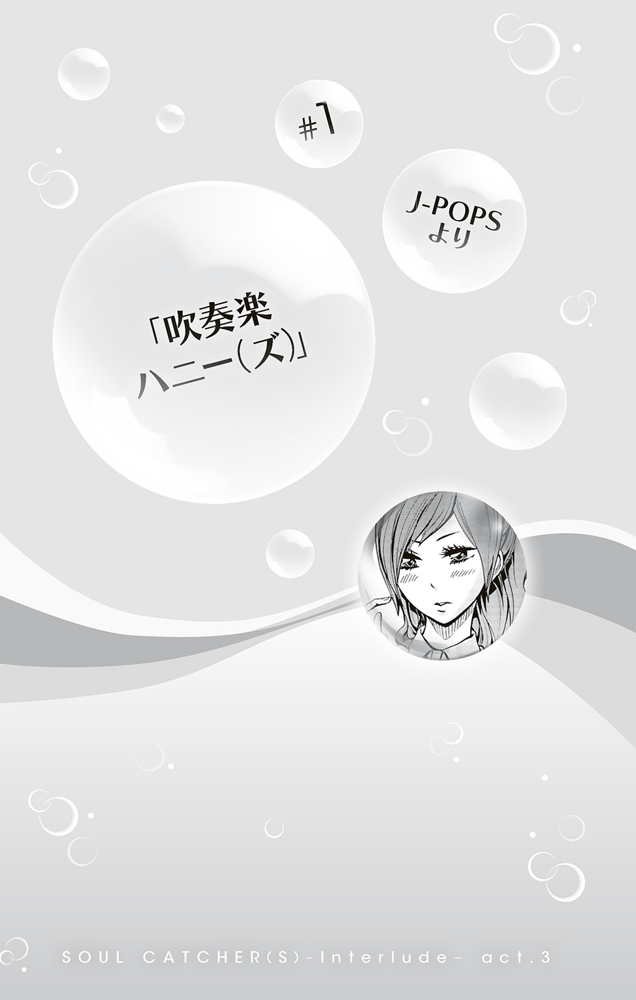
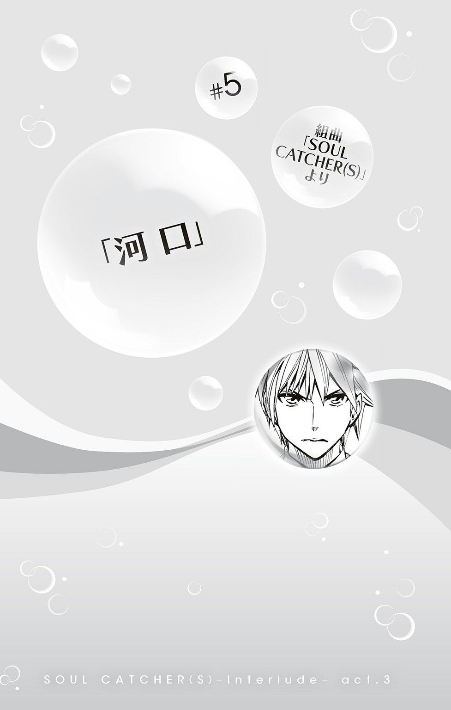

| SOUL CATCHER(S)―Interlude― act.3 有終のカルナバル | |
| 神海英雄 & 成上真 | |
この本は縦書きでレイアウトされています。
また、ご覧になる機種により、表示の差が認められることがあります。
ＣＯＮＴＥＮＴＳ
＃１ J-POPSより
＃２ 世俗カンタータ
＃３ 練習曲
＃４ 童謡より
＃５ 組曲「SOUL CATCHER(S)」より
★この作品はフィクションです。実在の人物・団体・事件などには、いっさい関係ありません。

「きゃあああああっ！」
どこかで聞き覚えのあるような、鋭い叫び声――
「神峰、今のは......」
「邑楽先輩!?」
ふたりは叫び声のしたほうへ視線を向ける。
けれどその視線は、ペンキのはげたコンクリート造りの建物によってはばまれた。
話は――前日にさかのぼる。

「前にも言った通り、明日は練習休みだから。間違えて登校してこないようにね！」
鳴苑高校吹奏楽部、顧問の谺夕子がそう言って練習を締めると、音楽室のなかは晩夏のセミで賑わう窓の外をはるかにしのぐ喧騒で満たされた。
練習が休みになるなんて不安だ、という声も一部ありはしたものの、浮かれた空気のほうが圧倒的優勢だ。絶対王者と言われた天籟高校を打ち破り、鳴苑高校が悲願の全国大会出場を決めてからまだ日は浅い。全国へ向けた闘志は十分......ではあるものの、夏休みを返上した連日の猛練習のなか、学校都合で申し渡されたふいの休みが天からの恵みのように思えてしまうのもまた事実である。
「なあ神峰」
自分の楽器をケースにしまう生徒たちに混じって、いまやこの鳴苑高校吹奏楽部の名物、学生指揮者の神峰翔太は、練習用に並べていたパイプいすの回収を行っている。その神峰翔太を、自前のサックスを早々にケースへとしまいおえた親友の刻阪響が呼び止めた。
「明日の予定、なにか決まってるのか？」
「予定？ そうだな......」
「よかったらうちへ来ないか。昨日から姉さんが帰ってきてるんだ」
刻阪響のサックスは、高校生ながらもすでに海外の有識者たちから高く評価されている。その姉の刻阪楓はといえば、世界をまたにかけるバイオリン奏者であり、神峰と刻阪の怖い師匠であり、そして、神峰のライバル伊調鋭一の危機には、なにも聞かず力を貸してくれた恩人でもあった。
「姉さんも神峰に会いたがってるしさ」
「あ......！ そういや、楓さんに、伊調のことのお礼まだちゃんと言ってねェかも......！」
「え？ ああ、そういえば姉さん、そんなことも言ってたな」
刻阪が冗談めかしてそう答えると、神峰は、はためにもわかるほどうろたえた。
「や、やべえ！ どうしよう......世話になるだけなっといて......あ！ そういえば、バイクのガソリンとかけっこう高いよな。高速も使ったって言ってたし、その代金も......」
神峰の目には他人の〝心〟がはっきりと形をとって見えるらしい。そのせいなのかなんなのか、時に周囲が驚くほどの大胆さを見せるのに、基本的な対人関係には臆病とも言えるほど気を使いすぎてしまうのが、彼という人間だった。
「ごめん神峰、冗談だよ。神峰から改めてお礼なんか言ったら、ましてやお金なんか差しだそうものなら、姉さん逆に怒りだすんじゃないかな。他人行儀すぎるって」
「でも......」
「おい、神峰ェ、刻阪ァ！」
そのとき、音楽室の反対側からふたりを呼んだのは、大型楽器を準備室に片づけるのを、抜群のチームワークではや終えた打楽器パートのパートリーダー、打樋通であった。
「なんスか、打樋せんぱ......」
「明日の待ち合わせ、現地正門前十一時に変更な！」
「え？」
「は？」
神峰と刻阪が、同時に声をあげる。打樋はそれにかまわず続けた。
「忘れ物すんなよ！ 入場料はタダっつっても、それ以外は自分持ちだからな！」
「あの、すみませんけど先輩、話がよく......」
「話ィ？ 話なら、音羽から聞いてんだろ？」
「音羽先輩？」
神峰と刻阪はふたごの首振り人形さながら、同時にトランペットパートのエリアへ顔を向けた。すると、トランペットパートの中央に立つパートリーダー音羽悟偉が、まっすぐに神峰と刻阪の目を見つめかえしてきた。
「先輩、これはどういうことですか？」
「......そういうことだ」
「いや、どういうことスか！」
「明日はみんなでウォーターアイランドへ行くぞ。肺活量の訓練にもなるし、暑さ対策にもなるし、なにより楽しい」
「ウォーターアイランドって......なんかすべり台とかもあるプール......だよな、刻阪？」
「音羽先輩、僕たちがそれについて行くって話、初耳なんですが」
「そういえば、オレもいま初めて言った気がするぞ」
音羽はいけしゃあしゃあと答えたのち「楽しみだな」と短く笑った。
というわけで、プールなのである。
「なにかあったのかな」
「大丈夫か......？」
すでに着替えを終え、プールサイドで女子部員たちを待つ男子部員の面々はたがいに顔を見合わせざわついている。邑楽の叫び声が聞こえてからすでに数分が経過している。女子更衣室のある、楽しそうなイルカの絵が描かれたコンクリートの建物――通称、イルカハウス――は、さきほどの叫びが噓のように沈黙している。
夏にしては温度が低くなってしまった今日、周囲に人はまばらで、様子を知ろうにも更衣室から出てくる人影はなかった。
また仮に出てきたとしても、水着姿の見知らぬ女性に話しかける勇気はなかったと思われる。
「誰か見に行ったほうがいいんじゃないか」
口火を切ったのは、早く遊びたくてうずうずしている様子の音羽である。なお、こらえ症のないことでは音羽を凌駕する打樋はといえば、すでに打楽器メンバーの男子をひきつれ、この群馬ウォーターアイランドの名物である巨大すべり台をすべりまくっていた。
「そうだな......」
部長の奏馬俊平が、ぐるりとまわりを見渡す。
「よし、じゃあ、御器谷。頼んだ」
「え、ボク!?」
話を振られたのは、バスクラリネットパートリーダーの御器谷であった。れっきとした男子部員であるのだが、その顔立ちゆえかよく女性に間違えられる。しかし。
「奏馬、いくらなんでもそれは無理があるだろう。このかっこうじゃ、変質者に間違われかねない」

音羽が言ったように、水着姿――しかも「学校用以外ではこれしか持っていない」と持ってきた、面積の小さい男子競泳用水着を身につけた御器谷の姿ときたら――どこの陸上選手かとみまごうような下半身から、見事な割れた腹筋、上腕筋は重量級打楽器の運搬手伝いに毎回駆り出されているのが納得の厚みで、広背筋のもりあがりに至ってはもはや鬼が潜んでいてもおかしくなさそうな隆々さである。御器谷の柔和さになかばタメ口をきいていたパートの後輩たちが、今日に限っては教師相手にも使わないような最上級の敬語を使ってしまうのも納得の雄々しさであった。
「そういうことじゃなくて、御器谷は邑楽とはイトコだろ？ 幼なじみだっていうし、大丈夫かなと」
「なるほど」
奏馬の言い分に、音羽がうなずく。
「......あ、でも、更衣室には邑楽以外もいるのか。そうすると......どうするか......」
困ったように腕を組む奏馬のまえで、
「............ボク、見てくるよ」
しぶしぶといった様子で御器谷が手をあげた。
「ボクなんか変質者の汚名をかぶるのが一番似合ってるし。女の子たちから毛虫みたいな扱いされるのがボクにはちょうどいいんだ。どうせボクなんてコンクリートのしみみたいな存在なんだから......」
「わあ！ 御器谷先輩それ以上はストップで！」
口から暗い発言がこぼれ続ける御器谷を止めたのは、神峰だった。
「行くならオレが行きます」
「え、でも」
「大丈夫ス！ 邑楽先輩にはオレも怒られ慣れてますし」
部内でも面倒見のよいことで知られる三年の邑楽恵は、つい一年ほど前まで音楽に関してはまるで素人であった神峰の、部活の先輩であると同時にピアノの師匠でもある。が、ふたりが......というか邑楽のほうが神峰に対し少々ばかり艶めいた感情を抱いていることは、吹奏楽部メンバーにとっていまや常識であった。知らぬは神峰本人ばかりなり、である。
「神峰、まずは外から呼びかけてみるといいんじゃないかな」
「そうだな、そうする」
多数の女子たちが着替えを行っているという場所へ赴かんとする高二男子としてはいっそもったいないと言えるほどの無邪気さで、神峰はイルカハウスの前に立った。
イルカハウスとプールエリアの出入り口は、分厚いカーテンで遮られている。その前で神峰は両手を口の左右にあてると、
「邑楽せんぱ......」
大声で呼びかけようとした、そのとき。
「......なに？」
「えっ！ あ！ 邑楽先輩」
分厚いカーテンを片手で跳ね上げ現れたのは、浜辺に打ち上げられた生まれたばかりの水したたらせた美神――ではなく、ウォーターアイランドのプールサイドで水着に着替えたばかりの邑楽であった。
ふだんは左右に流しているソバージュのかかった髪は後ろでまとめてプラスチックのバレッタで固定されている。そのせいでむき出しになっているうなじからは、殺菌シャワーの水がまだぽたぽたと垂れていた。その下の肩はむいたばかりのゆで卵のような柔らかさ、水着はホルターネックタイプで、首まわりから下に落ちる触りごこちのよさそうな黒い生地は、鎖骨から胸にかけ完璧とも言える稜線を描いたのち胸の下の金属の円環で一度合流し、形のよいへそをおおってしまうことを避けるようにふたつに分流してその下でふたたび合流する。
「神峰、アンタ、こんなところでなにしてるの？」
「あ、いや......その......」
神峰は口ごもる。ほかならぬ邑楽の叫び声が聞こえたので様子を見に、とは、なぜか言いにくい状況だった。
「この先は女子用の更衣室よ。間違って入ったふりなんかしたら、見損なうわよ」
邑楽の目に剣吞な光が宿ると、神峰はあわてて両手を横に振った。
「ま、まさか！ ンなつもりねェス！」
本当にそんなつもりではなかったのだが、ふだんは服に隠れているすらりとした二の腕やら大腿部やらを外気にさらしている邑楽を前にすると、妙に悪いことをしているような気分になってしまう。水着姿である、というのは、こちらも同じ条件のはずなのだが――。
「ならいいけど......さっさと行きなさいよ」
せき立てられるようにして、神峰は邑楽の前を歩きだす。
手に持っていた麻のシャツに手を通しつつ歩きだす邑楽の姿は、まさに姉御、と呼びたくなるような風格で、神峰は結局、さきほどの叫びがなんだったのかということを聞きそびれてしまった。
「あれぇ？」
「神峰、わざわざ恵のこと迎えに来たの？」
歩く邑楽と神峰においすがってきたのは、フルートのパートリーダー吹越花澄と、オーボエのパートリーダー、木戸雅である。
「な、なに言ってんのよ」
含み笑いをする花澄と雅を、邑楽が目をつりあげにらみかえす。いっぽう神峰は、べつのことで度肝を抜かれていた。
「え？ ちょ、吹越先輩......！ シャワーを浴びるのは着替えたあとじゃないスか!?」
フルートにおいてすでにプロ級の腕前をそなえる花澄は、そのほんわかとした容姿に違わず、天然ボケの才に恵まれている。その才能は時にフルートの才をすら超えるのではと思わせるほどで、しかしこれをして天は二物を与えると言ってもよいのかどうかは定かではない。
ともあれ、本日の待ち合わせ場所に、丈の短いパンツとそれと同じデザインの半袖のトップスというかわいらしい姿で現れた花澄は、プールサイドでぱたぱたと水をしたたらす今も、同じかっこうをしていた。
「着替えたあと......？」
「神峰、着替え忘れたわけじゃなくて、カスミンのはこういう水着なの」
と、教えてくれたのは雅だ。下は花澄と同じように短いパンツ、上半身には肩のでるキャミソールのようなものを着ている。
「水着っていうか、水着の上に着る、サロペットっていうものなんだけど。この下にもうひとつ水着着てるんだけど、べつにこのまま水に入ってもいいんだよ」
「え......そ、そうなんスか？」
言われて見てみると、たしかに、このまま水に入ることもできそうな素材ではある。
「あたしも着てるんだけど、今日はちょっと肌寒いからこのまま泳ごっか、って」
「そうそう！」
「そういうのが......あるんスね」
としか、男の神峰にはいいようがない。
「いくらわたしでも、服のまま水あびるほどはぼんやりしてないからねっ、神峰くん？」
花澄が、急におねえさんぶった調子で言った。
「す、すみません」
「でも、服みたいだから電車もこのかっこうでいいやーって出てきたら、帰り用の着替えを持ってくるの、忘れちゃったんだけど」
「えっ!?」
「あははー、でも大丈夫、メグメグに借りるから」
「メグが着替えを多めにもってきてくれてよかったよね」
「うん、さすが！ メグメグってば自分のピンチにも役立ってたし！」
「ピンチ？ そういえば......」
さきほどの邑楽の叫び声は、という疑問を神峰が口にするのを、
「そ――そういえば、歌林は？」
それまで黙っていた邑楽が遮るように言った。
さて、ここで突然場面は変わって、鳴苑高校吹奏楽部の面々が高校生らしい夏休みを満喫しているウォーターアイランドからは遠く離れた市街地の一角。いまどきのアパレルショップが軒をつらねるファッションビルである。
「キョクリス先輩、ちゃんと見てったら！」
「見てといっても聖月......ぼくはいったいどうすれば」
キョクリスことソニトゥス学院高校三年の曲山・クリストファー・晴海は、目をおおっていた両手の指をそっと開いた。
「どうすればもなにも、水着！ 選んでくれるって言ったのに、さっきから全然見てくれてない」
いちご模様のホルターネックタイプの水着を試着中のソニ学の二年、吹越聖月が、腰に手をあて、キョクリスをにらみつける。
「これでも頑張って見てますよ！」
「あのさー、水着姿くらい今年の夏だけで何回も見てるくせに、なんでいまさら照れてんの？」
そう言って指折り数える聖月の肌は、その発言を裏付けるかのように浅黒く焼けている。
「だってそもそも海やプールは水着になるところじゃないですか」
「水着ショップだって水着になるところでしょ」
「そういう問題じゃありません！ 聖月は男心というものがわかってない！」
「キョクリス先輩だって、女心がわかってないじゃん！」
「お客さま......」
ふたりのやりとりを聞いていたショップ店員が、軽く声をかける。客同士がもめて店内の雰囲気が悪くなるのは、さけるべき事態であった。そんな店員の心配をよそに、ふたりの口論は続いた。
「聖月の心なんかわかりませんよ！ そろそろ夏も終わろうという時期に、いまさら新しい水着なんて......」
「いまさらじゃないもん！ お姉ちゃんも、きのう水着買ったってメッセしてきたもん！ 今日、鳴苑のみんなとプール行くからって。すっごいかわいいやつ」
「それで悔しくなって対抗してってことですか？」
キョクリスはひとつため息をついた。
「聖月、お姉さんのことは、もう気にしないで。聖月には聖月の良さがあるんですから。今のも、さっきのも、全部聖月に似合ってますよ」
「そうじゃないの！ キョクリス先輩、大学からはヨーロッパに行っちゃうんでしょ？ そしたらもう一緒に遊べないじゃん。だから、今のうちにいっぱい思い出つくっておきたいの！ まだ忙しくない、夏のうちに......」
「いや、まあ、それを言うなら、実はもう忙しいといえば忙しいのですが......」
「......でも、夏はまだ終わってないもん......」
「聖月......」
むかいあったまま沈黙するふたりを見て、声をかけようとしていた店員は、笑顔のままそっと背をむけた。犬も食わないアレに長々つきあうほど、季節はずれのショップ店員はヒマではないのである。
さて、さらにところ変わって、鳴苑高校から数駅離れた郊外の駅にあるスポーツクラブである。
そのスポーツクラブの１階にある広々とした25メートルプールは６ラインに仕切られ、半分がビート板を必要とする初心者向け、そしてもう半分は、25メートルを楽々泳ぎ切る上級者向けのコースだ。その、上級者向けのコースを、ふたりの女性が競うように泳いでいた。
いま、先行するひとりがプールのはしにたどり着いたところで、くるりと体を丸めターンする。入れ違いにはしにたどり着いたもうひとりは、しばらく水のなかにもぐっていたかと思うと、ざば、と水面から顔をあげた。もうひとりが、相手が追ってこないことに気づいたらしく、プールの中央で泳ぐのをやめ、顔を水面に浮かべる。
「あれ、もうギブアップ？」
ゴーグルをとった下に現れたその顔は、刻阪響の姉、刻阪楓である。
「......小休止」
プールのへりによりかかりながら息も絶え絶えに答えたのは、鳴苑高校吹奏楽部顧問の谺夕子。ふたりは音大時代からの腐れ縁である。学年も学科もさらには進路も性格もまるで異なるふたりだが、生真面目な谺をなぜだか楓は妙に気に入っているらしく、卒業後も絶えることなく連絡を取り合っていた。さらに幼いころからサックスの才覚を発揮していた楓の弟、刻阪響は、はじめてその演奏を聞いたとき谺が予感したように、今では鳴苑高校の吹奏楽部員として谺の指導下にあり、今年はついに悲願の全国大会出場を決めている。
「なっさけないなー。音大時代は基礎トレの鬼の呼び名をほしいままにしていた、あの夕子ちゃんが」
「言っとくけど、そう呼んでたのあんただけだから。だいたいこっちは学校のあれやこれやで明け方近くまでいろいろこなしてたの。十時すぎになって、昨日の夕方から寝っぱなしで目がとけそうだから目覚ましプールつきあってー、なんて電話してくるあんたと一緒にしないでよ」
谺はそういいながらプールからあがると、プールサイドに用意してあるプラスチック製のベンチにすわりこんだ。
「今日は吹奏楽休みなんでしょ？」
谺を追って楓もまたプールからあがり、となりのベンチにこしかける。
「高校教師なめんなよ。部活動のことだけ考えてりゃいいなんて、いったいどこのお貴族さまだってーの。公立高校の音楽教師ともなると、一学期の課題のまとめに二学期に向けた授業の準備やら教材の手配やら、音大受験する生徒の指導に資料あつめ......あっいけない！ ピアノの調律の日程変更、昨日のうちに返事する予定だったのに......！」
「まーまー夕子ちゃん。プールに来てまでそんな小難しい顔してると、せっかくの美人がしわだらけババアになっちゃうわよ」
「美人、のとこだけもらっとくわ。あんたこそ、なんなのそのキリギリスみたいな水着」
谺が、楓を上から下まであきれたように眺めながら言った。楓が着ている新緑を思わせる明るいグリーンの水着は、胸の下から下腹部にかけ腹筋の線に沿うように開いている。明るい緑色とその穴から見える肌色の対比が、妙に昆虫を連想させた。さらに、肩からはあまり実用的とは思えないひらひらした布がぶら下がっており、とどめと言わんばかり頭につけている水着と同じ色をした頭飾りときたら、まるで触覚のようだ。
「あれ？ 似合わない？」
「いや......似合ってはいるけど」
「でしょ？ ファンの人が、あたしに、ってデザインしてくれたんだー。この、お腹があいているところは、バイオリンの形をイメージしたんだって」
「なるほど......」
言われてみればたしかに、バイオリンのような形をしている。聞けば、ファンというのは最近日本でもちょくちょく耳にするようになった新進気鋭の若手デザイナーだそうで、谺は、そんな水着を〝キリギリス〟としか見られなかった自分がすこし恥ずかしくなった。
「それにね、この肩から垂れてる羽は、水に入っても濡れて重くなったりしないような、特殊な素材をつかってるとかで」
「へえー............羽？」
「あと頭のこの触覚は、あたしのリクエスト！ やっぱりこういうのがあると、キリギリスーって感じになるよね！」
「キリギリスなの!?」
谺は思わずつっこみを入れた。
「キリギリスなんて思っちゃって恥ずかしいと思った自分が恥ずかしい......」
「ええー？ 意味わかんない。夕子ちゃんたら相変わらず真面目すぎ。体はそんなわがままボディなのになー」
今度は楓が、谺の体を上から下まで見ながら言った。谺の水着は紫がかった黒色のシンプルなビキニで、胸元に金色の円環の飾りがある以外、特にこれというほどのこともない。これというほどのこともないのだが、つまりはそれで必要十分ということなのである。あまりに具体的に描写してしまうと、いわゆる大人向けになりすぎいろいろと問題が発生してしまう懸念があるため、詳細はお察し願いたい。
「刻阪......」
「そういえば夕子ちゃんの水着、なんか黒くてアリっぽくない？ アリとキリギリスって感じでよくない？」
「刻阪、あのね、それはいいけど、ひとつ言わせて」
「なに？」
「〝わがままボディ〟って、死語だわよ」
「え？」
「いまどきの若い子は、そんな言葉使わないの。若者ぶってても、あんたも順調に年食ってるってことねぇ」
「ちょ......いや、違うってば！」
楓が、めずらしくあわてて両手を横に振る。
「外国から帰ってきたばっかで、最近の日本のことよくわからないだけだもん！ 年とかじゃないから！ ワータシニホンゴワカリマセーン」
「どーせ今日あたしをプールに誘ったのだって、弟くんが部活のみんなとプールに行くって聞いて、羨ましくなったんでしょ」
「ぐ......」
「昔のあんただったら一緒に行くとか言いだしてたのかもしれないけど、輝く太陽の下で透明な水をまぁるくはじくピチピチ肌の間に混じる勇気はもうないもんねえ......紫外線こわいし。日焼けの心配しなくていい屋内スポーツクラブがせいぜい、ってね」
「やめて！ 違う！ 違うのおおおおおっ！」
はげしく首を横に振りながら頭を抱える楓と、久しぶりに優位に立って楽しそうな谺。そんなふたりを、同じプールの初心者優先ラインから見つめているひとりの少女がいた。
「......ふたりして、なに話してるのかなあ......」
刻阪家の近所に住む、刻阪響のひとつしたの幼馴染である滝沢桃子、通称モコである。
「音大時代の知り合いだっていうから、やっぱり音楽のことかな？ それとも......」
それとも、もっと大人な話題だったりして、と、想像をふくらませてみるモコだったが、いわゆる〝大人な話題〟についての自分のイメージの貧困さにがっかりして、ビート板につかまりぱしゃぱしゃと水面を蹴る。
ちょうど近所を通りかかったところを、楓に強引に誘われついてきたはいいものの、ふたりの堂々たる水着姿に対し、モコが着ているのは小花柄の模様で胸元にリボンのついたワンピース水着。そんな自分があまりに子どもっぽくて、大人なふたりにはなんだか近寄りがたかった。
「あたしも、大人になったらあんなふうになりたいな......」
反対側のプールサイドのベンチでたわむれる谺と楓を、その会話の実態も知らず、モコは眩しげに見つめた。
「だめだモコ！ 騙されるな！」
「え？」
隣に座っていた刻阪が急に叫んだので、神峰はびっくりした。
「刻阪、どうした？」
「あ......いや、なんだろう、急にいま......」
「親父が出てきてんぞ」
人の心が実体となって見える神峰にとって、普段の刻阪は、本人によく似たきらきらと輝くようにかろやかな心の持ち主である。それが、幼馴染のモコに関わるときだけは、バーコードハゲも見事な頑固親父ハートに変化してしまうのだった。
「大丈夫か？」
「うん......なんだったんだろう、いま、僕の大切なものにとってよくないことが起こってしまったような気が......」
「神峰くん、刻阪くん、カリン見た？」
右側のほうから歩いてきた雅が、ふたりに声をかける。
「え？ いや、まだ見てねェスけど」
男子に続き、女子たちも着替えが終わり――みな思い思いにプールに飛びこみ水とたわむれている。神峰と刻阪も、ウォーターアイランドの目玉のひとつである流れるプールを三周ほどしたところでいちどあがり、次はどこへ行こうかと相談していたところだった。
「歌林先輩、いないんですか？」
雅の後ろからやってきた邑楽と花澄に、刻阪が尋ねる。
「そうなの。どうせ今日はあんまり混んでないし合流できるでしょって、置いてきちゃったのがまずかったかも......」
「あたし、もう一回更衣室のなか見てこよっか？ もしかしたらまだ着替えているのかも」
「更衣室ならさっきあたしが見た。もう誰もいなかったわよ」
雅と邑楽がそれなりに深刻な表情で相談するなか、
「ねえ、あれ、カリンじゃない？」
花澄が、目の前にある流れるプールの反対側を指さした。
たしかに、向こうには、なにやら女性が歩いている。遠目にもスタイルがよく、なかなか派手な水着に下半身にはパレオを巻いている。しかし歌林を見分けるに特徴的な金髪は、頭につけている大きな花飾りで隠されてしまっていた。
「え、アレ......ッスか？」
顔こそよく見えないものの、なんとなく、普段知っている歌林とは違うような気がする。同じ違和感は神峰ばかりではなく刻阪も、そして邑楽や雅も感じたようで、みな一様に首をひねった。が、花澄ばかりはそれが歌林であることに確信を抱いているかのようである。
「間違いないって！ カリンが買ってた水着、あーいうやつだもん。カリンて着瘦せするタイプなんだからー。あ、そうだ、刻阪くん、ちょっと呼んできて！」
「僕ですか!?」
「そうそう、ほら、プール泳いでいけば近いよ！ はい、行ってらっしゃーい」
花澄に指名された刻阪は、まだ釈然としない表情ながら、しかたなく言われた通りふたたび流れるプールのなかに入ると、歌林とおぼしき女性の姿を追いかけた。
幸い、歌林（？）はプールの流れる方向に向かって歩いてくれており、プールが勝手に流れてくれるのに身をまかせているうちに、歌林の後ろへ追いつくことができた。
「歌林先輩......ですか？」
刻阪はプールのなかから呼びかけた。が、相手が歌林であるという確信を刻阪自身がもてないでいるせいか、声が小さく歌林（？）は気づかない。プールが右に曲がろうとするところで歌林（？）が左に曲がろうとしたので、刻阪はあわててプールからあがり、水をぽたぽたしたたらせながら歌林（？）にかけよった。
「歌林先輩！」
「......刻阪くん？」
と、前にいた歌林（？）が振り返る。
「えっ!?」
「刻阪くん！」
後ろから歌林の声がした。
「うちの部員をナンパとは、ヒビキくんもやるんね」
「いや、だから、それは誤解で......うちの歌林先輩と、そちらのかたを見間違えてしまって」
「刻阪くん、うちの部員をナンパするのはかまわないが、全国への練習はちゃんとやっているのか？」
「だから......」
「我が天籟を下しての全国出場だ。ナンパなどにうつつをぬかして、鳴苑の演奏が過去の天籟に劣るということにでもなれば、我々天籟の沽券にも関わることなんだぞ」
「それはもちろん、よくわかって......」
「......シゲちゃんて、そんな冗談も言えるんね」
一緒になって刻阪を糾弾していたうちのひとり、天籟高校のサックス担当弾徹也が、部長の重松に向かって、感心したようにそう言った。
「......冗談なんですか？」
責められっぱなしだった刻阪が、豆鉄砲をくらったような顔をする。
刻阪が歌林だと思って声をかけたのは、天籟高校の女子部員でオーボエを吹いている、琴城柚子だった。
「校舎が使えなくて、練習が休みなんだろ？」
「えっ、どうして知ってるんですか？」
「さっき奏馬くんに会ったんだ。あとでウォータースライダー一緒にやろうって話になってる」
「なあんだ......」
刻阪は胸をなでおろした。
「わざわざプレッシャーなんかかけなくても、鳴苑のことだ。天籟を破ったにふさわしいといえる演奏を、全国でも魅せてくれるんだろう？」
重松は、今度はさらにわかりやすく冗談めかした口調で、じっと刻阪の目を見つめながら言った。
どうやら今度の言葉こそ冗談ではないらしい。
刻阪は、重松の気迫に飲まれたような気分になりながら、はい、と小さくうなずく。
「もちろん！」
そのとき、それまで刻阪の後ろに隠れるようにしていた歌林が、ぐい、と体を押し出すようにして前に出た。
「鳴苑高校の演奏は全国でも通用するはず......ううん、そこまでの演奏にしあげてみせます！ ねっ、刻阪くん！」
「そうですね、歌林先輩」
刻阪は歌林の言葉に力をもらったように、強くうなずく。
「歌林先輩？ ああ、私......」
言いながら柚子は改めて歌林を見て――そして、さりげなく、刻阪から離れる方向に半歩移動した。
「私、この人に間違えられたん......ですね？」
柚子は、遠目にも目立つ南国の花がいろどられた、後ろで結ぶタイプのビキニをみごとに着こなし、腰からは同じ模様のパレオ、頭には大きな花飾りをつけている。
いっぽう歌林は、いつものツインテールをおだんごあたまにまとめ、腰回りに小さなフリルのついた黒地に白い水玉模様の水着を着ていた。さらには、体にぐるりとバスタオルを巻きつけ、その水着姿の大半を隠している。なおそのバスタオルというのは、サカナヒットとバッチリベアが大きくプリントされた特製コラボバスタオル。
はっきりいって、色気がない。
ましてや柚子とは似ても似つかない。
「まあ、間違えるってことは誰しもあるから......なあ、弾？」
「そうさねシゲちゃん。誰にでもうっかりってことは......」
そう語りながら刻阪へと向ける弾と重松の視線には、明らかに疑惑の色がにじんでいる。
「ち、違います！ 本当にナンパとかじゃなくて!! あの、遠目に......その、ああいう水着を着ているはずというお話でしたので、たぶんそうだろうということで......」
しかも、それを刻阪自身が見間違えたというわけではなく、ただ花澄の指示にしたがった結果であるので、どうにも言い訳がしづらい状況だ。
「あっ、あのっ！ あたしが本当は今日持ってくる予定だった水着が、ちょっとそれに似てて......いろいろあって、結局去年買ったやつ持って来ちゃって......それで、多分間違えられたんじゃないかなと......」
歌林があわててフォローする。
「あ、それで......」
「ええ、たぶん......」
どうにも納得感の欠ける空気のなか、救いの主ともいうべきか、神峰をつれた邑楽たちが追いついてきた。
「あれっ？ カリン、それ......？」
「こないだ買ったやつどうしたの？」
雅と花澄が、歌林の着ている水着にめざとく気がつく。
「あ、あの、それが......家で着てみたら、ちょっと......派手すぎるっていうか......」
歌林がアワアワと言い訳をはじめる。
「せっかく可愛いの買ったのにもったいない」
「カリン、似合ってたのになー」
ブーブーと文句をいう花澄と雅を、邑楽がなだめる。
さらにその後ろにいる神峰に、今度は弾が気づいた。
「あ、ショータくん！」
「弾、お前たちもきてたのか」
「ショータくんこそ、うちを破って全国出場を決めておいて、こんなところで遊んでいるたァ余裕なんな」
「えええっ!? いや、オレらは......」
刻阪がからかわれたときと同じように神峰があわてふためくと、
さらに――。
「ウシャア！ うちのも天籟のも揃ってるじゃねえか」
神峰たちがきたのとは反対側から、打樋がやってきた。
「いま、ウォータースライダーの早すべり勝負がいいとこなんだよ。お前らも早く来い！」
「早すべり勝負、ッスか......？」
ここらでふたたび場所が変わり――群馬から少々離れた東関東のある地では、ある人物がプールを楽しんでいた。
「おねーちゃん、なにしてるの？」
「夏を満喫してるんだにゃん」
通りすがりにそう尋ねた子どもに、そう答えたのは、全日本吹奏楽コンクール高校Ａの部の東関東代表校、サックス担当の符波有愛である。
水着は胸からももまでをおおう八段フリルで、そこにカラフルな水玉模様が入っている。
家の前の私道に出した子ども用のビニールプールに水をはり、お風呂に入っているような姿勢で水につかっていた。足がつくどころか腰をつけても顔が出る深さだが、なぜかご丁寧にうきわまでつけている。
「よかったら一緒に入るにゃ」
「僕これから塾だから」
「昨日も塾とかいってなかったにゃん？」
「毎日塾だよ。模試の点数が悪かったから曜日を増やしてもらったんだ。今受験に向けて、この夏がテンノーザンなんだよ」
「模試は模試にゃ。大事なのは本番だにょ？ そんなあくせくしたって、なるようにしかならないにゃーん」
そう語る有愛をまじまじと見た小学生は、
「おねーちゃんて、悩みとかなさそうだね」
と言った。
「だって悩んだってしかたないにょ？」
と、有愛は答えた。
さて、さらにところかわって北海道。
その涼しさゆえに夏場は避暑地として人気のあるこの地域にもプールはある。
観光客用のホテルがひしめく駅近くの一角で、ひときわ目立つ高いビルの最上階に作られている、夜になれば夜景の美しい温水プール。
ビルもお高いがお値段も高いこのビルのプールエリアは完全会員制。そこらでは地元の議員がシャワーをあびているかと思えば、あちらでは某一部上場企業の社長が外のテラスで日光浴と洒落こみ、さらにはどこかの雑誌で見覚えのあるどうやらモデルらしい女性が、水着姿のままプールサイドにあるバーカウンターでカクテル片手にバーテンダーとなにごとかを囁きあっていたりする。
そんななかに、周囲の人物よりもふたまわりは若いひとりの女性が、臆する様子もなく現れた。
上は線の細いビキニ。下はパレオでおおわれているが、歩くたびに形の良い足がちらちらと見え隠れする。後ろにまとめられた長い髪は少しおくれげが出て、首にかけられた細い銀鎖にかるくかかっており、それが妙な色っぽさをかもし出していた。
女性は、周囲のぶしつけな視線にかまう様子もなく、プールサイドまで行くと、足をおおっていたパレオをするりと脱いだ。そして、その脚線美を周囲に十二分に堪能させたのち、水のなかにするりとはいりこむ。
彼女が反対側のプールサイドまで泳いだところで、男がひとり彼女へ近づいた。若くして成功した青年実業家として有名な男である。
「ハイ」
「ハァイ」
「最近見かけなかったね。どこでなにしてたんだい？」
「コンクールで忙しかったの」
「なんのコンクール？」
「音楽関係」
「へえ、きみ、音楽をやってるんだ」
「そう、学校で、吹奏楽をね」
女の言うことを冗談だと思ったらしい男が、はぐらかされたなと言わんばかりに肩をすくめる。
ふたたび水の生き物となった彼女が反対サイドに泳ぎつくと、今度はそこにサングラスをかけた男が待ち構えていた。サングラスの下は、最近テレビでよく見かける、イケメン俳優である。
「ハイ」
「ハァイ」
「このあいだのデートの約束、すっぽかすなんてひどいな」
「そんな約束したかしら？ してたらすっぽかさないわ」
「それじゃあ今夜七時、このホテルの僕の部屋では？」
「残念だわ、そんなに遅いと、明日の練習に遅れちゃうから」
「練習？ なんの？ 僕との約束より大事なこと？」
「そうねえ、全国大会で一位をとるまではね」
またも男のほうが、はぐらかされたなとばかり苦笑いする。ふたたび泳ぎだした彼女をじっと見ていた中年の男が、プールサイドを徘徊するウエイターのひとりを呼び止めた。
「おい、きみ、彼女は何者だね」
「あの女性ですか？」
「さっきから見ていたら、あの堂々たる態度といい、知り合い関係といい、ただ者じゃない」
「ほかのお客様の情報を勝手にお話しすることは、禁じられておりますので」
「そう言うな。私はこのホテルのオーナーとは懇意にしていてね。ひとつ、たのむよ」
そう言って男は、ウエイターの手をそっとつかむ。つかむふりをして、丸めた札束をそっと握らせた。ウエイターはあわててそれをつきかえす。
「お客さま、こういうことをされては困ります」
「そこを、なんとか」
「困ります。こんなものをいただいても、私どもはなにも存じ上げませんので......」
ウエイターはそそくさと逃げるようにして立ち去った。
なお、べつにこのウエイターが、とても正直者であるとか、職務規定に極めて忠実であるとか、そういうことではない。彼は本当に知らないのである。
いや、彼も、彼の同僚たちも、このプールの係員たちも、さらには彼女に声をかけていた青年実業家もイケメン俳優も、彼女が時折プールに現れるということ以外、何者なのかまったくわかっていない。
彼女――唄方幸乃が、本当に高校生で、吹奏楽をやっていて、このたび全国大会の出場を決め、全国で一位を目指し毎日真面目にバスクラリネットといういまいちマイナーなイメージの強い楽器を吹いていることなど、誰に言っても信じてもらえないのだった。
話はウォーターアイランドに戻る。ここの目玉であるウォータースライダーにはすべりはじめてからすべり終わるまでのタイムを計測する機能がついている。そして、一回の来場あたり一度だけ挑戦できる〝タイムアタックチャレンジ〟で、その年の最速タイムを更新すると、景品としてウォーターアイランドの団体無料券をもらえるとのことだった。
そして、なんと、打樋がこの夏のはじめに出したという最速記録は、いまだ破られていないらしい。スライダーのすべり口へと続く鉄製の階段の入り口に、打樋の名前と、そのとき撮られたらしい顔写真が貼られている。
「俺の記録破ったらジュースおごってやるよ。さっき音羽がいいとこまでいったんだが、俺の記録にゃあと一歩およばなかったな」
「無料券もジュースも魅力的だけんどよぉ......最速、と聞くと、昔の血がうずいてくんべや」
怪我で断念したものの、かつては陸上選手であった弾が、意気揚々とすべり口へ向かう。
ひとくちにウォータースライダーといってもいくつか種類がある。ざっくり二種類に分ければ、公園のすべり台に水を流しているようなオープンなタイプのものと、水をながした筒のなかをすべるトンネル状タイプのものだ。ここのスライダーはトンネルタイプで、非常階段のような鉄製の階段を昇ったうえの、地上10メートルほどのところに入り口があり、そこから三回ほど螺旋を描く筒のなかをすべり降りて地上のプールに着水できるようになっている。
そして、トンネル、とはいっても、三箇所ほど上半分が透明のプラスチックになっているところがあり、すべっている途中の人を着水するプール近くの地上から見物できる。そして、そこを通過するまでの時間や通過するときの速度で、最終的なタイムが大体予測できるらしい。
「いぐべ！」
頭上から弾の声がした。かと思うと、入り口付近の第一コーナーを、すさまじい勢いですべり落ちていく弾の姿が一瞬ちらりと見えた。
「えっ!? あんなに速いのか!?」
神峰が驚いていると、隣で見ていた打樋が、
「......速ェな」
と、小さくつぶやく。
果たして、第一コーナーを上回る速度で第二、第三コーナーをすべり落ち、大量の水しぶきとともに下のプールへ着水した弾は、打樋の記録をさらに０・１秒更新してみせた。
「さすがは弾だ」
「さすがですね」
様子を見ていた重松と柚子が、少し誇らしげに言う。いっぽう神峰と刻阪は、予想を超える速度にびびっていた。そして打樋は、あからさまに不機嫌な表情になる。
「くそっ！ よし、神峰！ 刻阪！ 仇をとってこい！」
「えっ、打樋先輩は行かないんですか？」
「一夏に同じやつが二回記録更新しても受理してもらえねぇんだよ」
刻阪の問いに、打樋が口惜しそうに答える。
「いや、でも、あの速度ですべるのって、けっこう危なくないッスか......」
「見た目ほど怖かねェって。バランスくずすとちょっと水が口に入ってくるしーけどすぐに出口だし、なにかあっても空中に放り出されたりするわけじゃねーしな。あ、でも、なかでバランス崩して体がぐるぐる回ると水圧で水着が脱げそうになってちょっとアブねーけど」
「......辞退はできないスかね」
「できねェに決まってんだろ！ おい神峰、刻阪、男なら覚悟決めろよ」
打樋の目つきが険しくなる。
いっぽう、女性陣はなかなかやる気のようだ。
「じゃあ次、わたし、行ってきます」
「わたしもいくー！ ねえ、これ、電車ごっこみたいに一列になってすべったら面白そうじゃない？」
「それは禁止だってあそこに書いてあるよ」
柚子、それに花澄に雅が、一緒になってウォータースライダーの入り口へと向かっていた。
「邑楽、歌林、お前らは？ 行かねーのかよ」
「あ、あたしは......あとで」
打樋に言われ、歌林はおずおずと言った。勝ち気な性格のはずの彼女が、今日はなにやら妙におとなしい。
「あたしはパス」
いっぽう邑楽は、堂々とそう返した。
「今日は、水に入る予定ないの」
自身の言う通り――すでにプールに来て一時間以上は経っているのに、邑楽の体はどこも濡れていない。はじめに殺菌用のシャワーをあびて以降は、いっさい水に入っていないようだ。それに、上に来ているシャツも、どうやら花澄のように水着兼用というわけではなく普通のシャツのようである。
「ふーん......まあ、いいけどよ」
打樋は少し不満げながらもそれ以上は追及しなかった。
10メートルほど上で、柚子がスライダーのなかへすべりこむのが見えた。
「あんなん、大して怖くねんよ。水に体をまかせてすべり落ちるだけさね。ヒビキくんもショータくんもやりゃいいんに」
景品の引換券をもらって戻ってきた弾が言う。
「単にすべるだけなら楽しそうだけど、弾のスピードはさすがにな......」
「あれはもう人間ボブスレーだよ」
「褒められっと照れんね」
三人が見上げている前で、ちょうど、第一コーナーの窓から、柚子がすべり落ちるのが見えた。人間ボブスレーだった弾に比べ、柚子のすべり落ちる速度は、普通のすべり台よりも少し速い程度だ。
「おや」
動体視力のいい弾が、少し口もと緩めた。
「琴城、体が逆さまになっちまってんな」
「えっ？」
その言葉にみな第二コーナーを注視する。たしかに、ふつうなら足が下で頭が上になってすべり降りているはずが、逆になっていた。そのまま第三コーナーも頭からすべりこみ、下のプールにどぼんと飛びこむ。つま先まで沈んだのち、しばらく泡だけがぶくぶくと浮かんでいたかと思うと、柚子が水面にひょこんと顔を出した。
「第一コーナーのまえに、ぐいーんて曲がるところがあって、そこでバランス崩すとああなるんさ。あとは、第三コーナーの直後にも体がぐるぐるしそうなところがあるんよ」
「弾、よくそんなことまで覚えてるな......」
「琴城、そこからどかないと、次の人がすべれないみたいだぞ。こっちへ」
のんきな会話を交わす弾と神峰をよそに、重松は、いつまでたっても着水地点のあたりで顔だけ出してうろうろしている柚子に声をかけた。
「あっ、はい、あの......」
「どうした、足でもつったか？」
「いえ、足は......」
「えっ、じゃあ頭か？ 速いスピードでぶつかると、たかが水とはいえ水面がコンクリート並みの硬さになるというからな。油断しないほうがいい」
言いながら重松は、プールに飛びこんだ。柚子に手を貸すつもりらしい。
「だ、大丈夫です！ ひとりであがれますから......！」
「いや、無理はしないほうがいいよ。弾、お前も来い」
「もちろんさあ」
言いながら、重松と弾がプールに入る。
「あ、あの、重松先輩、弾くん、ほんとうに......」
柚子が、あわてふためいた様子で片手を振った。
そのとき――歌林となにごとかを言い交わしていた邑楽が、突然。
「男ども、全員、動くな！」
「はい！」
「あっ、はい！」
邑楽の迫力に気圧され、弾と重松がついつい姿勢を正す。
「いったんプールからあがって！ 手を貸すのは、あたしたちでやるから！」
邑楽と歌林がうなずきあうと、ふたりはプールに飛びこみ柚子のほうへと歩いていった。
「邑楽先輩、今日は水に入らないって言ってなかったか......？」
「気が変わったんじゃないか？」
ざばざばと水をかく邑楽の姿を見ながら、神峰と刻阪は首をひねる。
見ていた打樋は、チッ、と舌打ちをする。
柚子のところへたどり着いた邑楽と歌林は、三人で少し話をしていたかと思うと、突然、ふたりともその場で水の下へもぐりこんだ。
「......あのふたりは、なにしてるんさあ？」
「さあ......」
「なあ......」
弾と神峰と刻阪が首をひねる。重松と打樋とはなにかに勘づいたらしく、無言。
「あった！」
何度か水のなかと外とを行き来していた歌林が、浮き上がるなりそう叫んだ。その手にには、柚子がつけていたはずの水着の一端が握られている。
「あっ......」
「水着......」
「なるほど......」
どうやら、ビキニの上のほうがとれてしまって、それを探していたようだ。
ようやくそれに気づいた弾、神峰、刻阪は、なんだか妙に照れくさくなって、空やら他のプールやらそこらの看板やら、周囲の関係ないものをきょろきょろと見回す。
柚子は、歌林がひろいあげた水着をふたたび身につけようとしていたが、プールのなかでは水の抵抗があってどうもうまくいかないらしい。柚子がそこから動けないせいで、ウォータースライダーの順番待ちの列が長くなってきている。
「......こういうとき、男は無力だな」
「......オウ」
これまで話したことがないはずの重松と打樋の間に、なにかわかりあったような空気が流れる。
あせる柚子と長くなる列とを確認した邑楽は、自分の水着の上に着ていたシャツを脱ぎ、柚子の前を隠すように着せかけた。
「あ......っ、ありがとうございます」
「いいのよ。困ったときはお互いさま」
邑楽のシャツで自分の上半身をようやく隠すことができた柚子と、邑楽と歌林とが、水のなかを軽く泳ぐようにしながら、神峰たちのいるほうへと戻ってきた。
「災難だったな、琴城」
「はい、でも、鳴苑の皆さんのおかげで......」
シャツをおさえているせいで片手が使えない柚子に重松が手を貸し、柚子がプールからあがる。邑楽は、しばらくなにか落ち着かない様子で周囲をきょろきょろしたのち、じっと自分のほうを見つめる神峰を怒ったような顔で見上げた。
「え......あの......すみません！」
邑楽がこういう顔をするときには、とりあえずなにか自分が悪いことをしてしまったのだろう、という思考が身についている神峰が、邑楽に向かって体を直角に折り曲げた。
「は!? なんで謝るわけ!?」
「え？ え？」
「神峰、邑楽に手ぇ貸してやれよ」
打樋がニヤニヤしながら言った。
「あ、そうか、すみません、気がきかなくて......」
「違うわよ、バカ！」
差し出された神峰の手を軽くはたき、邑楽はプールサイドに手をかけ水面からぐいと体を引き上げた。すると。
「うぉっ」
「......おお......」
事態のなりゆきを見守っていた周囲の見知らぬ男女から、小さな歓声のようなものがあがった。
邑楽がそちらのほうをギロリとにらむと、歓声をあげていたもののうち、特に男たちがあわてて目をそらす。が、邑楽が顔をもとへもどすと、またみなチラチラとした視線を、邑楽の背中へと向ける。
そこになにかあるのか、と気になって、神峰は自分の脇をすり抜ける邑楽の背中をひょいと見た。
すると――――そこには、なにもなかった。
つまり、布がなかった。
おおい隠す布とてなく、邑楽の、しみひとつない艶やかな背中がまる見えになっていた。
「わっ！」
神峰はのけぞるほどに驚いた。
「............なに？」
思わず顔を真っ赤にする神峰を、邑楽がゆっくりと振り返る。
「あ......いや......その............」
神峰は口ごもる。その水着、前から見てもけっこう大胆だと思ってたんですけど、背中はもっとすごいことになっていたんですね――なんて、そんなことをさらりと言える神峰翔太ではないのである。
そんな神峰に、邑楽はふたたびその大胆で芸術的な背中を見せつけながら、
「バッカみたい」
と言って、プールサイドのアスファルトを踏みつける足取りも美しく、去っていった。
彼女が、ふたたび叫びだしたい気持ちをぐっとこらえながら、一路、予備の着替えがある更衣室へと向かっていることは、彼女のみぞ知ることである。
「ね、メグ、結局上に着てたシャツ脱いだみたい」
「ほんとだ！」
ウォータースライダーのすべり口で順番待ちしていた雅と花澄は、下の状況を見ながらおしゃべりに興じていた。
「やっぱりメグメグのあの水着、かわいいよね！ あんな、今にも死にそうな声でさけぶことなかったのにー」
「それは、カスミンがいきなり背中触るからでしょ......」
「だって、いい背中してたんだもん」
「試着するとき下着の上からしかできなかったから、あんなに背中開いてるのに気づかなかったもんねー......でも、更衣室で見たときには、大胆過ぎじゃないかなってあたしも思ったけど、こうしてプールサイドで見てみると普通にはまってる感じ」
「うん、メグメグに似合ってる。さっすが！ それで神峰くんを悩殺、みたいな？」
「だね。カリンも、あの大胆なビキニ、刻阪くんに見せるチャンスだったのに」
「そうだよね、もったいなーい！」
その歌林は、邑楽が注目を浴びる後ろで、刻阪の手を借りてプールからあがる。入る前にプールサイドにおいておいたバスタオルで顔をふきつつ、邑楽と柚子と、そして自分の水着姿を見比べた。
「......ねえ、刻阪くん」
「はい？」
「刻阪くんも......やっぱりああいうのがいい、よね？」
「ああいうの？」
「あの......ああいう派手な、っていうか......いろんなところ出てるっていうか......ていうか、その、あたし......」
「はい」
「地味っていうか、子どもっぽいっていうか......本当は、ほら、天籟の人みたいなのも持ってるの。買ってはあるの。刻阪くんも、本当はああいうほうがいいって思う......よね」
「......えと......そうですね......」
急に話をふられた刻阪は、戸惑いながらもしばらく歌林と、邑楽のシャツを抱えたままの柚子とを見比べ、そして軽く頰を染めた。
「あの......すごく言いづらいんですけど......」
「うん」
「僕は、歌林先輩のほうがかわいいと思います」
「!?」
思わぬ刻阪の発言に、歌林が顔をあげる。
「かわいい!!?」
「......はい、あの......」
「え？ ええええっ!?」
歌林は一瞬で全身真っ赤になった。しかし刻阪もまた、少し頰を赤く染めながら、はにかんだ。
「すみません、こんなこと言って、実は、今日、はじめて見たときから思ってて......」
「ええええええええっ!? や、あ、あの......○×△※!?」
我を失ったらしい様子の歌林が、突然あらぬ方向に駆け出した。
「歌林先輩!? プールサイドを走っちゃ危な......」
刻阪の声より早く駆け去っていくその後ろ姿を、刻阪は呆然と見送った。
「刻阪、歌林先輩、いったいどうしたんだ？」
「......僕のせいかもしれない」
神峰に尋ねられた刻阪は、ため息をつき神峰の肩に手をかけた。
「言わないほうがよかったのかも」
「なにをだ？」
「......歌林先輩に、どっちがいいかって聞かれてさ」
「ああ」
「正直に、歌林先輩ののほうがかわいいって言ったんだけど」
「歌林先輩、の？」
「うん、歌林先輩が持ってたサカナヒットとバッチリベアのバスタオル、すごくかわいかっただろ？」
「あのバスタオルか。名前は知らねェけど、たしかにかわいかったな」
「僕、実は、ああいうのけっこう好きなんだ。でも女の子向けのキャラクターを男が好きなのって、やっぱり変なのかな」
「う、うーん？ べつに変てことはねえと思うけど......」
「でも、歌林先輩、急に走って行っちゃったんだよな」
「......なんだろうな......」
「......なんだろうね......」
なんだろう、じゃ、ないのだが、幸いにもこの誤解は、その後も誰にも解かれることなく世の中は過ぎていくのであった。
なお、余談であるが、
「......あの人、ちょっと怖いイメージだったんですけど。美人でスタイルよくて、それに優しくて、いいかたですね......このシャツ、返さなくてもいいからって」
そう憧れに満ちた表情で語るのは、柚子。
「琴城、会ったことなかったっけ？ 鳴苑でクラリネットをやっている三年の邑楽さん。部の裏リーダー的存在らしい」
「邑楽さん......」
邑楽派は、ついに学外にまで広がりを見せはじめていた。
「――――てな感じじゃないかと思うんだよなァ」
管崎咲良の長い長い話を聴き終えた金井淵涼と川和壬獅郎は、そろって無言だった。
「な、涼、どう思う？ どの子についても、けっこういいとこついてんだろ？」
「なんにしてもお前がエロ星人だということはよくわかった」
「はァ!?」
「顔しか知らない女子たちについてまで、よくもまあ、そこまでいろいろ妄想たくましくできるもんだ」
「涼、お前がカタブツすぎんだよ。男なら誰でもそれくらい妄想すんだろ？ オイ、壬、お前もなんか言ってやれ」
「そうだな、咲、オレも涼と同意見だ」
「ハアアアアア!? お前ら僧侶か！ ジジイか！ キャトルミューティレーションか！」
「ますます意味がわからん」
金井淵の言葉に、川和がうなずく。
軒下にぶらさがる古びた風鈴が海風にゆられチリンチリンとうるさく鳴っている。窓の外から見える広い砂浜からは途切れることなくさざ波の音が聞こえてくる。砂地から一段あがったところにつくられている畳敷きの上に置かれた机は、風やら人やらが運んでくる潮にさらされあちこち塗装がはげていて、そこに置かれているのはすっかり食べつくされた焼きそばの紙皿とビー玉だけ残された人数分のラムネの瓶。
ここは、管崎家の父方だか母方だかの実家近くの浜辺にある、海の家である。交通事故の後遺症で、ずっと動かなかった両腕がつい数か月前についに動くようになった――とたんに、持ち前のわがまま放題やりたい放題を復活させた咲良が言いだしたのが、小さいころによく来た、この海で泳ぎたい、ということだった。
腕が動くようになったとはいえ、まだリハビリ中の身の上。ひとりで行動させるには不安が残る状態で、ましてやいつどんな波が襲ってくるかもわからない海などに、うかうかと送り出せるものではない。
しかし、本人を前にすればつい悪態が出てしまうとはいえ、咲良の交通事故に深い責任を感じている金井淵は内心では咲良の希望ならばなんでも叶えてやりたいと思っていた。咲良の幼馴染であり事故後の金井淵と咲良とをずっと見守っていた川和、同じく星合美子、それに咲良の双子の妹の管崎舞、それに誰より、わがままを言いだした咲良自身も、それをよくわかっていた。
そこで、吹奏楽の練習休みと週末とが重なるこのタイミングで、みんなで海へとやってきたのである。
「咲、体力を持てあましているなら、もうひと泳ぎするか？ さっきよりも人が減ったようだし、今なら泳ぎやすそうだ」
「んー、まァ、そうすっかなー」
「おい、泳ぐのはいいが、今度は勝手にうきわを手放したりするなよ。一瞬姿が見えなくなって、肝が冷えたぞ」
「ハイハイわかってるって、涼。人体は浮くようにできてるっていうから大丈夫かなってさァ......おっ、今店に入ってきたオネーチャンたち、ちょっとかわいくね？」
咲良の声に気づいたらしい〝オネーチャンたち〟が、咲良に向かって軽く手を振る。咲良はそれに満面の笑みで手を振り返す。金井淵と川和とは、呆れ顔で見ていた。
「なんだよオメーら、その仏頂面」
「これが普通だ」
「お前の顔がにやけすぎているんだ」
「まったく、いくら舞と美子がちょっと出てったからって、テンション下がりすぎだろ。このムッツリ野郎ども」
「おい、咲、なんだいきなり」
「それは関係ないだろう」
そう反論する金井淵と川和に、咲良がニヤニヤ顏を返す。
「オレもなんだかんだで最近考えるところがあってさー。ほら、弟って兄に絶対服従だろ？ 兄より優れた弟などいない！ みたいな」
「どこの兄弟だ」
「咲、なんの話だ」
「だからさあ、つまりは、オメーらがオレの弟になるってのも悪くねェかも、みたいな？ 壬、オレのこと、ためしに兄さんって呼んでみろよ。咲良にいさーん、て。さんはいっ！」
「ご免被る」
川和が、防災シャッターを閉めるがごとき勢いで拒絶する。
「なんだ壬、うちの舞になんか不満でもあんのかよ」
「舞に不満はない、だが......」
「へェー、舞には不満はねェんだ......だってよ、よかったな、舞！」
「え？」
「ん？」
咲良がばちこーんとウィンクを送る海の家の入り口に、いつの間にやら舞と美子が立っていた。少し用事が、と言って席をはずしていたのだが、どうやらその用事とやらが終わったようだ。
「えっ？ なに？」
戻ってくるなり話を振られた舞はきょとんとした表情になり、川和は思わず頭を深く垂れた。
「どうせまた、咲がくだらない話でもしてたんでしょ。水着がどうとかこうとか、ほんとサイテー」
美子が言った。美子が着ている水着は、この日のために新調した緑のボーダー柄のタンクトップタイプのものである。美子に似合っていてとてもかわいい――のだが、美子をひと目見た咲良から「お前の隠れ巨乳をもっと活かすヤツにすればよかったのに」とデリカシーのないことを言われ、ひと悶着があったのは今朝のことである。
なお、舞のほうはといえば、美子と一緒に買った同じデザインの柄違い――だったはずなのだが、うっかり荷物に入れ忘れてしまったとのことで、おばあちゃんに借りた水着を着ていた。上下繫ぎになっていて、上腕部から膝あたりまですっぽりとおおう横じまのそれは、水着というよりスキューバダイビングのようなスイムスーツを思わせ、頭にはシャンプーハットのようなものをかぶっている。うきわよりも洗面器を持ったほうが似合いそうだ、というのがその水着に対する咲良の感想だったのだが、なぜだか川和は舞のその姿が妙に気に入ったようで、それが咲良お気に入りの本日のからかいネタになっていた。
「いやーたいした話じゃねーよ。待ったぜー？ ったく、トイレ長えなァ」
「咲ちゃん、そうじゃないってば！ ちょっとした用事、って言ったでしょ！」
「詳しく言えないが長くかかる女子の用事っていやあ、大体トイレだろ？」
「違うもん！」
「まったく......咲、あんた、そんな下品なことばっかり言って、後悔しないでよ」
「そりゃあ、血も凍るような美子のシバキにあえば、誰でも生まれてきたことを後悔する羽目に......え？」
咲良の軽口が、止まった。
「......実理？」
「来ちゃった......」
そう照れくさそうに言ったのは、咲良と同じ病院に入院していた、同い年の少女、西口実理である。
目の病気にかかっていた彼女だが、勇気を出して手術を受けたことにより、今は回復へと向かっている。咲良と同じくリハビリ中の身だが、お互い入院していたころに比べると、なかなか会う機会も少なくなっていた。
「妹さんとお友だちに誘われたの。ナイショにしててごめんね」
「い、いや......」
先ほどまでの饒舌さが噓のように、咲良は口のなかでモゴモゴと返事をする。
「サクラ、水着にはうるさいって聞いたんだけど......えっと......」
実理が、上目使いで、照れくさそうに咲良を見た。
「これ、似合う？」
実理が着ている水着は、パステルカラーを基調とした三色ボーター。胸元と腰のあたりにリボンがついており、そこから伸びる白い足が――いや、もう、そんなことはともかくとして――――
「......まあ、悪くはないんじゃねェの？」
実理の姿をまともに見ることもできないまま、咲良はどうにかそう答えた。
金井淵に川和、それに舞に美子は、そんな咲良を、温かい目で――生温かい目で見守っている。
いずれ去り行く今年の夏が、けれど今たしかにここにあることを示すように、軒下の風鈴がチリンチリンと鳴っていた。
世界的指揮者、伊調剛健の孫、伊調鋭一は、色の共感覚保持者である。
なんでも音楽を聴くとそれが色に変換され〝見〟える、らしい。そういうものがこの世にあると知らない人におかしな目で見られるのがいやだとかでおおっぴらにはしていないそうだが、この春に竹風高校に入学した聴川和樹は、少なくとも本人からそれを聞いていた。
「だからさ、ここはもっと深い青なんだよ。いまのじゃエメラルドブルーだろ？ でも僕が欲しいのはそうじゃなくて、ペルシアンブルーを少し薄くしたような......そうじゃないそうじゃないそうじゃない！ それじゃあ鮮やかすぎるだろ！ 違うそれじゃ薄すぎる、水色じゃないんだよ！ あー、だからって、なんで黒を混ぜるんだ！ それじゃあ真っ黒になってしまうじゃないか！ 暗いんじゃない、深いんだよ！ 深いけど明るいんだ！ ああ、もう、なんでわからないのかなあ！」
「わっかるかアアアアアアア！」
聴川は思わず叫んだ。
たとえば絵の具を調合していて、色が違うと怒られるのならよくわかる。が、今、聴川がやっているのは、ホルンの個人練習なのである。黒を混ぜるな、水色じゃない、と言われても、どうすればよいのかなどまるでわからない。
特別な存在の鋭一が、あまり他の人に知られたがらない特別なことを自分に教えてくれた――つまり自分はそれだけ特別な存在なのです。そう思えていたころが自分にもありました。が、今では、聞かなきゃよかったと聴川は心から後悔していた。共感覚というものを教えてしまった気安さなのかなんなのか、最近の伊調は、白熱してくると自分の感覚そのままに語りかけてくるものだから、聴川はとんと辟易していた。
「伊調先輩の言ってること、全然わからないですよ！ オレは、いったいどうすればいいんですか!!」
背の低い鋭一に、聴川が上からおおいかぶさるように言うと、鋭一はぽかんとした表情で聴川を見た。そして。
「......あ、いけない。時間だ」
どうやら、鋭一が見ていたのは、聴川ではなくその向こうにある壁時計だったらしい。
「時間？」
「今日はちょっと用事があってさ。じゃあまた明日の練習後に」
ぽかんとしている聴川をおいて、鋭一がばたばたと帰り支度をはじめる。全国大会での自由曲では、聴川の音が重要だから、と言われ、高校になってからパート変更したホルンをよりマスターすべく、予定していた実家への帰省もキャンセルし、さらには吹奏楽部の練習が休みの日にも学校に出てきて猛練習してきた聴川をさしおいて、である。
「伊調先輩!?」
「明日の合奏までには、もう少し、深い青にしておいてくれると助かるな。深くて澄んだ青だよ。じゃあね！ お疲れさま！」
ばたばたと廊下を駆けていく足音を、聴川は呆然と聞いた。
「なんなんだよ......」
外ではミンミンゼミがむなしく鳴いている。別パートで個人練習をしている音が、廊下の向こうから聞こえてくる。そして聴川は、足もとに折りたたんだ紙切れが落ちているのに気づいた。
「伊調先輩のかな......？」
拾い上げた聴川は、ためらいなくそれを広げた。
鋭一の祖父である世界的指揮者、伊調剛健は、人生何度目かの〝危篤〟を乗り越え、現在自宅療養中の身の上である。
剛健の自宅は鋭一が住む家とは別にあるが、前回の危篤騒動がけっこうな大騒ぎになりかかったところから、剛健の息子――つまりは鋭一の父のたっての希望により、現在剛健は鋭一宅の一角で療養にはげんでいた。
療養、といっても、つまりは、少し体がよくなるとあちらこちらと飛び回ってしまう性分の剛健を、とにかくよくなるまではおとなしく寝ていてくれ、という話である。普段ならばそんな言い分など、どうやったって人は死ぬときゃ死ぬ、と一笑に付す剛健だが、前回自分が倒れていた間の鋭一の様子を聞いて、さすがに今回ばかりは周囲の言う通りおとなしくすごしていた。
「とはいえ、ヒマじゃのう......」
老齢の身に障るから、とお気に入りのコレクションの数々を封じられた剛健は、鋭一宅の客間にしつらえられたベッドの上で、ウトウトとしている。鋭一やほかの家族がいれば多少は退屈もまぎれるのだが、あいにく息子は仕事で、息子の嫁は町内会の集まりとやらに出かけていた。それに鋭一は吹奏楽部の練習で、いま家には誰もいない。
ピンポーン。
そのとき、チャイムが鳴った。
「ほいほい。誰じゃな」
剛健は、これ幸いと寝間着姿に上だけはおって、玄関へと向かった。
場所は変わって、関西、下無高校。
吹奏楽部全国大会出場！ と大きな垂れ幕のぶら下がる校舎のなかで、ひとりトランペットを吹いているのは、下無高校吹奏楽部の室節公大。そして向かい合って腕組みしたままそれを聞いているのは、聴川の練習を終えたのち新幹線に乗りはるばるここまでやってきた、伊調鋭一である。
下無が全国で演奏するという曲を最後まで室節が演奏するのを聞いたのち、鋭一はひとつうなずいた。
「うん、良くなってるんじゃないかな。昔は音が走ってしまったところも、落ち着いてやれているみたいだし」
「それはよかった。それで......どや？」
「どや、って言われても」
室節の問いかけに、鋭一は困惑した顔になる。
「ほら、アンサンブルコンテストでオレらに金賞獲らせてくれたときみたいに......なんか、あるやろ」
「電話口でも言ったけどさ、今回は、下無の演奏は僕が見るわけじゃないから、一般論以上のことはいいとも悪いとも言えないよ。吹奏楽は全体のハーモニーが大切だ。自分のなかに全体のイメージができているのならまだしも、ひとりの音を聞いただけじゃ、いいとも悪いとも言えないよ」
「へえー、伊調クンみたいな天才でも、そこはそうなんやな」
天才、と呼ばれた伊調は、少し眉をひそめた。
「あれ伊調クン、天才って呼ばれるの嫌なん？」
「天才じゃないからね」
「真面目やなあ伊調クン。呼ばれときゃええやんか」
「じゃあ室節は、そう呼ばれたとして嬉しいかい？」
「当たり前や」
室節に即答され、鋭一は顔をしかめた。
「わからない感覚だな......」
「伊調クン、そんなことはどうでもええねん。全体としてがわからへん言うなら、ひとりの演奏としてでええねん。オレの演奏、どう思う？」
「それだって、無責任なことは言いたくないんだけど......まあ、べつに、悪いところは見当たらなかったよ」
「......あー、そやな。まわりくどいのは嫌いやからはっきり言うわ」
室節は、トランペットを膝にかかえたまま、ぐい、と伊調に向かって顔を突き出した。
「オレの演奏、音羽サンに比べて、どや？」
「音羽さん？ ああ、神峰翔太のところの、トランペット？」
「それや！」
「どうして彼と？」
「どうしてもなにも、いまの高校生で一番トランペットがうまい言うたら音羽サンやろ。ダントツや。指導してくれた伊調クンには悪いけど、アンサンブルコンテストのときだって、ほかのやつらが失敗してくれへんかったら、どうなってたかわからん思とんねん」
「失敗......ね」
「つまり、音羽サンを超えることができれば、オレはいま日本で一番トランペットがうまい高校生やっちゅうこっちゃ」
「きみがトランペットで一番になりたいがために、音羽さんを倒したいってこと？」
「オレのトランペットがどうこういう小さい話やないで。吹奏楽の音の頂点に立つ音羽サンを超えるっちゅうことは、オレの演奏が高校吹奏楽の頂点に立った、いうことや」
「......そんな簡単なものじゃないと思うけど」
「複雑に考えはじめたらきりがないやろ。一番目指すなら、まずはシンプルでええんや。音羽サンを超えるなんてあの下無高校のトランペットはすごい。下無高校ってのはめちゃすごい、そういう評判を、全国に轟かせたいねん。アンコンでの金賞は伊調クンの力でしょせんはまぐれ、下無なんて無名高校、結局大したことないて油断してたやつらを、あっと言わせてやるんや。それの、一番わかりやすい目標が、音羽サンを超えることなんや」
「ふうん......」
「いまいちわかってないみたいやな......まあ、つまり、オレにとっての音羽サン言うのは、伊調クンにとっての神峰クンみたいなもんやな」
「......いまいち違うと思うけど」
「どうちゃうねん、彼に勝つため言うてウチにも来てくれたんやろ？」
「それは......」
鋭一は返事に窮した。神峰翔太は鋭一にとって勝ちたい存在であることは間違いなかった。それは、過去には、祖父の剛健に対して自分が上だということを証明したいため、であったのだが、今となっては、誰に見せたいがためでもなく、自分自身のために勝ちたいのだ。しかしそれが室節の言うこととなにが違うのかと問われれば、うまく説明できなかった。
「なっ、同じやろ？ それで、どや？ オレの演奏は」
新大阪駅のホームに新幹線がすべりこみ、そこから大量の人がどやどやと吐き出される。
そのなかに、老人とその孫とおぼしきふたりづれが混じっていた。
老人のほうは、すずしげな白い麻のジャケットに白いつば広帽子。孫らしきほうは、学校の夏服らしい真っ白なシャツに、色の濃い学生ズボンである。
「いやあ、マジで大阪ですね......！」
「大阪にマジも冗談もないじゃろ」
「だってこのメモ書きひとつで本当に大阪までやってくるとは......」
孫らしきほう――実際には孫ではなく、竹風高校の制服を着たままの聴川である。その聴川が、手元のメモに目をやった。休日の個人練習のあと、鋭一が落としていったものである。そこには、新大阪行き新幹線の便名と、その発着時刻が書かれていた。
「鋭一に演奏のことで確認したいことというのは、ウチまで訪ねてくるほど危急のことなんじゃろ？ 善は急げというじゃないか」
「まあ、それはちょっと言い訳で、剛健先生がいまご自宅にいらっしゃるとのことなので、ちょっと会えたりしないかなー、みたいな下心もけっこう......それに、この予定、今日じゃなかったらどうするんですか？ 新幹線代って、けっこうかかりますよね......」
「ワシと一緒にいて財布の心配など無用！ それに、ワシの勘が告げておるのじゃ。我が孫鋭一は、いま現在、たしかにここ、大阪の地におるとな」
「な、なるほど！ 一流だけが持つ勘、ってやつですね！」
「その通りじゃ。三日ほどまえに、下無の室節くんと、電話で行く行かないとかどうこう言っておったし......」
「そうか、伊調先輩は、室節さんに呼ばれて......」
「今度の部活動が休みの日なら、個人練習につきあっているのを途中で抜けて、とか言っておったからな。今日は帰るのが遅くなるとか言うとったし、今日で間違いないわい」
「――って、勘と違うやないかい！」
聴川が、インチキな関西弁でつっこみを入れた。
「......ふむ、聴川くん。来る道々でも思うとったが、きみはなかなか見どころがあるな」
「そうですか？」
「さすがは鋭一が目をつけるだけのことはある」
「いやあ〜」
「切れ味のいいつっこみをしおるわい」
「――って、音楽のことじゃないんかい！」
旅先ゆえのテンションなのかもとからの性格なのか、やたらとハイテンションではしゃぎ回るふたりである。だが幸い、活気のある新大阪駅構内ではさほど目立たずにすんだ。
「ところで剛健先生」
「先生はやめい」
「だってほかに呼びようがないですから。じゃあ、伊調先輩は......鋭一さんは、下無高校にいらっしゃるってことなんですかね」
「おそらくそうじゃろうな」
「下無高校ってどこにあるんでしょうか」
「知らん」
「だと思いました。じゃ、ちょっと調べますね」
聴川が自分のスマホを取り出して地図の検索をしようとすると、剛健が、聴川とスマホの間にひょいと手を入れた。
「ちょいと待て」
「なんですか？」
「聴川くん、急がば回れという言葉は知っておるか？」
「知ってますけど」
「たしかに、ワシらはいま下無高校にいるはずの鋭一に用事があって大阪へ来た。だが、その場所というのがよくわからず......その上ワシらは、長旅のあとで猛烈に腹が減っておる」
「新幹線のなかで駅弁ごちそうになりましたが......」
「そしてと周囲を見回してみれば......なんとあそこに、うまそうな串カツの店がある」
「あっ、そういえばオレ、すごくお腹がすいていたんです」
「さらに、大阪に来たなら、あっちの豚まんもおさえておかねばならん」
「先生、あっちには、大阪名物たこ焼きが！」
「コナモンといえばお好み焼きもはずせんぞ！」
ふたりはたがいに見つめ合い、うなずきあった。つい今朝がたまで、互いに名前こそ知ってはいれど会ったことのなかったふたりである。しかもふたりの年の差は半世紀以上。けれど、男たちがわかりあうのに、一緒にすごした時間の長さや、ましてや年齢などなんの意味もなさないのだ。
――と、少なくとも剛健は、のちにそのように鋭一に言い訳したらしい。
「腹が減っては戦はできん。空きっ腹を抱えたままあわてて捜すは愚の骨頂よ」
「そうですね、剛健先生。まったくおっしゃる通りです」
「では聴川、この街にいる鋭一を最速で捜すべく、まずは腹ごしらえといくか！」
「はい、剛健先生！」
そしてふたりは意気揚々と、大阪の街へ消えていった。
さて――そのころ鋭一は、新大阪から電車で20分ほど離れた、兵庫県は西宮市、下無高校にいた。
ジージーとうるさい午後のアブラゼミと、校庭からときおり聞こえるどこかの運動部のかけ声とが、鋭一が考えこみはじめてからの時間を妙に長いものに感じさせている。
室節がじれてふたたび催促の言葉を口にしようとしたとき、ようやく鋭一が口を開いた。
「音羽さんに比べてっていうのはよくわからないけど......そうだな、面白い音だと思うよ」
「伊調クン、待たせたすえにそれかい。関西人やからいうて、オモロいて言えば喜ぶ思たらアカンよ。オレは真面目に聞いとんや。安くない新幹線代払ってまでわざわざ来てもろたんは、そんなおべんちゃら聞くためやないで」
「僕だって真面目に答えてるよ。面白いっていうのは、そうだな、興味深いってこと。オフホワイトだと思っているなかに、ときにひらめく鋭い赤......いや、その、なんていうかな、徐々に色が濃くなるんだ、きみの音は。いや、その、ときに攻撃的で、攻め上がるような、襲いかかるような、ときに危険でおそろしくもある......だから......とにかく、面白いと思うよ、きみの音楽は。僕のなかにはないものだ」
「伊調クンはときどき難しいこと言うからなあ。それ、ほめてる？」
「ほめてるさ。〝七色の音〟というのは――僕が目指す音楽というのは、自分のなかにある音だけじゃどうしたって足りないんだ。みんなが持っている音をあわせ、高めて、ようやくたどり着ける。だから、僕のなかにない音だというのはほめている言葉だよ」
「ま、ほめられてる思とくわ。でもな、オレがなにより聞きたいんは、伊調クンがゴマカしたとこ。〝音羽サンに勝てるか〟いうとこやねん」
「ごまかしたわけじゃないけど......そうだね、勝てない、とは言わないさ」
「曖昧やね」
「全国はまだ先の話だから、それまでにどうなるかはわからないよ。人によっては、本番でいきなり化けることも......」
「神峰クンとか？」
「............まあね」
「伊調クンどんだけ彼のこと意識しとんねん。まあ、カッコええこっちゃね。凡人にはわからん世界やなあ。とにかく、そう言うなら、こりゃ絶対勝てると思うまで約束の時間いっぱいつきおうてもらうで。もういっかい頭からや」
室節はトランペットをかまえ直す。鋭一が到着する前から、すでに数時間にわたって同じ曲をひとり吹き続けているはずだが、いっこうに疲れを見せない。原動力は鋭一とは違うところにあるものの、室節の音楽に対する情熱もまた、間違いなく本物なのだ。
「いいとも。でも、約束の時間までだよ。僕もこのあと、まだ用事があるから」
「大阪制圧は......なかなか険しい道のりですね、剛健先生」
「うむ、聴川よ。戦というものは、攻め上がる城の高さを知ってからが本番......」
大阪城公園の青々とした芝生の上に大の字に寝転びながら、ふたりは遠くにそびえる天守閣を眺めるともなしに眺めつつ言った。
「しかし、お好み焼きを頼んだらごはんとみそ汁までついてくるとは......この街は底知れないですね」
「日本は広いのお......」
「特濃ソースのお好み焼きに、どんぶりごはんつめこんで、もうお腹いっぱいです......」
「腹がいっぱいになったとくれば、次は......」
「次は？」
「北新地しかあるまい」
「北新地？ なにがあるんですか？」
「それはの......」
剛健がなにか思わせぶりに笑ったところで、寝転がる剛健と聴川の視界に、どこかで見たような顔が入りこんできた。
「あれ、やっぱり剛健先生やん」
「室節さん!?」
聴川が、がば、と身を起こす。
「ん？ こっちの彼は知り合いやったっけ？」
トランペットケースをさげた室節が、聴川を見て首をかしげた。
「室節さん、去年のアンサンブルコンテストで金賞もらってたじゃないですか。オレ、あれに中学の部で出場してたんです。トロンボーンで......」
「ああ、そういやそんな子おったな。でもきみ、九州代表やなかったっけ。その制服、竹風のやろ。群馬に引っ越しでもしたん？」
「それは――」
伊調さんに引き抜かれて、と答えようとした聴川を、剛健がさえぎった。
「それより室節くん、きみはどうしてここに？」
「時間があるときはここに来て天守閣をおがませてもらうことにしとんねん。太閤さまの天下は長く続かんで、関東モンが首都はこっちやで言うてえらいでかい顔してるけど、江戸城なんかはとうに土に還ってもうて、けどこの城は今の時代にまでこんな立派に残ってはるやんか。だからオレも、それにあやかって、あとの時代まで立派な名を残したい、そう思とんねん......」
夏の青々とした空のなか、黄金の虎に守られた堂々たる天守閣を見上げながら室節は語ると、ふと気がついたようにつけ加えた。
「......ああ、剛健先生は関東のヒトやったっけ。気に障ったらすんまへん」
「いや、若者のそういう気概は、おおいにけっこう」
「剛健先生ならそう言うてくれはる思たわ。まあ、言うても日本一はウチんとこの白鷺城や思うけど、残念ながら工事中やしなあ」
室節が、残念そうに言う。
「......ウチ？」
「白鷺城？」
「我が兵庫県が誇る世界遺産、姫路城や。ウチからじゃ大阪城のが近いくらいやけど、白鷺が羽を広げたみたいな壮麗な天守閣は、ひいき目抜いても世界一やで、ホンマ。来年の春には改修工事終わる予定やから、そしたら観に来たってや」
「なるほど......大阪ではなく兵庫じゃったか......」
剛健が、腕組みしながら首を横に振る。
「そうだ、伊調先輩は？ 一緒じゃないんですか？」
「伊調クンなら、学校の前でとうに別れたで。なんや、てっきり一緒に遊びに来たんか思ったのに、聞いとらんの？」
「その......オレたちは......」
「彼、神戸に行く言うてたで」
「神戸？」
聴川は首をかしげる。今いる大阪城公園から見て神戸は、室節の学校である下無高校よりも、さらに電車を乗り継いだ先にある。そんな詳しい事情を知らない聴川にも、ここより遠いところにある、ということだけは、なんとなくわかった。
「なんでわざわざ......？」
「ほんまや。あんなとこ行ってもなにもないのになあ。もしや神戸に彼女でもいるん？ て冗談で聞いたらそんなものだって言うとったけど......」
「ええっ!?」
「剛健先生にも秘密てことは、もしかしたら本当にそうやったのかもしれんね」
「ちょ......伊調先輩、オレに個人練習おしつけといて、自分だけ楽しくうきうきデートですか!? オレが必死こいて練習している間に、自分は女の子と遊びまわってるってことですかあああっ!?」
名物の食べすぎでぽっこり膨らんでいる自分のお腹をさしおいて、聴川は、天に向かって憤った。
「伊調クン、小さいけどかわいい顔しとるし、なにより女の子っちゅうのは才能ある男にひかれるもんやからね。天才ハンは羨ましいわ。凡才はせいぜいその間も必死こいて練習させていただきますよってな。ほな、さいなら」
室節が、軽く手を振り立ち去っていく。
「......剛健先生！ こうなったら僕らも、伊調先輩の後を追うしかありません！ 行きましょう、神戸に！」
聴川が、両のこぶしをかため剛健に訴える。
「......ああ、そうじゃな」
剛健は、なにか考え深げな様子で返事をした。
室節は「なにもない」と言ったが、実際のところ神戸は、夜にちりばめられた宝石箱のような、どこか異国情緒ただよう、夜景の美しい海辺の都市である。剛健と聴川が神戸駅に降り立ったのは、西の空には夕焼けが広がり、遠くでいくつかのイルミネーションが点滅をはじめている頃合いだった。
「伊調先輩はいったいどこにいるんでしょう。やっぱり、今ごろ夜景を見て〝君ってかわいいね〟〝伊調さん......好き〟なんて、いちゃいちゃしたりしてるんでしょうか......僕らがいっしょうけんめい練習しているときに！ 許せない!!」
私憤まみれの義憤にかられる聴川をよそに剛健は駅前ロータリーで客待ちをしていたタクシーに乗りこむ。聴川はあわてて後を追った。
「剛健先生、もしや伊調先輩の行方に心当たりが？」
「ああ。運転手さん、海がよく見えるところへやってくれ」
「海ですか？ そうですね、ここからだと......」
運転手が、タクシーを発進させながら、観光名所らしい場所の名前をいくつかあげる。
「どこもおすすめですけど、夜はカップルでいっぱいですからねえ。お孫さんとのおふたり連れなら......」
どうやら聴川を剛健の孫だと勘違いしたらしい運転手の言葉を、剛健がさえぎる。
「いや、そういうところじゃない。なるべく人がいなくて......いや、人はいてもかまわんが、海に近くて、それが、よく見える......」
「お客さん、最近はそういうの本当にはやっとるんですか？」
「ん？」
「つい一時間くらい前に、同じことを言う中学生の子を乗せたんですよ。はじめは迷子になった小学生かと思ったんですけど、話してみたらしっかりしててね。地元の子じゃないみたいだけど、そんなところへ行ってどうするのかってきいたら、関東のほうじゃ最近そういうのがはやってるんだって......あ、そうそう、ちょうど、そっちのお孫さんみたいな制服を着てましたよ」
「あっ!? それってもしかして」
聴川が思わず声をあげる。鋭一は高校二年生だが、その小柄さと童顔さかげんからして、小中学生に間違われてもおかしくなかった。
そしてどうやら、剛健も同じ結論に達したらしい。
「どうやらワシの孫はそっちのようじゃ。運転手さん、その子を送り届けたところまで連れていってくれ」
「ははあ、承知しました」
運転手がハンドルを切る。剛健と聴川を乗せたタクシーは大通りを途中で折れると、徐々に人も車も少ないほうへと向かいはじめた。剛健が、軽くため息をついて、車のシートに背をあずける。
「......剛健先生、伊調先輩は、そんなところでデートするつもりなんですかね」
「鋭一の目的は、デートなどではなかろうよ」
「ええ？」
「ワシの勘に間違いはない」
「いや今日さんざん間違えたじゃないですか！ だったらなんでこんな遠くまで？」
肩をすくめる聴川を、剛健はチラリと横目で見て、言った。
「竹風の、全国での自由曲は、なんと言ったかの」
「〝海の男達の歌〟......ですけど......」
聴川は首を横に振った。
「剛健先生、もしかして、伊調先輩が曲のイメージをつかむために海へ来た、とか思ってます？ それなら絶対違いますって。あの曲って、もっと、こう、海！ どこまでも広がる海!! って感じなんですよ。こんなイルミネーションでキラキラしたオシャレな海じゃないはずです。こんなところの海でいいっていうのなら、むしろわざわざこんな遠くまで来なくても――」
「だから、鋭一がこんなところにいるはずがない、と言うことかな」
「はい」
「きみの知るその海を、鋭一は知らん」
「え？」
「聴川、きみの出身は九州だったな」
「そうですけど......」
「海は近かったか？」
「いえ、オレの住んでいるあたりは沿岸部ではなかったので。まあ、そうは言っても遠くはないですから、年に二、三回遊びやら、臨海学校やらで行ったかな、くらいは......」
「群馬は内陸県だ。休みといえば、ワシの演奏会につきあってあっちゃっこっちゃに飛び回っていて......思えば鋭一は生まれてこのかた、きみが言うような〝海らしい〟海を見たことがないのかもしれん」
「......でも......だからって」
「鋭一がなぜ自由曲にあの曲を選んだか知っておるか？」
「え？ そりゃ......気に入ったから、じゃないですか？」
「お客さん、着きました。ここですよ」
運転手が言い、車が止まる。
「......続きは、外で話そう」
剛健が、ドアを開けた。
水面に現れるさざ波、薄い青。
「違う」
遠くで交わす笑い声、濃い紅。
「違う！」
彼方に響く汽笛は、明るい黄色。
「違う!!」
高架道路を走る車の排気音は――
「違う！ 違う！ 違う!! 違うんだってば......！」
見知らぬ土地の沿岸に立ち、鋭一は膝を抱えこんだ。いまいちまとまらない自由曲のイメージをかためるために、実際の海を見てみれば少しは助けになるかと思ったものの――目の前にひろがる海は、鋭一が求めるイメージとはかけ離れたものだった。
前髪と膝の間から、しばらくの間うらみがましげに海を眺めたのち、鋭一はおもむろに立ち上がった。目の前の実物が、理想としているものと違うというのなら――その実物と、戦うような気持ちで振ってやる。そう、両手を上げ、演奏を開始する。鋭一の頭のなかで、音が鳴りはじめた。
「......なにやってるんですかね」
「なにをやってるんじゃろうなあ」
振っては膝を抱え、膝を抱えてはふたたび立ち上がり、なにかに挑むように振り続ける鋭一を見ながら、ふたりは言った。鋭一が少し振りむけばすぐに目につくところに、聴川と剛健はいる。だが、さきほどから鋭一がこちらに気づく様子はない。
剛健はその場に座りこむと、〝家へのみやげに〟という名目で買い求めていた小型のウイスキー瓶を取り出し、キュッと音をさせふたをあけた。
「えっ、剛健先生、病み上がりなのにそんなの飲んで大丈夫なんですか」
「大丈夫も大丈夫じゃないも、しかたないじゃろ。孫がああしてなにかをつかもうと戦っとるんじゃから......病み上がりのジジイにできることといえば、こうして待っていること以外にありゃあせんよ」
中身をグビッと飲みながら、剛健はその場にすわりこむ。
「聴川、さっきの質問の答えはわかったか？ 鋭一がなぜ、自由曲にあの曲を選んだのか、と」
「それは......」
「鋭一はな、きみの演奏を初めて聞いたときこう思ったそうじゃ。まるで果てなき海のように、深い青だとな」
「............」
「鋭一は音に色を見る。色とはすなわち光じゃ。だが、光がそこにあったとして、それを跳ねかえすものがなければ、それが色として表されることはない。ましてや鋭一が目指す七色の、虹色の音などというものにはな。虹が出るには水が必要じゃ。空気中に散らばった水蒸気が光を反射し、虹という奇跡を作りだす。聴川、鋭一は、きみの音に、その水の源である海を見たのだろう。わかるか」
「......わからない、です」
わかります、という答えを剛健が欲していると知っていながら、聴川はそう答えた。
正直に。
「そんなの、わからないですよ。急にそんな、真面目なこと言われても......」
聴川の答えに、剛健は、そうか、と言って、軽く笑った。
「ならば忘れてくれ。このおしゃべりジジイめが、年をとるとどうも口が軽くなっていかんよ......さて、聴川、きみはどうする？ 先に帰るのなら、足代は渡しておくぞ」
剛健の言葉に、聴川はまたもしゃがみこんでいる鋭一を見て、その向こうに広がる小さな海を見て、それから自分の両手を見た。
「......じゃあ、お言葉に甘えます」
「そうか」
「オレは、こんなところにいてもしかたありませんから。早く帰りたいです」
「そうじゃな......」
聴川の言葉に、剛健は懐から財布を取りだす。
聴川は、ふたたび立ち上がって、ただ一心に心のなかの曲を振り続ける伊調の背中を見つめた。
「......だって、そうでしょう」
剛健が差しだす紙幣を受け取った、聴川のその顔には――
「こんなところにいたってしかたがない。こんなことをしてもしょうがないんですよ。だって、オレが生まれ育った九州の海は、ここにはないんだから。オレの知る海は、もっと大きく、もっと強く、もっと孤独で、もっと雄大で、もっと遥かにひろがっていて。厳しく、激しく、けれどなにより優しくて......だから」
――吹くべき楽器を持たず、空の両手を持てあます聴川のその顔には、悔しさがにじんでいた。
「伊調先輩に伝えておいてください。そんな、海を、オレのホルンで。その海を――深く、深く、深い青を、オレのホルンで。必ずや伊調先輩の振る両腕の向こうに、届けてさしあげます、と」
「来てたなら声かけてくれればよかったのに」
すさまじい速さで後ろへと流れていく夜を窓の向こうに見つめながら、鋭一は言った。
「孫が一生懸命なにかやっとるときに、邪魔をしちゃあ悪かろう」
剛健が頭にかぶっていた小粋なパナマハットを顔にかぶせ答える。
「とかなんとか言って、僕を待つのにかこつけておじーちゃんがお酒飲みたかっただけだろ。血圧が安定するまでは禁止だって言われてたのに、あんなところでひと瓶空けて......」
「医者の言う安定なんぞ真面目に聞いてたら、この先一生たっても飲めやせんわ。だが、父さん母さんには内緒にしといてくれ。心配はかけたくないからの」
「家で寝ているはずなのに大阪くんだりまで来ている時点で、すでに十分心配かけてるよ......あんまり無茶しないでよね」
「ふむ、ワシが倒れたら音楽までやめかけたっちゅう優しい孫にそう言われると、ジジイも弱いのう......」
「――だから、あれは、いろいろ言われたせいでつい弱気になって......おじーちゃん？」
返事がないことに気づいた鋭一が振り返ると、隣の席でいつのまにやら座席をリクライニングしていた剛健が、心地よさげな寝息を立てている。
その寝顔に、鋭一は剛健が危篤状態に陥ったときのことを思い出してしまい、しばらく息をつめ様子をうかがう。が、剛健は楽しい夢でも見ているらしく、口をモゴモゴさせてはニンマリ笑っている。
「まったく、のんきなもんだよ......」
そう言って鋭一はひとつあくびをした。どうやら、剛健の眠気が鋭一にも移ってしまったようである。
鋭一は自分の座席もリクライニングさせると、シートに背をあずけ、目を閉じた。
『水戸黄門』
水戸黄門こと伊調剛健は、世直し行脚のために日本全国を巡っておりました。
というわけで、結託して悪事をなしていた悪代官と越後屋相手に、おともの鋭一助さんに聴川格さんが大立ち回り――
「ひかえひかえひかえい！ ひかえおろう！」
騒動を締めるのは、聴川格さんが出す葵の印籠です。
「この紋所が目に入らぬか！」
「こちらにおわすはおじーちゃん......じゃなくて、先の副将軍、水戸光圀公にあらせられるぞ！」
「ははーっ！」
「恐れ入りました!!」
平服した悪代官と越後屋相手に、水戸剛健は厳しい声で語りかけます。
「悪代官と越後屋......きさまらふたり結託し、己の立場を利用して、ひそかに南蛮渡来のご禁制品を入手。それを城内に多数隠し持ちしこと、すでに明白である！」
「ははーっ！」
「己の欲を満たすことしか考えておらぬその所行、許しがたし！」
「申し訳ございませぬ！」
「よって、きさまらには、そのご禁制品を、すべてこのワシに提出することを命じる！」
「......ん？」
剛健の言葉を聞いてなにかひっかかるものを感じる鋭一助さんの目の前に、ご禁制の、いわゆる無修正海外（自主規制）本がドサドサと積まれました。それを剛健は、ホクホクとした表情ですべて風呂敷につつむと、自分の背中に背負いました。
「これでよし。これからは、良い本はひとりじめせず、みなで分かち合うように」
「ははーっ！」
「あと、良い本を見つけたら、まずはワシに連絡するように」
「承知いたしましてございます！」
「これにて一件落着！」
「ちょ、おじーちゃ......」
「待ってください剛健先生!!」
鋭一助さんが水戸剛健を止めようとしたそのとき、聴川格さんがずいと前に出ました。
「剛健先生......いえ、黄門さま。自分の立場を利用して私欲を満たそうとしているのは、黄門さまご自身ではありませんか？」
「なんと......？」
「違うとおっしゃるのならば、なぜ提出させたご禁制品をひとりで持って帰ろうとされているのか、その理由をおっしゃっていただきたい！」
なにが彼をそうさせているのか、これまで見たこともないような聴川格さんの迫力に、鋭一助さんは息をのんで成り行きを見守りました。
「......なるほど」
水戸剛健は、背後に背負った風呂敷をおろし、そこから本を一冊取り出しました。
そして取り出したその本を、聴川格さんの懐にぐいとねじこみ、言いました。
「格さん、おぬしもワルよのう......」
「なんの、黄門さまにはかないません......」
聴川格さんのは、あれです。
魚心あれば水心、というやつでした。
「それじゃ役が違うだろ!!」
鋭一助さんがつっこみを入れました。
『一寸法師』
むかしむかしあるところに、体のサイズが一寸しかない伊調鋭一がおりました。ちなみに一寸というのは約３センチです。いくら鋭一が小さくてもそこまでは小さくないだろという意見もありますが、そうだったらそうなのでした。
ある日一寸鋭一は、
「僕は七色の虹の音を出す指揮者になる！」
と、お腰に縫い針ぶらさげて、お椀の舟を箸で漕ぎ、川を下り竹風の都へと出ました。
ほどなく、律田定義ひきいるお囃子連にその実力を認められ、そしてやがて大きな舞台での演奏もまかされるようになってきた人生順調な一寸鋭一。しかしあるとき、大きな問題が発覚しました。
指揮者のサイズが一寸だとさすがに小さすぎて、みな指揮棒が見えないと言うのです。
「一寸法師といえば、どんな願いもかなう打ち出の小槌ですよね。僕、ちょっと行ってきます」
「おい伊調、ちょっと行ってくる、って、小槌を持っているのは鬼だぞ！ 食べられてしまうぞ......！」
そうです、なんでも願いがかなう打ち出の小槌を持っているのは、金色に逆立つ髪も恐ろしい、関西弁の室節公大鬼です。一寸法師が鬼に食べられてしまった場合、腰にさげていた縫い針で鬼の体のなかをつついて鬼をへこませれば脱出し打ち出の小槌をゲットすることができますが、鋭一は指揮棒ならぬ縫い針を忘れて行ってしまいました。
大丈夫でしょうか。
「あれ、伊調クンやん。きみ、そこまでちっさかったっけ？」
「室節、そのことで、打ち出の小槌を少々借りたいんだ」
「ええよ。ちゃんと返してな」
大丈夫でした。
気のいい室節鬼から首尾よく借りられた打ち出の小槌で、鋭一は、一寸のままでも使える、身の丈の数倍はある大きくて軽い指揮棒を出してもらい、その後も体は一寸のまま、楽しく指揮を続けた、ということです。
『かさじぞう』
むかしむかしのある年の暮れ。彩の国のあるところに、毎日打楽器を叩き楽しく暮らしていた双子の叉山兄弟がいました。しかし、その年には、お正月に食べる餅を買うお金がありませんでした。
「捷、どうしよう？」
「一誠、どうする？」
「そこらにある藁から笠でも作って、市場へ売りに行ってみるとか？」
「年の瀬のこの時期に、わざわざかさばる笠を買おうって人がいるかなあ。雪が降っているわけでもないのに......」
「だよね。雪が降ったとしても、雪のなか市場へ来るような人は、そもそもみんな自分の笠をかぶってるだろうし......」
「それじゃあ、晴れでも雪でも売れないじゃん！ いったいいつ売れるんだよ、笠！」
「たとえば、急な夕立が来た夏の夕方とか」
「あ、売れそう！ 売れる気がした、いま！」
「タイミングが大事な気がする」
「天の時、ってやつだな」
「つまり今日は天の時が悪い」
「それじゃあ今日は、市場へは行かず......」
「あったかいお家のなかで......」
「ぬくぬくお布団にくるまれて......」
「寝るぞー！」
「おー！」
アホっぽい言動のわりに意外にかしこい叉山兄弟は、マーケット分析の結果、寒いなか市場へいくのはやめ家でゴロゴロ楽しくすごしました。
その晩......。
ダンダンダン！ と誰かが激しく戸を叩く音で、叉山兄弟は目を覚ましました。
「こんな夜中に？」
「誰だろう？」
ふたりは顔を見合わせ、入り口のドアをあけます。
するとそこには、打樋ひきいる七体の石地蔵が、頭から山ほど雪をかぶり鼻からつららをぶらさげて、ぶるぶる震えながら立っていました。
「お前ら、いったいいつ来るんだよ！ こっちはなあ、お前らに笠かぶせられるのを待って、雪ん中何時間もじっと立って待ってたんだぜ!?」
「あっ、そっか、ごめーん」
「ごめーん」
自分で自分の頭をコツンとやってテヘペロした叉山兄弟に、ますます目を逆立てた打樋は、激しい頭突きをかましました、とさ。
『浦島太郎』
むかしむかし、浦島神峰が浜辺を歩いていると、刻阪カメが人魚モコとケンカをしているところに遭遇しました。
「モコ！ お前、なんだそのかっこうは！ 下半身がウロコだけなんて、変な男に目をつけられたらどうするつもりだ！」
「響、ほんとうるさい！」
浦島神峰がふたりの間をとりなすと、刻阪カメはお礼にと、浦島神峰を竜宮城へ案内してくれました。
エビやらカニやらアワビやらのごちそうに、タイやヒラメの舞い踊り。竜宮城は夢のようなところでしたが、刻阪カメをひとりじめしている浦島神峰に対しての、主である乙姫歌林の視線がものすごく怖かったので、浦島神峰は早々に退散することにしました。
帰り際、浦島神峰は刻阪カメから玉手箱を渡されました。
「いいかい浦島神峰、この箱だが......」
「絶対に開けちゃいけないんだろ？ 開けたら煙が出て、白髪のおじいさんに......」
「......なってしまうかどうかはわからないんだけれども、もし今後、モコに近づく男をみかけるようなことがあったら、これを渡してほしい。内緒のプレゼントだから、誰もいないところで、ひとりで、こっそり、早々に、箱を開けるようにと......」
「刻阪、お前、いいかげん怖ェよ！」
『宮本武蔵』
時は慶長の頃。
ともに天下一を名乗りし宮本弦野と佐々木詩村は、互いに譲らずして、某月某日のある日、ついには真剣を使った果たし合いにて決着をつけることとあいなった。
運命のその日、場所は豊前・巌流島。払暁まだ間もない頃より白砂にて相手を待つは、詩村である。
天道はすでに中天を過ぎるも、宿敵、宮本弦野はいまだ姿を見せぬ。長く待たされ心の平安を乱されるは決闘における下策と、とうから承知。しかして。
「俺相手にそんな小賢しい手を使いやがるとは......ククッ......それで優位に立ったつもりか？ 弱気になったテメェの負けだぜ......！」
これぞ詩村が、己が真剣の波紋に不敵な笑みを浮かべるが由。暮相に舟にゆられて現れし悠々の虚勢をはる張り子の虎を、一刀両断のもと切り捨てる光景が、彼にはすでに見えていた。
なお、その頃の張り子の虎こと宮本弦野は――かつて敗北を喫した流れの武芸者、神峰翔太に再戦を誓い、巌流島より遠く離れた地にて彼を追いかけまわしていた。
「ククッ......弦野ォ......来いやぁ......」
そうとは知らず、巌流島で弦野を待ち続ける詩村。
空にはすでに十六夜の月が浮かんでいる。
幽明遥けく隔たずして彼の心はすでに島を去りぬ。
哀れなるかな。
哀れなるかな。
哀れなるかな。
『花咲じいさん』......？
むかしむかし、あるところに、心優しい管崎咲良と管崎舞が住んでいました。
ある日のこと、いじめられている犬......じゃなくピアニストを見つけた咲良は、彼をひろって大切に育てました。
「なー涼チャン、ピアノじゃなくてトロンボーンやろうぜ！」
「やるわけないだろう」
「あ、じゃあ、首輪つけてお散歩行く？」
「行くわけないだろう」
そんな感じですくすくと成長した金井淵涼は、トロンボーンを吹きながら、
「その音じゃない。もう少しだけ高く」
と、他人にも指示を出せるようになりました。金井淵の指示通りにしていると和音が本当に美しく鳴るので、咲良たちはますます金井淵を大事にするようになりました。
さて、管崎家の隣には、川和壬獅郎と美子の夫婦が住んでいました。川和は木を切るのが趣味で、よくチェーンソーの音を響かせています。その川和の家に、ある日咲良が息せき切ってかけこんできました。
「涼がいなくなった！」
「なんだと？」
「壬、涼を返せ！」
「なぜオレに言う」
「涼を連れ去ったのはお前だからだ、壬」
「記憶にないが......」
「ちょっと咲、急に来たと思えば、いったいなによ！」
美子が川和を擁護します。
「咲ちゃん、もう......！ 壬ちゃん、美っちゃん、ごめんね」
あとからやってきた舞が、川和と美子に頭をさげます。
「いや、舞が謝ることはない。咲、これはいったいどういういいがかりだ」
「そうよ咲、いいかげんにして」
「咲ちゃん、壬ちゃんと美っちゃんを疑うなんておかしいよ」
みなが口々に咲良を責めたてるなか、咲良はしばし無言のままそれを聞き――そして。
「......やっかましいやぃ！」
と、突然べらんめえ口調で怒鳴りつけました。
「オゥオゥ、黙って聞いてりゃあ証拠がねえの根拠がねえの......証拠がほしけりゃ......ここにあらあ！」
そして咲良は、右の袖を抜き、右肩に描かれた桜吹雪の入れ墨......みたいなボディペイントを見せつけました。
カン！
コン！
ドーン！
みたいな、効果音が聞こえたような気がしました。
「花咲じいさんの隣はいじわるじいさん......こいつァお前らが生まれるはるか前から決まっている天下のお約束よォ。涼がいなくなったから、展開キタコレと思って駆けこんできてみりゃあ、よってたかってピーチクパーチク。だがな、いなくなった涼は隣のいじわるじいさんが連れ去ったってこたあ、そこらの絵本にも書いてあらァ」
「咲、理屈はわかったが、その桜吹雪はいったい......」
「......あの日ステージで咲いたこの咲さんの桜吹雪......」
周囲の疑問を放置して、咲良は滔々と続けます。そして。
「よもや見忘れたとは......言わせねェぜ！」
ババン！
決まりました。
「......咲、いったいどうしたの？」
「............最近、昔の時代劇にはまってたみたいだから、それかも......」
美子と舞は、あきらめ顔でうなずきあいました。
ちなみに金井淵は、散歩に連れていかれた先でうっかり咲良においていかれてしまったとかで、あとで自力で帰ってきたそうです。
めでたしめでたし。
『昼夜逆転丸』
ぎゃくてんぎゃくてんだいぎゃくてん♪
ピンチもチャンスもだいぎゃくてん♪
セリフ「って、チャンスを逆転したらダメでござるよ!!」
うっかりちゃっかり♪ 昼夜逆転、丸、マル、マル、マル、マル♪
第七百四十八話 吹奏楽に挑戦、でござる！
世は天下泰平の――
「オレ！ ......いや、ワガハイ、拙者？ は、えーっと......昼夜逆転丸でゴザル」
おやおや？ まったく昼夜逆転神峰丸ったら。
どうやら今日は、自分の役割がわかっていないみたい。
ナレーションにカブったうえ、なんだかセリフが棒読みだよ？
大丈夫かなあ。
「お、おい、刻阪！ オレ、どうすればいいんだ!?」
頼りになるネコサダさんがいつものように暗がりからふらりと登場です。
流しの着物に猫ちょうちん。
いやあ、決まってますねえ。
「なあ、刻阪......」
「神峰、今の僕は刻阪じゃない。ネコサダだ」
「わ、わかった、トキサダ」
ちょっとちょっと、神峰丸！
トキサダじゃなくてネコサダですよ。
「なあトキサダ、オレ、このあとどうしたらいいんだ？ やれって言われても、昼夜逆転丸そのものを観たことねぇんだけど......」
「実は僕も有名どころのキャラクターを知ってるだけで、観たことはないんだよね」
「そうなのか!?」
「周囲の雰囲気からしても子ども向けの時代劇アニメだとは思うんだよね。だから......悪代官と越後屋が結託して、それを日本刀でやっつければだいたいあってるんじゃないか？」
「うーん......でも、刻阪......トキサダの猫又みてェなしっぽとか見る限りは、妖怪ものじゃねぇかって気も......悪代官より、妖怪退治のほうが子ども向けっぽい気がするしな」
「なるほど、じゃあ、僕が退治されればいいのか」
「あ、でも、トキサダは味方っぽい感じだったよな。ってことは、妖怪は味方なのか？」
「以前は敵だったキャラだけど今は味方になっている、っていう可能性もあるよね」
「たしかに......」
あらあら、ふたりとも、難しい顔して黙りこんじゃった。
でもそろそろ、本編をはじめてもらわないと尺が足りなくなるんだけど......。
大丈夫かな？
「......神峰、やっぱり、知らない人間がふたりそろってどうにかしようってのは無理があるような気がしてきたよ」
「そうだよな......そもそも咲良さんが言いだしたことだし」
「......咲良さんか......」
「............呼ぶか？」
「............そうだな」
おやあ？ 神峰丸とトキサダのふたり、なにか相談しはじめましたねえ。
それじゃあ、今日の昼夜逆転丸はここまで！
よい子のみなさんは、夜は寝て朝には起きてくださいね☆
それじゃあ、おやすみなさーい！
再挑戦『昼夜逆転丸』
ぎゃくてんぎゃくてんだいぎゃくてん♪
ピンチもチャンスもだいぎゃくてん♪
セリフ「って、チャンスを逆転したらダメでござるよ!!」
うっかりちゃっかり♪ 昼夜逆転、丸、マル、マル、マル、マル♪
第七百四十九話 こんどこそ吹奏楽に挑戦、でござる！
世は天下泰平の時代――
「『眠いでござる！ この時間帯は眠いでござるよ！ 拙者の名は昼夜逆転咲良丸。大妖怪〝ヤコセー〟に呪いをかけられ、子どもなのに朝寝て夜起きるという体に悪い生活をしてる昼夜家の長男でござる！ みんなの体内時計を守るため、今日も一輪車にのって江戸の町にはびこる妖怪を退治するでござるよ！ みんな、応援よろしくでござる！』......これが、オープニング後の決まり文句な」
「へえー......」
「なるほど......」
あれあれ？ 今度は逆転丸っぽい子がふたりもいるよ？
しかも神峰丸とトキサダが感心してるけど、いったいどういうこと？
「さすが咲良さんス。そういう話だったんスね」
「神峰くん、本当に知らなかったんだなー。昼夜逆転丸、面白ェのに」
「ちなみに僕がやってるネコサダはどういうキャラなんですか？」
「そっちのほうは別のやつにまかせたから、一緒に呼ぼう！ さんはいっ！ カナサダー、助けてでござるー！」
「カナサダ!?」
「まさか......!?」
「............」
あっ、ネコサダ金井淵が現れたよ！
なんだか機嫌が悪いみたい？
「金井淵先輩......」
「なんか......すみません......」
あっ、神峰丸とトキサダがめっちゃ謝ってる！
「......いや......大丈夫だ」
「そーそー、ふたりとも気にすんなって」
「咲、お前が言うな！」
「涼チャンも意外とこういうのキライじゃねーくせに」
「嫌いだ！」
「とにかく、さ、ネコサダ登場時の決めゼリフ！ さんはいっ！」
「......『呼ばれて参上ニャニャニャニャーン。昼夜逆転丸のぼっちゃんが、またもあっしになんの用ダスか』」
「......ニャニャニャニャーン......？」
「ダスか、か......」
「さらぁーにっ！」
おやおや、咲良丸ったら。
ノリノリなのはきみだけで、周囲は全員ドン引きしてるみたいだよ。
大丈夫？
「せっかくだから、ラスボスも用意しといたぜ」
「おい咲。今日は吹奏楽ものだとサブタイトルに書いてあるじゃないか......ないダスか。勝手なことをするなダス」
「細かいこというなって。さ、一緒に呼ぶぞ。出てこーいっ！ カワセー！」
「えっ？」
「まさか？」
ずももももも......。
わあ、すごい地響きがしたと思ったら、悪い妖怪たちの総元締め、ヤコセー川和だよ！
入道雲より大きくて、ジェイソンよりも怖いんだ。
「『ワハハハハハ......昼夜逆転咲良丸め、ワシを呼びだすとは不遜なお子さまよ......』」
「壬まで巻きこまれたダスか......」
ひとりごとにもちゃんとダスをつけるなんて、カナサダは律儀だね！
「あ、ちなみに、ヤコセーははじめ昼夜逆転丸のこと〝ガキ〟って呼んでたんだけど、保護者からのクレームで今の言い方になったんだぜ」
ねえ咲良丸、裏の事情は語らないでね！ 子どもの夢が壊れちゃうよ！
「みんな危ない、下がって！ スペシャル・ダイナマイト・アロー！」
「えっ!?」
待ってました、魔女ッ子舞ちゃん！
ズババババーン。
舞ちゃんの必殺技で、ヤコセー川和がひるんだよ！
「江戸時代に魔女っ子っスか？ イメージが軽すぎるような......」
「魔女ッ子舞ちゃんは、西洋の魔女狩りで両親を殺され、流れ流れて江戸の町にたどり着いた女の子だ。両親を罠にかけた異端審問官に復讐を誓い、毎晩の丑の刻参りを欠かさないけなげな子なんだぜ？」
「重い！」
だめだよ、そんなつっこみしちゃ！
「みんな、まだ油断しないで！」
あっ、ただの町娘かと思っていたら、そこにいるのはくノ一美子！
「とうっ!!」
決まったあ！
くるりと体を一回転、かすりの着物を脱ぎ捨てて、闇を切り裂く正義のくノ一に変身！
「くノ一は時代劇につきものですよね。日本、って感じがします」
「そうそう、くノ一美子は、千年後の世界からタイムマシンでやってきたアンドロメダ星の女子高生なんだぜ。手裏剣もクナイも難しいからっつって、月に模した巨大人工衛星から誤差１ナノメートルの精度で狙える対人ビーム砲を......」
「地球規模どころか宇宙規模！」
だからだめだってそんなつっこみしちゃ！
「......咲良さん、このアニメ、本当に面白いんですか？」
「面白いに決まってんだろ？ 毎回30分の間に、百回はつっこみどころがあるんだぜ！ 20秒に一回以上のハイペース。こんな逸材はそうそうあるもんじゃねえって」
「............」
「............」
おやおやあ？ なんだか雲行きが怪しくなってきたよ？
それじゃあ、今日の昼夜逆転丸はここまで！
よい子のみなさんは、夜は寝て朝には起きてくださいね☆
それじゃあ、おやすみなさーい！
ぎゃくてんぎゃくてんだいぎゃくてん......♪
「まだ続くのか!?」
鋭一が跳ねおきると、剛健が驚いた顔で振り返った。耳には、携帯音楽プレーヤーから延びるイヤホンがさしこまれている。
「あ......れ......？」
「なんじゃい鋭一、寝ぼけたか。病み上がりのジジイをおどかしおって」
「......そうかも。おじーちゃん、起きてたんだね」
「さっき目がさめてな。そろそろ降りるぞ」
「なにか聞いてるの？」
「聞くか？」
「いやいいよ。ポップス？」
「子ども向けアニメのＯＰ曲じゃよ。昼夜逆転丸っちゅう......」
「昼夜逆転丸!?」
鋭一はその場で跳ねあがらんばかりに驚いた。
「なんじゃ鋭一、知っとったのか」
「いや......名前だけは」
「なんでも子どもにたいそうな人気らしいな」
「えっ、あれで!?」
「なんだ、やっぱり知っておるのか？」
「いや、知らないけど......」
「なんじゃい、やっぱりまだ寝ぼけとるんじゃろ。ま、地方巡業にそなえて小さい子が喜ぶような曲も入れとこうかと思ってな......」
「それでか......」
「それで、とは？」
「いや！ なんでもない！」
鋭一は両手と首とをはげしく横に振った。自分が見たわけのわからない夢の話など、してもしかたがない。鋭一は話をそらした。
「でも、なんでわざわざその曲に？ 子ども向けで有名どころっていうのなら、ほかにもいろいろあるじゃないか」
「それがのう。このアニメに出てくるっちゅう、鳩吉鳩座衛門という侍が、ワシに似ておってな......」
「えっ!?」
「それで、鳩のかっこうでもして指揮したら子どもにも受けるかと思って......そういやあ鳩座衛門には鳩ノ進という孫がおるのじゃが、鋭一はちょっと鳩ノ進に似とるの」
「えええっ!?」
「帰ったらまとめて鑑賞会といくか！」
「いや......ちょっと......もう、それは............」
鋭一の微妙な気持ちを乗せて、新幹線は一路関東平野を走り抜けていった。
枯葉舞う公立図書館まえの待ち合わせ広場には、内気で控えめな委員長タイプの眼鏡美少女がよく似合う。誰がなんと言おうとそういうことにしてほしい。できれば服装は学校の制服、スカートは校則通り膝下五センチを厳守し、平日の待ち合わせなら実際に学校帰りであればなお望ましい。髪色は染めたり抜いたりしない自然な黒色限定で、おさげないしはおかっぱヘアー。遅れてごめん、と声をかければ、りんごのようにぽっと頰を染めて、ううんあたしも今来たところ、と、先に来ていたことがむしろ申し訳ないかのように慎ましやかに応えてほしい。
ところで、鳴苑高校近くの公立図書館のまえでどうやら人待ちをしているらしいある女子高生は、ただいま学校帰りの制服姿である。髪は黒い。しかしきつめのソバージュがかかっている。ついでに目つきもきつめで、いかにも気が強そうだ。膝上十センチはありそうなスカートのポケットからスマホを出しては見て、見てはしまいをくり返していたかと思うと、階段前のすこし広くなっているところにしきつめられた幾何学模様のタイルを学校指定の黒いローファーのつま先で何度も叩く。カツカツカツ。偶然そこを通りがかった近所の中学生らしい少年がびくりと反応したのに気づいて、さりげなさをよそおってそれをやめる。そして、深く息をはくと、ふたたびスマホを取りだす。どうやら彼女は少々苛立っているようだ。その苛立ちかたが、周囲から見るとちょっと怖い。残念ながら、先に述べた理想的なタイプとはかなり異なる人材のようである。
それが――
「邑楽先輩！ 遅れてすみません!!」
同じ高校と思しき、ブレザー姿の男子高校生が息急き切ってかけよってきたところ、彼女はりんごのようにぽっと頰を染めて、
「べつに、あたしも今来たところだから」
と応えた。
いまさら説明するまでもないが、待っていた女子高生のほうは、鳴苑高校三年で吹奏楽部のクラリネットパートリーダー邑楽恵。後からやってきた男子学生のほうは、同二年の学生指揮者、神峰翔太である。
「あ、あの......すみません、すごく待たせちゃいまして......」
邑楽の時計では、約束していた待ち合わせ時刻から二十分ほど過ぎている。焦れていたのはたしかだが、神峰にそれをそのままぶつける邑楽ではない。が、神峰は邑楽の前に出るなりその言葉も耳に入らない様子でひたすら恐縮して、ひたいが膝にぶつからんばかりに腰をおり謝った。
「待ってないって言ってるでしょ」
神峰の態度に、邑楽はすこしとげのある声を返した。今来たところ、という言葉をそのまま信じてほしかったかといえばそれはそうではないのだが、慇懃すぎる態度をとられると、多少の苛立ちをおさえ気を使って言った言葉が無視されたようでそれはそれで少しおさまらないものがあるのである。女心は難しいのだ。
一年ほどまえ、刻阪にともなわれ突然音楽室にあらわれた神峰は、音楽は学校の授業以外は未経験、というド素人にもかかわらず指揮者をやりたいと無茶を言い、そして、素人の学生指揮者など論外だと当初反発していた各パートリーダーたちに、それを認めさせてきた。
邑楽もまた彼をのちに認めるようになったひとりであり、自分の心を自分自身の作ったせまい部屋のなかから連れ出してくれた神峰に、感謝以上の気持ちを抱いている。
さて、それはそれとして学生の本分は勉強であり、楽しい学園祭や待望の吹奏楽コンクール全国大会をまえに、鳴苑高校では中間テストがあるのである。これの成績があまりに不良な場合、しばらくのあいだ補習や再試に追われ、部活動どころではなくなってしまう。そんな話題が出たおりに、ねんのためとばかり吹奏楽部部員の間でお互いの一学期のテスト結果から二学期の授業中のテストの点数など確認しあったところ、テスト結果にもっとも危険視されたのが、ほかならぬ神峰であった。
神峰は、頭が悪いというわけではなく、勉学にたいし不真面目というわけでもないのだが――いや、むしろ、生真面目すぎる性格ゆえに、吹奏楽部入部以降、己の時間というものをひたすら指揮者としての勉強に費やしてきたため、学業のほうがおろそかになっていたがための現状といえた。
しかしなんにしても目の前の中間テストは、吹奏楽部にとってもぜひとも乗り越えてもらわねばならぬ壁である。本人の立候補と周囲からの無言の推薦により、神峰の勉強を見てやることになったのが邑楽だった。神峰への秘めた恋心がありながら次の春で卒業......という事情はむしろさておいて、受験生という立場はあるものの日頃の安定した成績と品行方正さゆえに志望校への推薦入学がほぼ内定しており、さらに、吹奏楽部において同パートの下級生のために簡便な運指表をつくって好評を得るなど、ものごとの勘所をまとめるところの上手さとマメさとを買われての満場一致の推薦であった。
はずだったのだ、が。
「......あの、それで、邑楽先輩、遅くなったのは、帰り際に偶然、部の人たちに何人も会って、つい話しこんで......」
邑楽がいいと言っているにもかかわらず神峰は言い訳を続けた。邑楽は、ピンときた。
「それで、みんな一緒に来たってわけ？」
邑楽は肩をすくめて言った。邑楽の神峰に対する恋心は以前からみな知るところであり、なにかといえばからかわれるネタになっている。神峰も邑楽も、部内では非常に目立つ存在であるということも理由のひとつだ。たとえば、素人である神峰にピアノの手ほどきをしたのは邑楽だが、音楽室でのふたりきりのはずのレッスンでも、他人の視線を感じなかったことはほぼ皆無である。
今回も、学内でふたりきりで勉強しているところを吹奏楽部の連中のニヤニヤした視線にさらされるのは面倒だ......という理由で学外の場所を指定したのだが、いつも一緒の刻阪や、面倒見のいい奏馬、勘のいい音羽に、引きの強い打樋、あるいは、神峰にしょっちゅうからんでいる弦野、実は意外に教え上手でもあるイトコの御器谷忍に、なんだかんだで面倒見のいい川和や金井淵――あたりが、結局一緒にやってくるのではないのか、という予感はしていた。
「ま、こういうことになると思ってたわ......ついて来てるのはひとり、ふたり？ それとも全員？ さっさと出てきてもらって。あんまり人数が多いと、座れるところもあるかどうかわからないし......」
「え？」
神峰が、きょとんとした表情になる。
「オレ......ひとりっスけど」
「ひとり......？ 刻阪は？」
「あ、す、すみません！ 刻阪も一緒って話になってましたっけ!?」
「違うけど......一緒に来るのかと」
「刻阪はオレと違って成績いいスから。苦手な古文を集中的にカバーしたいから、帰る前に本屋によって問題集探すって言ってました。あ、それで、刻阪が、いい問題集か参考書、よかったら邑楽先輩にきいといてもらえないかって......」
「あ、あっ......そう。それはいいけど。奏馬には？ 会わなかったの？」
「奏馬先輩には、階段のところで会って、おふるの英単語帳もらいました。でも、邑楽先輩が教えようとすることに合うかどうかわからないから、いちおう邑楽先輩に確認してくれって言われて......これなんスけど」
「ふ、ふーん。まあ、時間があるなら使ってもいいんじゃない？ ほかに......音羽は？」
「音羽先輩スか？ 昇降口近くで会って、いつもの塾だって言ってました。それで、前に借りたボールペンを返し忘れてたから返してくれって......これッス」
「ああこれ、そういえば貸してたっけ......あと......打樋は？」
「打樋先輩なら、校門のところで会いましたけど、特にはなにも......？ あ、打楽器のパートメンバーと自宅で勉強会するそうです」
「弦野は？」
「えっ、弦野ッスか？ オレが勉強している間にオレを叩っ斬るためのカタナを研ぐんだって、ベース抱えて帰ってました。あ、でも、演藤さんが言うには、実はバンドメンバーに勉強教えてもらってるらしいです」
「忍は？」
「御器谷先輩なら、英語のリスニング聞きつつジョギングして帰っているところに挨拶しましたよ」
「川和や、金井淵は？」
「ふたりとも、咲良さんちで勉強会だって言ってました。咲良さんが大検取るために勉強しているから、管崎先輩や星合先輩も一緒に、よく勉強会しているらしいです」
「あ、そ、そう。えっと......ほかには......」
「ほかにですか？ あ、そういえば歌林先輩見かけたんスけど、教科書とにらめっこしていて気づいてもらえなかったッス。木戸先輩はオーボエの九能と伊勢崎が、どの教科がいちばん大事なのかって話について喧嘩しているのを仲裁しているところに遭遇しました。吹越先輩は、まず形から入るのが大事だからって、頭がよく見える伊達眼鏡を聖月さんと一緒に買いに行くって言ってました」
神峰の言葉を聞きながら邑楽は指折数えた。邑楽と神峰の勉強会をデバガメしに来そうなメンバーは、もう誰もいなかった。
「じゃあ......もしかして、神峰、あんたひとり？」
「あれ......そういう話だったんス......よね？ 違いましたっけ」
「ち、違わない、わよ！」
自信なさげに確認してくる神峰に、邑楽は虚勢をはって答えた。
違わない。違わない。たしかに違わない、のだが。
（これじゃあ、まるで......）
まるでデートじゃん、とからかってきた弟の尊の言葉を思い出し、邑楽は猛烈にあせり出した。あたしのは単なる試験勉強だから、夏休み中にアメリカから一時帰国してきた彼女とふたりっきりで遊園地なんかへ行くあんたのそれとは違うのよ、とからかい返したのは今朝のことだ。そのときは、約束したのは神峰だけでも、結局誰かがデバガメなりなんなりでついてくるだろうとなんとなく思っていたのだが――。
放課後。クラスどころか学年まで違うふたりが、学校の外で待ち合わせして試験勉強。
学生同士のおつきあいとしては、なかなか完璧といえるデート的シチュエーションである。
「でも......違うから！」
「え？」
「全然違うんだから！ 勘違いしないでよね!!」
耐えきれなくなったらしい邑楽が叫んだ。神峰には、もちろん意味がわからなかった。
邑楽が選んだ図書館の利用者は、近所の親子連れや小中学生にお年寄りが中心のようだ。それでも〝自習室〟というプレートのついた少しさわがしい部屋のなかは、高校生グループが中心だった。この時期、どこの学校の生徒も中間テスト対策に追われているようだ。しかし、鳴苑生の姿は神峰と邑楽のほかにない。〝知り合いにじろじろ見られて勉強に集中できないと困るから〟と、わざわざ鳴苑から距離のある図書館を選んだのだからさもありなん、なのだが、本当に周囲に知っている顔がひとりもいないことに邑楽が動揺しまくっているのも、またやむなきことである。
ともあれ、いかに邑楽の心が揺れ動いていたとしても、さしあたってどうにかすべきは神峰の中間テストだ。邑楽が二年のときに作ったという各教科の暗記用プリントと自選問題集を受け取った神峰は、目を丸くした。
「これって、邑楽先輩ひとりで作ったんスか？」
邑楽にわたされた暗記用プリントをちらちら眺めつつ問題集を解いている神峰は、三枚ほどプリントをおえたところで心底感心した様子で言った。
問題集は、基礎編と応用編にわかれていて、赤点回避をするならとにかく基礎編をしっかりやりなさい、と伝えてある。さらに、参考書代わりにもなる暗記用プリントは、邑楽が書いたらしい動物や魚が、〝ここがポイント！〟〝まちがえやすいから注意だよ！〟などと楽しげに語っている。ものによってはカラーペンで色までついていた。
「カスミンがテスト範囲をしょっちゅう間違えるから、一年の頃から教科書のテスト範囲をまとめて、それに勉強のポイントを書いてあげてたのよ。それが、だんだん多くなってきちゃって......みんなにもほしいって言われて......かわいいキャラとか描いてるとみんなも楽しくやれるみたいだから、だんだんそっちにも力が入っちゃって......」
「これ、もしかしたら授業聞いてるよりわかりやすいかもしれないッス。邑楽先輩、やっぱりすげェス！」
「べ、べつに？ 自分の勉強にもなるからやってたってだけだし？」
神峰の素直な賞賛に、邑楽は高飛車に返した。そして、すぐに後悔した。
実際にはこれの作成に夢中になってうっかり自分のテスト勉強がおろそかになったこともあったし――なにより、照れくさくなるとつい強気な態度に出てしまう自分の性分をしみじみどうにかしたいのだ。
「それでもすごいッスよ。ちょうど今のオレと同じ頃ッスよね？ 自分のためでもなんでも、オレこんなの作れねえッスもん。しかも、文化祭の練習もやりながら......」
もっとも、幸いなことに肝心の神峰はいまの邑楽の態度をまるで気にしていないようだ。思えば、今の邑楽がどんなに高飛車に神峰に接したところで、初めて会ったころの険悪さに比べれば全然かわいいものではある。
「そういえば、去年の文化祭のあとだったわね。あんたが吹奏楽部に入ってきたの」
「あ、そういえばそうですね」
「たったの一年前なのよね......噓みたい」
はじめて吹奏楽部のパートリーダー会議に姿を現したときの神峰の姿が、邑楽の脳裏にうかび――邑楽はなんだか、いま、神峰がいつもよりもすこし近くにいるような気がした。
「ねえ神峰、あんたさ......あんたが、吹奏楽部に来る前って......」
さらに邑楽が神峰に話しかけたそのとき、机の上においてあった邑楽のスマホが、クラリネットのドの音を短く奏でる。
「いけない！」
スマホをマナーモードにしておくのを忘れてしまったことに気づいた邑楽は、急いでマナーモードをオンにする。手遅れではあるけれど。音が鳴ったのは、メッセージ着信お知らせだったらしい。邑楽は画面を見て思わず眉をひそめた。
斜め45度のキメ顏をプロフィール写真にしたそのメッセージの主は、拍堂悠人だった。
拍堂悠人は、今年の春に行われたスプリングコンサートで、なんだか知らないが邑楽を見初めいきなりあれやこれやとからんできた男である。全国高校生吹奏楽コンクールの東京代表校でクラリネットを担当している彼は、どうやらそれなりには恋愛方面に勘がはたらくらしく――神峰が鈍すぎるだけかもしれないが――その折に、神峰に対し宣戦布告をしている。
もちろん、恋愛的な意味で。
そして神峰はそれに対し「邑楽先輩は渡さない」と答えている。
当然、音楽的な意味で。
すれ違う両者の意図の間に板ばさみになったかっこうの邑楽だが――このタイミングでのメール着信は、まるで拍堂が、ふたりをいい雰囲気になんかさせないよ、とでも言っているように思われて、ただでさえマイナスに近いゼロだった拍堂に対する好感度は、もはや虚数軸の彼方へとすっとんでいった。
しかし――残念ながら邑楽には少しばかり事情があり、やむを得ずメッセージを開く。
『今日はソロをしあげたよ。
この曲のことを、人は悲しい曲だと言うね。
けれど、僕の辞書に悲しいという言葉はない。
とても美しい曲だ。
美しいきみには美しい曲がよく似合う。
早く聞かせたいな』
内容の空虚さもさることながら、ポエムかよとつっこみたくなるような文型にうんざりし、邑楽は乱暴な音をたてスマホを机に置いた。
が、その後もスマホはブルブルとメッセの着信を知らせ続ける。
『悠人のソロ、めっちゃ楽しみ！ 早く聞きたぁーい！』
『拍堂くんの文読んで、少し泣いちゃった......好きな人にふたりきりでこんなふうに言われたら、さぞやすてきだろうな......♡』
『あたしも悲しいの嫌いだから、拍堂の言ってることわかる』
『涙って悲しいっていうより綺麗だって、悠くん、前にも言ってたもんね』
『悠のクラリネット最近聞いてないから恋しくなっちゃった。今度聞きにいっていい？』
『悠人っち、もー、グループメッセで思わせぶりな詩送ってくどくの禁止ね！ て、あたしが勝手にくどかれた気分になっただけ？ 笑』
しつこく流れてくるメッセージは、東京近郊の吹奏楽部に所属している女子を中心として開設されている〝吹奏楽ラバーズ〟と銘打たれたチャットグループからのものだ。
なお、チャットグループ内に男子はただひとり、拍堂のみ。そして、拍堂が週一くらいで送ってくる空虚なメッセージにみんなで騒ぐのが、主なチャット内容である。実のところ、吹奏楽ラバーズというより、拍堂ハーレム、とでも呼ぶほうが、はるかに実情に即していた。
邑楽にとっては、そんなグループに自分が所属しているというだけでもおぞましい状況なのだが――
『拍堂さんて詩人なんですね！ 私もクラリネットやってみたいです』
流れ続ける無数の女子からの拍堂ラブコールのなか、そう語るひとりの女の子が、実のところ邑楽のクラスメートなのである。いちおうは〝吹奏楽ラバーズ〟を名乗るだけはあり、このチャットグループに入れるのは吹奏楽部員のみ。しかし、邑楽のクラスメートである彼女だけは〝全国に出る吹奏楽部メンバーである邑楽の友だちだから〟というよくわからない理由により――このハーレムの主である拍堂の鶴の一声により――このチャットグループにいることを例外的に許されている。
邑楽がチャットグループに入ることになったのも、このメッセサービスで〝友だち〟になっていたクラスメートからの招待がきっかけだ。邑楽にとっては自信満々でキモい男という印象しかない拍堂なのだが、人によっては都会的に洗練されたスタイリッシュでクールなイケメン、という印象を持つらしく――つまりは、なんでも友だちの友だちの縁だとかで知り合った拍堂に一目惚れしたクラスメートからの「拍堂さんとの縁を切りたくないから、このチャットグループに一緒にいてくれ」「邑楽がメッセージを読んでいなくて悲しいと拍堂さんに相談されたから、メッセージを既読にするだけでもしてくれ」という、土下座せんばかりの懇願を、安易に無下にできるほど、邑楽は薄情ではいられない性格なのだった。
「邑楽先輩、あの」
抜けたいけれど抜けられない。このうんざりした状況をどうしたものかと考えこんでしまった邑楽に、神峰が呼びかけた。
「あの......もしもなにか用事でもあるんなら、オレのことは......」
「は!? なんでもないわよ！」
神峰ではない男のことについ気をとられていたうしろめたさから、邑楽は思わず携帯を隠す。そして、思わず隠した自分がいやになって、慌てて画面を神峰に見せた。
「大したことじゃないのよ。吹奏楽関係のチャットグループに入ってて、できれば抜けたいんだけど......」
邑楽が神峰にそう説明をはじめたタイミングで、ハーレムの主、拍堂が再び発言する。
『みんなありがとう。邑楽ちゃん、楽しみにしててね』
「げ......！」
邑楽が思わず口のなかで叫ぶ。
「あれ、こいつ......」
神峰が、首をかしげる。
「あ、あのね、なんか、吹奏楽やってる子のチャットグループに参加したら......なんか、居て。あたし全然知らなかったの！ 知ってたら入らなかったし！」
『出たよ邑楽ちゃんコール（笑） 拍堂、ほんと邑楽ちゃんのことお気に入りだよねー』
『邑楽ちゃーん、ふぁいとー（笑）』
『ふたりとも全国出るんだもんね！ がんばれ！』
「......いろいろと抜けられない事情があるのよ......いろいろと......」
「......大変スね。あ、でも、色んな学校に友だちがいるのはさすがだなと思います！」
拍堂に恋する女子たちの、どこかトゲのあるメッセージを目で追いながら、しかしそのトゲの存在にまるで気づかない様子で神峰が言う。
どうやら、落ちこんでいる邑楽をフォローしているつもりのようだ。
時に驚くほど鋭いのに、時にびっくりするぐらい鈍い。神峰は、そんな男である。
「......友だちっていうか......」
「ほんとすげェッスよ！ オレなんか、携帯にもそのメッセサービス入ってはいるんですけど、全然使えてなくて......」
「............は？」
「〝友だち〟も刻阪と楓さん......あ、刻阪の姉さんなんスけど、そのふたりだけなんスよ」
「え、ちょ、ちょっと待って？ 神峰、あんた、メッセ使えるの？」
「あ、だから、使えるっていうか使えるようにはなってるんスけど、使えてないっていう......」
「聞いてない!!」
邑楽は思わず机を叩き立ち上がった。
そして、周囲からの厳しい視線が自分に向けられたのに気づいて、そっと着席した。
「あ、あの......？」
突然の剣幕にけおされ、神峰が邑楽をさぐるように見る。
「......そもそも、携帯持ってるんだから、遅刻しそうってときには電話してよ！」
「あ、そういえばそうッスね。来るときは慌てていてその発想がなくて......すみません！ 次からは......あ、でも、オレ、邑楽先輩の連絡先知らないッス」
「そうよ。だから......」
「はい」
「だから......」
「はい」
「だから......その......」
〝友だち〟になろう。ついでに、携帯電話番号の交換も。
普段なら軽く言えるその言葉が、邑楽の口からどうにも外に出てこなかった。
その時である。
「邑楽先輩......よかったら......」
目を伏せたまま言いよどんでいる邑楽をじっと見ていた神峰が、突然言った。
「......よかったら、連絡先交換しませんか」
「え!?」
「あ、あの、違いましたか？ イヤならいいんスけど......でも、あの、もし、次にまた同じようなことがあったら申し訳ないですし......」
「べっ、べつに？ 交換してあげてもいいけど？」
「......それなら、よかったッス」
ふたりは携帯を取りだし、互いの電話番号を登録し、さらに〝友だち〟の登録を行った。
いつもは鈍い神峰が――音楽に関わるときにはあんなに鋭いくせに――自分から連絡先の交換を言ってきたことに、邑楽は内心宙を舞わんばかりの心地になった。たったそれだけで、と自分でもはずかしくなるくらい嬉しくなった。
いっぽうで、邑楽は、神峰がなにやら申し訳なさそうな表情をしていることには気づかなかった。赤くなった自分自身の頰を隠そうと、目の前においてあった適当なプリントを手にとり、読みふけっているふりで必死になる。
「......邑楽先輩」
「な、なに？」
「もしも......もしも、ですけど」
「もしも？」
「もしも......いや、すみません。なんでもねェス」
「え？」
邑楽が、プリントから顔をあげる。
神峰は再びシャープペンを動かしはじめている。動かしては消しゴムで消し、頰杖をついたかと思うと、ふたたびシャープペンを動かしはじめる。左右で髪質が違うとかで、毎日どこかしらに不如意な跳ねのある髪をくしゃくしゃ混ぜ、なにかを考えこむようにじっと下を見る。
さっきはすごく近くに感じた神峰が、じっさいに目の前にいるはずの神峰が、ひどく遠くへ行ってしまったように、邑楽には感じられた。
「......なによ？」
「本当に、なんでもないです。すみません。勉強、つきあわせちゃってるのに」
「............べつに、こんなのたいしたことないって言ってるでしょ」
「はい。それは......わかってるんですけど......つい」
「わかってるならいちいち言わないの！」
「はい、邑楽先輩」
「なに？」
「ありがとうございます」
神峰の言葉に、邑楽はなんともいえない表情になる。
「......お礼を言うのはこっちだから」
いっぽう邑楽の言葉に、神峰はシャープペンを動かす手をとめた。
「みんな、あんたに感謝してるんだからね。吹奏楽部のみんな。それに、尊も、美和ちゃんも......」
「はい」
「......あたしも」
「はい。ありがとうございます。オレも、邑楽先輩や......吹奏楽部のみんなには、本当に、感謝してるんス」
そう伏し目がちに語る神峰を、邑楽は見つめる。
そして、神峰の目は、いったいどこを見て、なにを見つめているのだろう、と、思った。
たぶん、自分の知らないどこか遠くの、なにかだ。
ふだんの邑楽ならば、そんなとき自分と神峰はそれでいいと思う。自分を引っ張ってくれる神峰が好きで、その横顔が、後ろ姿が、好きだ。
けれどこのとき邑楽は、ふと、神峰の目がこちらを向かないかな、と思った。
実際にこちらを向いたとして――神峰の眼光は普段の自信なさげな態度とはうらはらに、驚くほど強い。そして、鈍い鈍いといつも思っているのがまるでなにかの噓のように、その視線はこちらの心を見透かしているかのような鋭さを持っている。だから実際に目があってしまえば、邑楽は、おそらくは照れくさくなって、それになにか怖くなって、すぐに自分のほうから目をそらしてしまうだろう。
それでも。いま。顔をあげ、目を開いて、こっちを見てくれればいいのに、とめずらしく邑楽は思った。
けれど神峰は、目を伏せたまま一心にシャープペンを動かし続けるだけだった。
だから邑楽もまた目を伏せ、そして呼んだ。
「神峰」
「はい」
「がんばろうね」
「......はい」
「困ってることがあるなら、なんでも相談しなさいよ。あたしにできることなら、なんだってやるんだから」
「............はい」
連絡先の交換はしたものの、やはり先に連絡することになったのは邑楽だった。
『テストの結果、どうだった？』
そのたった一行を、一時間かけ推敲したすえに送ったのは、中間テスト最終日の夜である。
返事はすぐに返ってきた。
『自分ではいままでになくよくできたような気がします』
「......あ、そりゃ、そうよね」
邑楽は、自分の部屋でベッドにごろりと仰向けになりながらつぶやいた。
まだ採点結果が返ってきていないので、結果はどうだと問われても、それ以上は言いようがないのである。
『それならよかったわね。結果が楽しみ』
『邑楽先輩のおかげです。それで』
「......それで？」
邑楽は、返事を打ちこむ手をとめて、続きを待った。
『日曜日の午前中って、予定あいてますか』
「なぁんだ......ま、いーけど」
邑楽は、苦笑気味に返事をタップした。今週日曜日は、吹奏楽部の練習が午後からある日だ。久しぶりにピアノのレッスンをしてほしいとか、練習している曲で相談があるとか、おそらくそのあたりだろう、と見当をつける。
『あいてるわよ。なに？』
『学校の近くのルームカフェって店で、ケーキ食いませんか。勉強教わったお礼に、おごります』
「――ええええっ!?」
「ねーちゃん、うるせえよ！」
ドアがあいて、弟の尊が顔を出した。最近美和ちゃんが送ってきた写真の、そこかしこに美和ちゃんに親しげな顔をした外国人の男が写っていたとかで、なにかと機嫌が悪い。どういう相手か直接美和ちゃんに聞いてみればいいのに、と言うと、ねーちゃんにそんなこと言われたくない、と返され、ただいまふたりは冷戦状態である。
「うるさい！ いまそれどころじゃないの！」
邑楽はベッドにおいてあったクッションを尊にむかって投げつけた。
神峰が指定してきたルームカフェは、邑楽お気に入りの店だった。
内装は友だちの女の子の家に行ったときのような適度な雑多さがあり、食事と飲み物、それに自家製のケーキを提供している。鳴苑生をターゲットにしているらしく値段はそこそこにおさえられている。味はまあまあではあるものの、小ぶりながらかわいくトッピングされたケーキが邑楽の好みにピッタリだったし、自家焙煎しているコーヒーもおいしければハーブティーも十種類以上常備されている。
なんとなく女子好みの店だろうという印象があり、邑楽と仲の良い女子なら一度以上は一緒に行っているが、男子を連れていったことはない。
入り口のガラス扉にうつる姿で前髪の形を最終確認し、慣れ親しんだドアをあける。カランカラン、というドアベルの音を後ろに大してひろくもない店内を見渡すと、店の奥に、邑楽にむかって手を振っている神峰が見えた。
「お待たせ......」
嬉しい気持ちが顔にもれ出そうになるのをぐっとおさえながらそちらへ歩いて行くと、神峰の隣から、知っている顔がひょこっと飛びだしてきた。
「あ、邑楽先輩！ お疲れさまです！」
刻阪である。
「メグ、来た？ よかったー」
さらに反対側から出てきたのは、花澄と歌林、それに雅だ。
「ね、メグメグ、こないだ来たときわたしが頼んだケーキ、なんていうやつだったっけ？」
「カスミンがまた同じの食べたいらしいんだけど、みんな名前うろ覚えなんだよー」
「多分もうないと思うんだよね。季節限定メニューだった気がする。メグ、どう思う？」
「――みんな、とりあえず注文一回締め切ってもいいかな。店員さんを待たせちゃってるから」
見れば、各自のオーダーをまとめたらしい紙を片手に困り顔の店員さんの隣に立っているのは、奏馬である。
「奏馬先輩、オレのエスプレッソ、水も一緒にって言っといてもらっていいスか」
席の最奥で、並みいる先輩をさしおいて偉そうに足を組んでいるのは、弦野。
「ホットミルクって、つまり牛乳だろ？」
「コーヒーだのの刺激物はなるべく口にいれたくないんだ」
その隣で、打樋にそう答えているのは、生真面目な金井淵。
「涼、ハーブティーなんかだと、逆に喉にいいのもあるみたいよ」
「壬ちゃんはなににする？」
「......カフェオレで頼む」
金井淵の隣でそう話すのは、星合に管崎に川和。
「あ、あの、ボク、まだ注文とってもらってないけど......まあ、ボクなんて水を出してもらっただけでありがたいって思わなきゃいけないよね......水をもらっても道ばたの雑草以下の存在なんだし......」
注文の流れに乗り遅れたらしい御器谷が、座席の片隅で、そんな、人類として無理があるひとりごとを言っている。
「邑楽も来たか。あとは音羽が塾が終わってギリギリに来るって言ってたから、話し合いは先にはじめてしまおう。あ、邑楽は注文なににする？」
奏馬からそう話を振られはしたものの、予想外の状況に固まったままの邑楽に、神峰が小声で告げる。
「すみません、邑楽先輩の好きなものを木戸先輩に聞いたんですけど......ついでだから、今年の文化祭をどうするかって話も一緒にやろう、ってことになってたらしくて。とにかく、なんにしても、邑楽先輩のぶんは全部オレが払います。ケーキじゃなくて飲み物とか、サンドイッチとかなんとかプレートとか......なんでも大丈夫ッス！」
「......うん」
問題はそこじゃない、と言いたかったのだが。
「ま、こうなると思ってたわ」
邑楽は肩をすくめて言った。
「神峰、あんたらしいわよ」
邑楽の顔に笑みが浮かんでいるのを見て、神峰はようやく安堵したように笑いかえした。

「なー伊勢崎、俺ら、誰を呼びにいけばいいんだっけ？」
「九能お前な......プログラムの紙見ろよ」
「いまお前の手元にあるのはなんだよ」
「〝僕の〟プログラムだが？」
「俺のもお前のも中身は一緒だろ！」
「......ここまではっきり言わないとわからないほどのバカだとは思わなかった。いいか。僕はプログラムを持っている。しかしお前もプログラムを持っている。だから、お前が確認したいことは、お前がお前のプログラムを見て確認すればいい。わかったか？」
「バカはどっちだ！ わざわざ紙出して読むのがメンドくさいから聞いてんだろ!? それくらい察しろよ！」
「そんなお前のバカにつきあいたくない僕の気持ちをまずは察しろ！」
「......どっかで聞いた声だと思ったら、ふたりしてなにしてんの？」
鳴苑高校吹奏楽部二年オーボエ、九能と伊勢崎がみにくい言い争いを続けるところへ、同じく二年ユーフォニウムの吉川佳苗が、教室のドアからひょいと顔を出した。
「あれ、もしかしてもう出番きた？ おーい、智香ー。お迎え来たよ！」
「えっ、もう出番なの!?」
吉川に呼ばれ、ホルンの久住智香も顔を出した。
ふたりともメイド服姿である。
全国吹奏楽コンクールが終わって一週間。この時期、鳴苑高校では毎年文化祭が開催されている。
ダメ金ゆえにこの時期が部活動の閑散期になっていた吹奏楽部は、その年のコンクールで演奏した曲にさらに一般受けのいいポップスなどの数曲をレパートリーに加え、文化祭公演と称し講堂で演奏会をひらくのが常だった。
今年もまた、気をきかせた文化祭運営委員側が、吹奏楽部のために講堂を丸一日確保してくれていた。
が、今年は念願の全国出場を果たしているのだ。
全国が終わるまで文化祭向けの曲を練習する余裕などは当然になく、かといって全国が終わったあとわずか一週間で人に聞かせられるようなものを改めて準備するのも難しく、それでは全国でやった曲を演奏すればいいかと言えば課題曲と自由曲のたった二曲で公演と称するには公演時間が余りすぎ、大体において、全国が終わったら借りを返すから、だの、当日だけは頑張るから、という約束で、クラスで重要な係やらなにやらを引き受けてしまった者もいて――つまりは、準備を含めると文化祭期間のうち半日から一日程度拘束される例年通りの公演には、時間を合わせられないという部員も多かった。
自然、今回の文化祭公演は見送り――と、そういう流れになりはじめていたのだが、
「みんなが楽しく文化祭してるときに、自分たちだけぬけがらのように漂っていて楽しいか？ 楽しんでこそ音楽だろう」
そう語ったのは音羽である。
その結果〝全国が終わるまではとにかくそれが最優先で、ほかのことは考えない〟とした上で、決まった今年の吹奏楽公演は、
①講堂は一日貸し切りのままにしてもらい
②しかし、吹奏楽部全員での演奏は諦めて
③有志で決めた、少人数編成の楽団を入れ替わり立ち代わりさせて
④一日中誰かがステージで演奏している状態にする
というものだった。
また、例年ならば文化祭公演を待たずコンクールの終了とともに引退を迎える三年生も、今年は有志の扱いで参加自由としている。
そして〝進行補助〟という名の雑用役を引き受けた九能と伊勢崎は、いま、出番が近づいているのに姿が見えず連絡もつかない部員を探しに、文化祭のお祭りムードで賑わう校舎内をうろついている、というわけである。
「久住さんと吉川さんの出番まではまだ時間があるから、予定通り来てくれれば大丈夫だよ。迷惑かけてごめん。このバカにからまれてちょっとな......」
「伊勢崎、バカって言うなっていつも言ってんだろ！ てか、久住と吉川って、同じクラスだったんだな。知らなかった」
黒いワンピースに白のエプロンドレス、それにフリルのついたカチューシャをつけた吉川と久住の姿を交互に見ながら、九能が言った。
「本当は違うんだけど、文化祭は二クラス合同でのメイド喫茶やってるの」
「企画がカブったから、合同で、って話になったみたい」
「へェー、でもふたりともそのかっこ似合うな！ すっげェかわいい！」
「えっ？ ありがと......」
「あ、ありがと......」
あまりにストレートな九能からのほめ言葉に、言われた吉川と久住がむしろ照れくさそうにして、ふたりとも手を振りふたたび教室のなかにひっこむ。
そんなふたりに無邪気に手を振る九能を、メガネの奥からまじまじと見ていた伊勢崎は、
「九能......お前......」
「ん？」
「......バカも極めるとすごいんだな......」
しみじみそう言った。いっぽう九能は、
「バカって言うなって言ってんだろ！」
と、怒り返した。
「えっと......うん、ここで間違いない」
「すみません！ 御器谷先輩いますか？」
九能と伊勢崎がようやくたどり着いたのは、三年のバスクラリネットパートリーダー、御器谷忍のクラスである。
演奏会のオープニングは、昨年アンサンブルコンテストの地方大会で敗れてしまった木管六重奏である。メンバーのひとりである三年の木戸雅がその直前に退部するしないという騒動をおこしていて、演奏にも結果にも悔いが残っていた。今回はせめてものリベンジということで、同じメンバー、同じ曲でリベンジするということになっている。御器谷は、そのメンバーのひとりだった。
「そういや木戸先輩、なんであのとき部活やめるって言いだしたんだろーな。木管組がアンサンブルコンテストの部内代表に決まったあとだったんだよな、たしか」
「あれって、たしか音羽先輩も部活やめるやめないって話があったころだろ？ 受験のためとかでさ。木戸先輩もたぶんそんな感じの事情じゃないのか？」
「でもよ......あっ、ヒモ切れた！ すみません、もう一回！」
「はーい、コイン一枚ねー」
御器谷のクラスの出し物は〝縁日屋台〟がテーマらしい。ヨーヨー釣りやパチンコでの射的、それにカタヌキや駄菓子の販売などの店が教室の周辺に並んでおり、店員係の生徒たちが、頭にハチマキを巻いて対応している。
探していた御器谷が、倉庫においてある荷物運びのため外出中ということで、九能と伊勢崎はこれ幸いと――あるいはこれもやむなし、と、出し物を堪能しながら待たせてもらうことにした。
オーボエ担当である九能と伊勢崎にとって、オーボエパートリーダーの木戸雅はほかの三年に比べてより近しい間柄である。が、雅が退部するのどうのという話については、騒動の前にも後にも、雅自身の口から聞かされることはなかった。
新しい紐をヨーヨーの浮かぶ水槽に垂らしながら、九能が続ける。
「......でも、そういう事情があったんならそうだって言うだろ？ でも、木戸先輩に聞いてもどーもはぐらかされてる感じでさ。なあ、そこのヨーヨー、俺が狙うからどけよ」
「このヨーヨーはいま僕が狙ってるんだよ！ それにお前、木戸先輩に直接聞いたのかよ。さすがは無神経クソバカ野郎だな」
「バカって言うなよ！」
「誰にだって事情ってもんがあるんだよ。人が言わないですまそうとしていることを、わざわざ根ほり葉ほり聞くな」
「根ほり葉ほりしてねェし！ ちょっと聞いてみただけだって。それに、神峰はなんか知ってるっぽかったから、じゃあ俺らも聞いてもいいのかと思ったんだよ......おい！ なんでそこでやめるんだよ！ そこで思いっきり引けばヨーヨーとれたのに！」
「無理にやってヒモが切れたら元も子もないだろ！ こっちは慎重にやってるんだ、やかましくするな！ ......あと、神峰なら、とくになにか知ってはいないんじゃないか。あのころ、木管組がアンサンブルの練習しているところにいきなりやってきたと思ったら〝このメンバーに木戸先輩はいらない〟とか言いだして、その場にいあわせた三年全員激怒させたって聞いてる」
「マジで？ あのころの神峰、入部したばっかで木戸先輩のすごさをわかってなかったのか......いや、うーん、でも、そんな風には思えないけどな。俺らが野球部のふたりともめたときには、めっちゃ頼りになる！ って思ったし......くそっ、はずれた！」
「ああ、そうか、それもそのころか......僕も噂で聞いただけだから、なにか話が違っているのかもしれないな。それに、いま指揮者やってるってことは、どのみち仲直りしたんだろ......」
「あっ御器谷くゥん、大丈夫ゥ!?」
ヨーヨー釣りに夢中になるふたりの横で、甲高い声がした。
「えっ、御器谷先輩？」
九能と伊勢崎が声のしたほうを見る。相手への好意を隠そうともしないその声を出したのは、この教室の受付にいた女子生徒だ。お風呂上がりを思わせる、ほんのり上気したような薄化粧が浴衣姿によく似合う、なかなかの美人である。
彼女の視線を追い、教室のドアの外へ目をやると、足の生えた、三段積まれたダンボールが、よろよろと歩いていた。
御器谷先輩は、クラスでもこきつかわれてるんだな、と、九能と伊勢崎は思った。
が、違った。
「えっ、御器谷くんひとりで荷物とりにいかせたの？」
「ちょっと男子ィ、御器谷くんひとりに押しつけるとかひどくない？」
クラスのあちらこちらから、次々に御器谷に味方する声があがってきたのである。
しかもである。
「あっ！」
教室入り口にさしかかった御器谷が、引き戸用のレールにつまづいてバランスをくずし転びそうになったかと思うと、そこらにいた男子生徒たちが、よってたかって御器谷の体をささえに走ったのである。
「忍ちゃん！ 大丈夫か!?」
「怪我はないか!?」
「顔は無事みたいだな！ ちょっと下も確認するから、ジャージめくるぞ！」
「えっ!? いや、大丈夫、どこも打ってないから......わっ、やめて！ まくらないで!! 何度確認しても、ボクは男だってば！」
男子生徒たちによってたかられている。
「ちょっと男子！ やめなさいよ、御器谷くんいやがってるでしょ!!」
吹奏楽部内ではイトコの邑楽恵の陰にかくれるような形でそのネガティブさしか知られていない御器谷なのだが――実は、クラスでは、女子たちが互いに牽制しあい、男子の間では忍ちゃんファンクラブを作ろうという話があながち冗談でもなく出てくるほど、隠れた人気者なのである。
「たしかに、御器谷先輩って顔は悪くないんだよな......イケメンというより美人系っていうか......」
「体も、脱ぐと実はすごいもんな......あれだけ体力作りやってりゃ運動神経もそこそこいいだろうし」
「性格も、へんなスイッチがはいらなきゃ、親切だし物知りだし......」
「あくの強い吹奏楽部の先輩たちのなかじゃ、常識人っていうか、とっつきやすいほうの人だよな......」
改めて御器谷のポテンシャルに気づいた九能と伊勢崎は、呆然としながら目前の御器谷祭りを見ていた。
「ねえ、忍いない!?」
そこへやってきたのは、裾の長い白いドレスを着た邑楽だ。
「あっ、恵！」
「邑楽......」
邑楽の出現に、救いの女神現るとばかり安堵の表情を見せる御器谷。それとは対照的にあからさまに顔をしかめたのは、さきほどから御器谷に対しオクターブ高い声で話しかけていた、受付にいた浴衣姿の美人さんである。
「あ......」
その美人さんを見て、邑楽もまた少し表情をこわばらせる。
「......なに？」
「べつに？ あたしは、忍......御器谷を迎えに来ただけだから」
「なにわざわざ言いかえてるのよ！ さっきまで、忍、って呼んでたじゃない。そう呼べばいいでしょ!?」
「わかったわよ......ほら、忍、行きましょ」
「御器谷くんはさっき転んで怪我してるの！ そういうの、見てわかるでしょ！ 無理させないでよ！」
「見るからに大したことないと思うから行こうって言ったの。吹奏楽部の発表があるんだから、それに遅れるほうが忍にとってもよくないから」
「へえ、邑楽って、御器谷くんのこと見ればなんでもわかるんだ。すごいねー」
「そうとは言ってないでしょ......」
出入り口をふさぐようにしてはじまった女子ふたりの言い争い。九能と伊勢崎はヨーヨー釣りに夢中になって気づかないふりを通そうとした。もし邑楽が自分たちの存在に気づこうものなら、世にも恐ろしい女子同士の口げんかに、まきこまれること必至である。
「......なんでこんなことになったんだ......？」
「邑楽先輩、部活であんなふうにケンカしてるの、見たことないぞ......」
「あのふたり、じつは一年のときに同じクラスでさ......」
「えっ!?」
「わっ!!」
内緒話をする九能と伊勢崎の隣に、いつのまにやら騒ぎの中心から抜けだしてきたらしい御器谷がしゃがみこんでいた。
「......いつのまに！」
「恵もあの子もリーダー気質で、文化部系女子リーダーが恵、運動部系女子リーダーのあの子。ダブルリーダー体制ですごく仲良くやってたんだ。あのクラスは女子同士の仲がよくて成績もいいって先生の間でも評判になるほど......だけど、あることをきっかけに諍いが起こり、やがてクラスの女子全員を巻きこんだ血で血を洗う千日間戦争に......」
御器谷がその場でガタガタ震えだした。
「あること、ってなんですか？」
「ボクだ......！ すべて、ボクが悪いんだよ......!!」
「御器谷先輩が？」
「実はボク......あの子とジョギングちゅうに顔を合わせることが多くて......本当に面倒見のいい子だから、ボクのためにスポーツドリンク作って来てくれたり、刺繡入りのタオル作ってくれたり、夏には氷入りのクーラーボックスまで......」
「ふむふむ」
「なるほど」
惚れられてますな、と、九能と伊勢崎はうなずく。
「それが......ある日、ボクと恵が話しているところを見て、態度が急変したんだ......！」
「急変？」
「というと？」
「......ボクは恵を〝恵〟と呼んでいるだろう？」
「イトコですもんね」
「それがいけなかったんだ......」
「あ......なんとなくわかりました」
伊勢崎が手を打つ。
「つまり、御器谷先輩が、邑楽先輩を下の名前で呼んでいることで......」
「ああ、俺にもわかった。それでふたりは特別な仲じゃないかって誤解されて......」
「そう、そうなんだよ......！ こんなボクが、彼女が対等と認める恵を、下の名前で呼び捨てにしているということが、彼女の逆鱗に触れてしまったんだ......!!」
「......えええええっ!?」
「それは、複雑に考えすぎでは......」
「フフフ......ボクみたいな人間と恵がイトコなんだから、世の中って本当に複雑だよね。ボクなんかこのヨーヨーについた水滴よりもどうでもいい存在なのに......」
「いや......あの先輩に、ふたりはイトコだって伝えれば、それで解決するのでは......」
「なあ......？」
「む、無理だ！ とても無理だよ！ 呼び捨てにしているどころか、こんなボクと恵との間に血の繫がりまであると知れたら、彼女はどれだけショックを受けるか......！」
「......って言っても......」
「うーん......」
九能と伊勢崎が顔を見合わせる。その時、不毛な口論にいいかげん怒りを爆発させたらしい邑楽が叫んだ。
「もう、いいかげんにしてよ！ 忍とあたしはイトコだって何度も言ってるでしょ！ 忍、そうよね!?」
「ええええええっ!? あ、い、いや、そんな、とんでもない！」
「邑楽、あんたこそ適当なこと言わないでよ！ 御器谷くんはずっと違うって言ってるじゃない......！」
「い、いやもう、ボクと恵がイトコだなんて......ボクなんて、恵の足下でふんづけられてる雑草あたりがお似合いだし......」
どうやら、御器谷のなかの悪いスイッチが入ってしまったらしい。プルプル震えながら返してくる御器谷の返答に、邑楽が頭を抱える。言い争いをしていた浴衣姿の女生徒は、その前で、目に涙を浮かべていた。
「邑楽......あんたね、御器谷くんのこともっと大事にしてあげてよ......！」
「してるわよ！ 本当にあたしたちはイトコなの！ ほら忍！ もう行くわよ！」
「は、はい、恵......さ、さま！」
「さま、はいらない！ なにいきなり言いだしてるのよ！ そういうあんたの態度が、余計な誤解を生むのよ......！」
「そ、そう、もちろん奴隷だなんだのはボクが勝手に言っているわけで、恵はいっさいなにも非はないわけで、ボクが勝手にしたことで恵にまで迷惑かけるなんて、ボクは本当にそこらの廃棄ダンボールにも劣る存在だもんね......」
御器谷が遠くを見て、フフ、フフフフ、と空虚に笑っている。
この状況を見て、邑楽と御器谷のあいだに横たわる〝なにか〟を邪推しないものはいない。いや、こうなったときの御器谷の際限なきネガティブさをよく知っている吹奏楽部関係者だけはとくになにも思わなかったのだが、それ以外は全員妄想たくましき世界へと飛び立っていった。
「忍、これ以上もうやめて！ 行くわよ！」
邑楽が強引に人を押しのけ、御器谷の腕をひっぱり教室から逃げるようにかけ去る。
「あのふたり、本当にどういう関係なの......？」
「御器谷くん、邑楽さんと......そういう系の......？」
「そういえば邑楽さんて、美人なのに全然カレシとかの噂聞かないし......」
「特殊な趣味......？」
邑楽と御器谷が、というのはとんだ誤解なのだが、誤解を解こうとして、たとえば神峰のかの字でも出そうものなら、あとでどんな目にあわされるかわからない。
「し、忍ちゃん、まさか......？」
「でも......」
「でも、それはそれでアリ......？」
衝撃と動揺と、そして新たななにかの芽生えがうずまく教室から、九能と伊勢崎はコソコソと出て行った。
「えっと......うん、ここに違いない！」
「打樋先輩のところは、おばけ屋敷か......」
九能と伊勢崎が次にやって来たのは打樋の教室。昨年のアンサンブルコンテストで部内予選落ちしてしまった打楽器組の打楽器四重奏のメンバーを呼びに来たのだ。
「でも、打樋先輩には携帯で連絡とれたって言ってたじゃん？ 時間だから講堂来てくださーい、で、いいんじゃね？」
「バーカ」
「なんだよ急に！」
「お前こそ僕の話聞いてなかっただろ！ 打樋先輩から〝クラスの出し物の手伝いしててほかの打楽器メンバーも一緒にいるんでギリギリになったらもう一回声かけてくれ〟って一時間くらい前に連絡あって......で、それから返事がなくなったから呼びにいくぞ、って。さっき言ったよな!?」
「え......」
「どうせ、あんとき前を通りかかった焼きまんじゅう屋のほうに気をとられてたんだろ」
「だ、だって、焦げた醬油の香りには逆らえねえだろ......！」
「知るか！」
九能の反論を一言のもとに却下して、伊勢崎は、壁いっぱいの模造紙に書かれた〝おばけやしき〟という字をたどりながら、教室の入り口を探した。
「あれ......？」
準備が押してしまっているのか、入り口のよこには〝準備中〟という立て看板が立てられている。そして、廊下に設置されている受付らしいところには誰の姿もない。
それなのに、その近くの出入り口からは、一般来場客らしい姿がちらほらと出入りしている。なかからはカツカツとなにか叩くような音が聞こえ、ときおり拍手が聞こえて来る。
九能と伊勢崎が入ってみると、脚立の中ほどに立つ打樋が、小気味よいリズムで、迷路のしかけになるらしいなにかに釘を打ちつけているところだった。
タンタンタカタン、タンタカタン、タンタン。
すると、反対側から、違う材質に打ちつけているのか、少し響きの違うカナヅチの音。
カンカンカカカン、カカコンカン、カンカン。
「あれ、飯島先輩じゃないか？」
「遊びに来たＯＢにまで手伝ってもらってるのか......」
打樋のトンカチに応えたもうひとりのトンカチ打ちは、昨年卒業した飯島亮輔だった。〝棟梁〟という、今では打樋が名乗り、やがては現在二年の今金に引き継がれる予定の打楽器パートリーダー伝統のふたつ名の元祖の人である。
ザララララン、ザララララン、チャリチャリチャリチャリザララララン。
ふたつのトンカチの呼応にたいし、絶妙のタイミングで鉄釘を袋から取りだす音をならしたのが、その今金である。小学校時代からスネアドラムを得意楽器としていたが、昨年になって鉄琴に適性を見出してから急激な成長を見せ、ここ一年のあいだに、鳴苑の打楽器パートになくてはならない存在になっている。
カカカカン、ココココン、カカン、ココン、カカカカン。
今金と楽器を交替し、いまはスネアドラムの名手となっている滝田が、補強用の短い角材を軽く打ち合わせながら、脚立の下で待機していた。
さらには、黒板に白墨で文字を書くカツカツという小気味のよい音。脅かす装置を作ろうとしているのか、モップの柄でバケツの底を叩くボコボコという柔らかい音。うらめしや、と脅かす練習をしている声がそこに混じり、効果音を出すためらしい子ども用の１オクターブしかない鉄琴が、音階を加える。そしてそこに、ときおり打樋が、ウシャア、と気合を入れる声がなにかのきっかけであるかのように、リズムと音とがまとまっていく。
「こーいうの、動画で見たことあるな......」
一般客に混じり、思わず自身も体でリズムをとりはじめている九能が、そうつぶやく。
フライパンやらドラム缶やら、そこらにある、本来楽器ではないものを使って音楽を奏でるパフォーマンスがある。打楽器メンバーたちが準備を手伝うこのおばけ屋敷会場が、いままるでその３６０度のライブパフォーマンス会場であるかのようだ。なかにいる来訪者たちも、この自然発生の音楽空間の邪魔をしないよう、互いに声を低くしてささやきあっている。
ついでに。
「ね、打樋くんさぁ......いままで、ちょっと、ないわー、って思ってたんだけど」
「わかる。乱暴っぽいし子どもっぽいし......でも......」
「今日はちょっと、カッコイイよね......先輩にかわいがられるタイプだとは思ってたけど」
「後輩たちからもめっちゃ慕われてるんだねー」
「でも、前から、男子の間ではけっこう人望ない？」
「あるある。そういう男って社会に出ると出世すんだよね」
「ほんと？ あたし、今のうちにツバつけておこうかな」
「ちょっとぉ、動機がフジューン」
と、教室の片隅で、おばけの衣装を整理しているらしい女子たちがそんなささやきをかわしつつくすくす笑う声までが、ちょっと聞こえてしまった。
「女子ってみんなああいうこと考えてるのかな......」
「人によるだろうから気にしなくていいんじゃないか？ それに、九能、お前がああいう女子に目をつけられることはたぶん永遠にないから、もっと気にしなくていい」
「それ、どういう意味だよ！」
「ン？」
九能の大声でふたりに気づいた飯島が、トンカチの動きを止める。
「オイ、打樋。お前に客みたいだぞ」
「えっ？」
おばけやしきの壁を作ることになのか、それともトンカチを鳴らすことになのか、どちらになのかはわからないがとにかく夢中になっていたらしい打樋が、飯島に声をかけられてようやくふたりに気づいた。
「なんだお前ら、観にきてくれたトコ悪ぃけど、おばけ屋敷の開店まではまだ時間かかるぜ！」
「えっ？」
「なんなら手伝ってくか？ オーイ、なんか人手たりないとこ......」
手ぬぐいを巻く額にうっすら汗をうかべ、さくさくと話を進めようとする打樋を、九能と伊勢崎はあわてて止める。
「いやいや！ いやいやいや！」
「打樋先輩、もう公演の時間ですから！ これ以上遅れると、音合わせの時間すらとれませんよ！」
「あっと......そういやもうそんなか......じゃ、みんな、悪ぃけど手伝いはここまでだ！ 俺らはもう行かせてもらうぜ」
「おっ、打樋、お疲れ！ お前のおかげであと一時間以内にはなんとかなりそーだ！」
「吹奏楽部の人たちも、ありがとね！」
打樋からの呼びかけに対し、教室内から口々に挨拶が返ってくる。
「いいってことよ......ウシャア！ テメェら、行くぞオォォォ!!」
「はい、棟梁！」
教室内にいた打楽器パートメンバーの全員が、息の合った返事を返す。
それを満足げに、そしてすこし寂しげに、飯島が――先代棟梁が見ていた。
「あっ、九能先輩、伊勢崎先輩！ あたし、もう出番ですか？」
階段をおりる九能と伊勢崎のちょうど目の前を横切ろうとしていたのは、一年コントラバスの演藤さやかだった。
彼女は、これまでは二年の弦野ひとりしかいなかったコントラバスパートに、今年になって入ってきた有望な一年生だ。中学三年時に同パートでアンサンブルコンテストの全国大会まで出場している。
コントラバスパートリーダーの弦野は指揮者の神峰に対し強い対抗意識を抱いているが、それと同じかあるいはそれ以上の強さで、彼女は弦野と神峰に対し対抗意識を抱いていた。
コンクールの練習時にもつねに神峰を交えた真剣で打ち合うような演奏をしているふたりが、今回二重奏を行うという話を聞いたとき、九能と伊勢崎はドキリとした。次のアンサンブルコンテストでは、ひそかにオーボエ二重奏による参加を狙っていた九能と伊勢崎にとって、強力なライバルになるであろうことが容易に予測できたからだ。
「いや、演藤さんはまだもう少し余裕あるよ。今から講堂行くんだろ？」
「はい！」
とはいえ、ふだんの演藤はただのかわいい一年生。気持ちのよい返事である。
三年の先輩たちの教室でさんざんに緊張させられるような目にあってきたふたりは、彼女のこの輝くような素直さに少し癒された。
「その服、公演用に買ったの？ 似合ってるじゃん」
と、九能が尋ねる。
演藤が着ているのは、中世ヨーロッパ風の、男性の衣装である。
袖の膨らんだ丈の短い上着に、体にピッタリしたタイプのズボン。足には膝まである編み上げブーツをはき、腰からはプラスチックでできたレイピアをぶら下げている。
「クラスでやる演劇発表の衣装なんですよー。ダブルキャストでやるんですけど、かたほうが男キャストも全員女子がやる男装劇で、もうかたほうがその逆。この服、見ばえがいいし動きやすいので、吹奏楽の発表用にって借りて来たんです！」
「もしかして〝ロミオとジュリエット〟かな。ポスター見たよ」
「あっ、そうですそうです！ これ、ロミオの衣装なんですよ！」
「へー、いいじゃん！」
「そういや〝ロミオとジュリエット〟、たしか二年でもやるクラスがあったような......」
各クラスごとに出し物を考える文化祭では、企画がかぶってしまうことがままある。とくにそれがダメというわけではないのだが、似たような企画展示があるとつぶし合いになりやすいので、両クラスの代表者で話し合いのすえ、片方が企画を変えたり、あるいは合同でひとつの企画をやることにしたりする。が、ともに譲らなかった場合、準備を含めた文化祭期間中、ライバルとして反目し合いながら同じ企画を推し進めるパターンもままあった。
「やっぱり相手意識してピリピリしてる？」
「それほどでもないですね。向こうは普通の男女劇みたいですし......ていうか」
ニコニコ笑いながら話していた演藤の目が、急にギラリと光った。
「たぶんあたしが一番ピリピリしてると思います。弦野先輩のクラスですから」
「あ、そうだったのか」
「弦野先輩がティボルトの衣装借りてくるって言ってたので、あたしロミオにしたんです。一騎打ちの縁起かつぎに、と思って」
「一騎打ち!?」
「あ、二重奏、ですよね、すみません！ べつにステージでチャンバラ始めたりはしないですから！ それじゃあ！」
ふたたびニコニコ笑顔に戻った演藤が、頭をペコリと下げ走り去っていく。
「......なあ、伊勢崎」
「なんだ？」
「ティボルトって誰だ？」
「お前それもわからず話をきいていたのか......いいか、そもそも〝ロミオとジュリエット〟というのは、シェイクスピアっていう昔の有名なイギリスの劇作家が書いた戯曲で......敵対する家に生まれたロミオとジュリエットが互いに一目で好きあって......」
「そのくらいは知ってるよ！」
「どうだか。とにかくそれで、ふたりの仲を裂いてくれとジュリエットの親から頼まれてロミオを襲い、それをかばった親友のマキューシオを殺したのが、ティボルトだ。そのあとで、マキューシオの敵討ちだと、今度はティボルトがロミオに殺される」
「ふーん......そのティボルトってやつを弦野がやるんだと、ついでにロミオも返り討ちにしそうだよな。演藤さん勝てるのかなー」
「べつに実際剣をまじえて戦うわけじゃないから、それは関係ないだろ。演藤さん、コントラバスの腕前は相当なものだし......」
「わかってるって！ もののたとえだろ？ わかってねーやつ」
「わかってないのはどっちだよ」
「そっちだろ！ あ！ 俺さ、ちょっと思ったんだけど。ロミオが演藤さんでティボルトが弦野で、そしたら神峰は......」
「マキューシオか」
「......は!? ジュリエットだろ!?」
「なんでだよ！」
「お前こそ！」
「今の話の流れだと、あとはマキューシオしか残ってないだろ！」
「ジュリエットがあいてるだろうが！ いっつもふたりして神峰のことワーワー言ってるんだから、ジュリエットのほうが合ってるだろ！」
「神峰がジュリエットだと、女装になっちまうだろうが！ お前はそんなに気持ち悪いもんを見たいのかよ！」
「演藤さんだって男装してるんだから、女装がまじってても問題ねーよ！ 女装なんてちょっと気持ち悪いくらいがいいんだよ！」
「歌舞伎なんかの世界じゃ、厳しい修業のすえ、現実の女以上に女らしい女を男が演じるもんなんだよ！ 弦野が男役やってるのに、神峰だけ唐突に女装してたら、単なるオモシロステージになるだろうが！」
「文化祭はお祭りなんだから、オモシロを狙うほうがいいんだよ！」
「シェイクスピアをやるからには、感動を呼ぶ名作にするべきなんだよ！」
「それじゃツマンネーだろ！ だいたいお前はいっつもそーやってカタイことばっか言いやがって。今日の最後の音合わせのときだって、なんだよあの、ピローンベローンってシケた演奏！」
「あれは、旅立ちの不安を表すためにあえてそうするべきだと言ってるだろ！ お前の吹き方こそ、ピョコピョコピョコピョコ無駄に弾みすぎだ！」
「旅は楽しいもんだろ!? お前みたいなネクラな演奏じゃ聞いてるほうまで暗い気分になるんだよ！」
「お前のお気楽な演奏じゃ、あの曲の深みってもんを表現しきれてないんだよ！」
「九能、伊勢崎、お前らこんなとこで、なにもめてんだよ」
にらみ合う九能と伊勢崎に、あきれた様子で声をかけてきたのは、野球部所属の多田である。
「今日、吹奏楽の公演で、お前らふたりで二重奏ってのやるんだろ？」
「そんなにケンカしてて大丈夫かー？」
多田と一緒になってそう言ってきたのは、同じく野球部の、安。
九能と伊勢崎、それに多田と安は、小学校時代からの知り合いである。
「べつになんでもない。このバカがあまりにバカで......」
「バカって言うな！ バカって言うほうがバカなんだ！」
「その理屈で言うと、今最新のバカはお前ってことだな」
「だから、バカって言うなよ！」
「......お前らほんと、昔っから成長しねえな......」
「本当にふたりでやんのか？ せっかくわざわざクラスのほうのシフトあけてもらったのに、聞きに行くだけ損した、って思わせられるのはごめんだからな」
「ウチの八木さんなんか、もう野球部引退してるのに、吹奏楽部には前に世話になったから、って、今日はプログラムのはじめからずっと聞きに行ってるんだぜ」
「ガタガタのもん聞かせんなよな」
「――大丈夫に決まってるだろ！」
「――当たり前のことを聞くな！」
「はいはい......」
急に息のあった返事を返してきた九能と伊勢崎に肩をすくめ、多田と安のふたりは、またあとで、と、手を振り去っていった。
「ねえ、もしかして、吹奏楽部の人？」
と、後ろから声をかけてきたのは、九能と伊勢崎の知らない相手だった。
クラスの出し物の宣伝のために校内を練り歩いている様子の三人組だ。声をかけてきたギャルっぽい女生徒はクラス名の下に〝ドーナツ〟と大きく書かれた紙を胸の前にささげ持っている。その後ろには体の前後にカンバンを下げた男子と、トレイを持ったメガネ女子。トレイの上には、試食用らしいつまようじがささった小切りのドーナツが並べられている。
「そうですけど......」
「よかった！ そしたらさ、神峰に、クラスのほうは店番の都合ついたから吹奏楽部おわっても急いで戻ってこなくて大丈夫だよ、って伝えてもらっていい？ あと、できたら聴きに行くからねって。あ、アタシ、神峰と同じクラスの笹井っていうんだけど、笹井が大丈夫って言ってた、って」
「まあ、実際に店番変更の交渉したのは俺なんだけどな」
後ろのカンバン男が口をはさむ。
「うるさい山市！ こういうときにいらないアピールするところが、あんたのダメなところなのよ！」
「ダ、ダメって、はっきり言うことないだろ!?」
「あんたみたいに鈍い男にはこれくらいはっきり言ってやらないといつまでたっても伝わらない、って、ようやくあたしもわかったの！」
「あ、あの......笹井さん、やめて......」
そう弱々しく言ったのは、試食品のドーナツを持っていたメガネ女子である。
「あ、安田ちゃん、ごめんごめん。ほんとごめんね。やめるから」
「なんか俺と態度違いすぎないか!?」
「安田ちゃんはそうなの！ これでいいの！ だからあんたは鈍いっていうのよ！」
「あー、も、わけわかんね！ 先に行くからな！」
「勝手にしなさいよ！」
「......あの、よかったら、ドーナツの試食いかがですか？」
「......ども」
「......ありがとうございます」
軽い言い争いになっているギャル女子とカンバン男子――笹井と山市をかばうように、メガネ女子――安田が試食用ドーナツののったトレイを差し出してきた。九能と伊勢崎はおもわずドーナツに手を伸ばす。
「いかがですか？」
「うまいけど、ちょっとパサパサし......」
「九能、このバカ！ すみません、おいしいです」
九能と伊勢崎のやりとりに、安田が少しはにかみながら笑った。
「――まったく！ 安田ちゃんさあ、あんな鈍い男の、いったいどこがいいのぉ？」
「えっ、えっ、だって......あの......」
突然笹井に話をふられた安田が、九能と伊勢崎のふたりをちらりと見る。
ふたりは食べかけのドーナツをむりやり飲みこむと、ごちそうさま、と言うなりくるりと背をむけ歩きだした。
「......その......山市くんには、山市くんのいいところがあるから......」
「ねー、安田ちゃん、もう言っちゃいなよ！ ああいう単純なのは、告白なんかされたら、その子にくらっと行っちゃうもんだってー。アイツがこないだアタシに告白してきたのだって、どーもべつの男子に背中おされて勢いだけで来ちゃったって感じだし。好きな理由を聞いたら話しやすいからーとか言ってて、アホか！ お前そもそも自分から女子を開拓できないタイプだろ、みたいな！ アイツ、ホント、アタシにはそれだけって感じだから......ほんと！」
「......笹井さんのそういう優しいところを、山市くんは好きなんだと思う」
「や、やさっ、って、いやアタシそんなんじゃないから！ べつに優しくないから！」
「ずっと山市くんのこと傷つけないように遠回しに断ってたのに、あたしが山市くんのこと好きって知ってから、山市くんが自分のことイヤになるようにって気をまわしてくれてるでしょ？」
「それは......や、違うってー。ごめんね、安田ちゃんからはアイツに優しくしてって言われたのに、アタシ口が悪いからさー。いつまでも無駄な期待させといてもメンドイだけだしー」
「ううん、あのね、あたし、勇気を出して......あたしだって、たまたま話した相手に勇気をもらって、ふたりを見て黙って傷ついてても誰のためにもならないなって思って、山市くんのこと笹井さんに言ってみて......それで、笹井さんて優しくてすごくいい人だなってわかったの。だから、今では笹井さんのこともすごく好きで。もちろん山市くんも好きだけど、あたしの好きな山市くんが、あたしの好きな笹井さんと付き合って、ふたりとも幸せならそれもいいなって......」
「......あー、もー......」
「え？」
「安田ちゃんかわいすぎーっ！ アタシが山市だったら、アタシなんかより断然安田ちゃんにいくのにーっ！」
九能と伊勢崎の背後で、笹井に抱きつかれた安田が、トレイを落としそうになった。
そして、盗み聞きなど言語道断であるが、ついうっかり聞こえてしまった青春の一ページに、九能と伊勢崎までちょっと甘酸っぱい気持ちになった。
「......さて、戻るか」
「どこへ？」
「講堂だよ！ 僕たちの出番もそろそろだろ、このうっかりバカ！」
「バカって言うなよ！」
九能と伊勢崎が講堂に戻ると、ちょうど入り口のあたりに、二年サックスの刻阪響が立っていた。
「あ、お疲れさま！」
「お疲れー！」
「お疲れ！ 刻阪、木管六重奏、どうだった？」
「ああ、そうだね。練習が足りてないのは確かだったけど......去年よりずっと、いい演奏ができた気がする」
「そっか」
「木戸先輩たちがみんなで抱き合って、これで心置きなく引退できるって言ってた」
「......良かった」
「御器谷先輩を呼ぶのが遅くなって、いろいろばたばただったからさ。心配してたんだ」
「ああ、御器谷先輩、間に合ったんだけど......用意してた白い燕尾服に着替える時間がなくてさ。かといってジャージのままで出るわけにもいかないから、邑楽先輩が、予備用に用意していた白いドレスを頭からかぶせて......」
「......おっと？」
「演奏が終わったあと、見に来てたクラスメートから、お前に良く似た楽器吹いてた背の高い女の先輩の名前を教えてくれって言われたんだけど......」
「うーん......」
「......どうすればいいと思う？」
「......どうしたほうがいいんだろうな」
「刻阪、それよりそろそろまた出番だろ？ 楽屋に入ってたほうがいいんじゃないか」
「他の人の準備も手伝ったりしてるんで、実は朝からずっと楽屋にいたんだけどね。連れだされて......」
そう話す刻阪の陰から、ひょい、と女の子が顔を出した。
「こんにちは！ 吹奏楽部の人ですか？」
「あ、はい！ 九能です、こっちは伊勢崎」
「伊勢崎です」
「九能先輩と伊勢崎先輩ですね！ 響がいつもお世話になってます！」
女の子が、小首をかしげ挨拶する。顔も態度もかわいいが、なにより声が抜群にかわいい子である。九能と伊勢崎は我知らずデレ顔になった。
「なあ、刻阪、もしかしてこの子、かの......」
彼女なのか、と尋ねようとした九能は、その場で固まった。
温厚で人あたりのよい、と思っていた刻阪が、見たこともないような鬼の形相で自分をにらみつけていたからだ。
それに気づいた伊勢崎も、体を凍りつかせる。
「この子が......うちのモコが、なにか......ァ？」
「あ、あの......」
「刻阪......？」
「もう響ったら、ちゃんとあたしのこと紹介してよ！ 一年の滝沢桃子って言います。友だちからは、モコ、ってよばれてます。ふだんは軽音部なんですけど、今日はちょっとだけお邪魔させてもらいまーすっ！」
「も、もちろん......」
「どうぞ......」
九能と伊勢崎は、モコの前に立つ鬼の機嫌をうかがいながらおどおどと返事をする。
いっぽうステージでは、奥に寄せられていたグランドピアノが前に引きだされ、その上蓋がひらかれていた。
『みなさん、お待たせいたしました。次のプログラムは......』
ステージのはしでマイクを握り進行役をつとめているのは、吹奏楽部部長の奏馬俊平である。
「そういえば、モコ、どうしてわざわざこっちに？ 楽屋でも音は聞こえるのに」
少し表情を和らげた刻阪がモコに尋ねている。
「すぐにわかるよ！」
『次のプログラムは、いつもお世話になっている吹奏楽部顧問、谺夕子先生によるピアノ独奏......じゃなくて』
よどみなくアナウンスを続けていた奏馬が、急に言葉につまった。
『失礼しました、プログラムが多少変更になりまして、谺夕子先生と......な、謎のピチピチ美人女子高生Ｋ......さんによる、ピアノとバイオリンのための幻想曲......』
「......Ｋ？」
刻阪が眉をひそめる。
九能と伊勢崎も顔を見合わせた。
怪しい人物紹介になにごとかと思ったのはここにいるメンバーだけではないらしく、会場にはおそるおそるといったまばらな拍手があがる。
そんななか、ロングドレスを着た谺が出てきた。ふだんは姿勢良くキビキビとあるく谺が、今日はなんだか少し疲れている様子で、ピアノの椅子に座るなりため息をつく。
次に出てきたのは、バイオリンを持った女子高生である。遠くて顔ははっきりとは見えないものの、着ているのはどうやら鳴苑の冬服ではなく夏服のようだ。
「なんで夏服？」
「さあ......」
観衆の疑念うずまくなか、女子高生がバイオリンをかまえる。
演奏がはじまる。
「......！」
「............」
九能と伊勢崎は、言葉を失った。
圧倒された。
本気でピアノを弾いたときの谺の腕前がかなりのものであるのはわかっていた。が、そのピアノの前で奏でられるバイオリンの音色は、想像をはるかに超えていた。
観客たちもみなそれぞれに、うっとりした表情で美しい調べに聞き入っている。
少なくとも、女子高生が弾くレベルではない。
いや、弾いてよいレベルではない。
高校生にして海外のオーケストラにまねかれたという経験を持つ刻阪すらも、九能と伊勢崎の横で頭を垂れ――そして、喉の奥から、どうにか、といった様子で、声を絞りだした。
「姉さん......いったいなにしてるんだ......」
「えっ？ 刻阪、あれ、お姉さん？」
刻阪が小さく頷く。
「お姉さん、いたんだ......」
伊勢崎が言った。刻阪に、海外で活躍する有名バイオリニストの姉がいることは有名な話である。だが、鳴苑に通っているような年の近い姉がいるとは、初耳だった。
「ああ......いるよ。谺先生と同年代の姉が、たったひとりね......」
「え？」
演奏が終わる。
会場から、割れんばかりの拍手が沸き上がった。
「すごかったな......これで俺と同じ高校生かよ......もう十分プロで通用するんじゃねーのかよ......」
九能には刻阪の声は聞こえなかったようで、両手を激しく動かし受けた感動をステージ上へと返しながら、しかし悔しさを顔ににじませている。
「いや、九能......」
はたして九能に真実を語ってもよいものかどうか――この話を、世の中に広めてよいものかどうか――伊勢崎は刻阪をチラチラ見ながら九能に声をかけた。壁に頭をあずけたつっかえぼうのような姿勢のまま不動の刻阪は、全身からいかんなく、どんよりとした空気を漂わせている。
「......とりあえず行こう。そろそろ俺たちの出番だからな」
悔しそうな九能をうながし、伊勢崎はそそくさとその場を立ち去る。
「響、あの制服ね、あたしが貸したんだよ！ 楓さん、似合うよねー！」
ひとりモコだけが、楽しそうに、ステージ上であちらこちらに愛想を振りまく女子高生――に扮した、刻阪楓を指さしていた。
九能と伊勢崎が二重奏を吹き終えると、場内から大きな拍手があがった。
『二年、九能くんと伊勢崎くんによる、オーボエ二重奏でした！』
奏馬のアナウンスに、静まりかけていた拍手がふたたび大きくなる。
普通ならばこのあとは、ふたり立ち上がり、一礼して、すみやかに舞台そでに戻る、という手順である。しかし残念ながら九能と伊勢崎のふたりは、一礼ついでに頭突きし合ったかと思うと、そのまましばらくにらみ合い、その状態のまま横歩きで舞台そでに戻っていった。
ステージパフォーマンスの一部だと思ったらしい観客席から笑い声があがる。
しかしもちろんパフォーマンスではない。
「お前な、あれだけ、最後の曲は、幻想的ムードを表現していくぞって僕が言ったのに、どうしてああなるんだ？」
「お前こそ、はじめて遊園地につれていってもらったときの子どもみたいな楽しい気持ちを表そうって俺は言ったのに、なんでそうやらないんだよ！」
舞台そでにさがった九能と伊勢崎は、途端に言い争いをはじめる。
「なんだと!?」
「なんだよ!!」
「ふたりとも、すっごくよかったよー」
にらみ合うふたりの間に割って入ったのは、パートリーダーの木戸雅だった。
「神峰が、夢の国の遊園地に行ったみたいだって言ってた。すごく息が合ってたけど、いつのまにそんなに練習してたの？」
「それは......」
「そんなにしてないです。こいつとふたりきりの練習なんて、考えただけでゾッとします」
「はァ!? そんなもん、こっちが願い下げだ！」
「だからこっちも願い下げだと言ってるだろ！」
言い合いしつつ、楽器を持ったまま観客席へいくふたりを、雅は最後まで笑顔で見送り、笑った。
「ほんと、息ピッタリだよね」
そんな雅の感想はあれども、九能と伊勢崎の言い争いは客席についても続いた。
いちおう、周囲には聞こえないよう小声ではあるけれども。
「ね、聖月。あそこに座ったの、さっき聖月がいいって言ってたオーボエ二重奏のふたりですよ」
しかし、斜め後ろから聞こえたそんなささやきに、ふたりはピタリと言い争いをやめた。観客の前でみにくい姿を見せるわけにはいかない。自分たちをいいと言ってくれた相手の前でなら、なおさらである。
「レモンティーとカフェオレのキャンディ一緒になめてるあれでしょ。ま、悪くなかったけど。てか、なんで楽器持ったままこっち来てんの？」
聖月に言われ、九能と伊勢崎は、言い争いに夢中になるあまり楽屋に戻り忘れ、自分の楽器を持ったまま客席のほうへと戻って来てしまったことに気づいた。
声のしたほうをチラリとうかがうと、金髪の男と、聖月と呼ばれていたコギャルっぽい女子のふたり連れが座っている。
「あの男のほうのまっ黄色の髪、すげーな。ヤンキーかな」
「じろじろ見るなよ。あっちもこっちに気づいてるんだから」
ステージでは、金管五重奏がはじまっている。昨年アンサンブルコンテストに出たのとはべつの、今の二年生メンバーだけで構成されたアンサンブルだ。久住と吉川がメイド服姿のままホルンとユーフォニウムを吹いている横では、ギャルソンの格好をしたトランペット、執事のかっこうをしたトロンボーン、それに着ぐるみの頭だけを脱いだチューバが並んでいる。
「今年のアンコンってこのメンバーが出るの？」
出し抜けに聖月が言った。
「なんか去年に比べるとイマイチだよね。もうちょいシナモンきかせるかな、あたしなら」
「鳴苑は全国大会を終えたばかりですから、アンコンの練習はこれからが本番でしょう。油断は大敵ですよ、聖月」
「そんなのわかってるってば！ キョクリス先輩、ウザい」
「ウザくてすみませんね！」
キョクリスと呼ばれた金髪の男が、すねた声で応えている。
「キョクリス......？」
「なあ伊勢崎、シナモンをきかせる、って、どういう意味だ？」
「あ？ 音楽用語では聞いたことないな。コギャル用語かなんかじゃないか」
「あと、さっき俺たちの演奏のことについて、レモンティーとカフェオレがどうとか言ってたけど」
「それは僕たちの演奏とは関係ない話だろ......たぶん」
九能と伊勢崎が首をひねる。
そんなふたりをよそに、なにかに気づいた様子の聖月が、かばんから携帯を取りだしている。
「キョクリス先輩、お姉ちゃんからメッセ来たよ！ 〝リンギン・ガーデン〟の出番、もうこの次だから急いで楽屋に来て、だって」
「次!? って、さっきこの曲が最後だって言ってましたけど......」
「お姉ちゃん、ボケてるところあるから......」
「あ！」
突然、伊勢崎が、得心がいったように手を叩いた。
「なんだよ!?」
九能が驚く。
「キョクリス、ってどこかで聞いた名前だと思ってたんだ。リンギン・ガーデンのメンバー表に入ってたんだ」
「あ、そういえば、そんな名前も見たことあるような......ないような......」
「別に、無理して見たふりしなくてもいいんだぞ。そのあたりお前には期待していない」
「うるせえ！」
そんな会話を交わす九能と伊勢崎の背後で、キョクリスはなにやら大きなバッグを抱えて立ち上がった。
「とにかく、急ぎましょう、聖月。楽屋まではどう行けば？」
「は？ あたしが知るわけないじゃん」
「えっ!? ......ええと......じゃあ、とりあえず行きましょうか」
続いて聖月が立ち上がるも、ふたりともあちらこちらを見回しながら少しウロウロして――ほどなく、やがてキョクリスのほうが、九能と伊勢崎の座っているところへやって来た。
「こんにちは！」
「こ、こんにちは......」
「こんにちは......」
そして間近で見るキョクリスは――明らかに、欧米系の人だった。九能が染めているのかと勘違いした金髪は、完全な地毛であった。
「鳴苑の吹奏楽部の人ですよね？ すみません、ちょっと聖月のお姉さん......吹越花澄さんに呼ばれて楽屋までいかないといけないんですが、場所がよくわからないので、案内してもらってもいいですか？」
「イ、イエース、オーケーオーケー。アイアム、スイソウガクブイーン」
「九能、おちつけ、この人、日本語ペラペラだ」
ステージの裏手にある楽屋へは、一度客席エリアの外に出たあと、重い鉄扉を開けた先の狭い通路を通っていく必要がある。
混合六重奏をやる一年生の団体がステージへと向かうのとすれ違い、聖月とキョクリスをつれた九能と伊勢崎が楽屋へ入ると、なかは異様な空気だった。
残すプログラムは、以前有志でライブハウス演奏したらしい〝リンギン・ガーデン〟と、今年のスプリングコンサートの時期に幼稚園でのボランティア公演に参加した有志メンバーが中心となってやる〝楽しい音楽メドレー〟である。
なので、いま楽屋にいるのは、その２プログラムのメンバーたち。そのなかで――トロンボーンパートリーダーの金井淵涼が、椅子に座る誰かの前で肩を震わせていた。
「いやーまいったなー。オレの名演奏が、こんなにも全涼チャンを泣かせてしまうとは......こりゃ全米を泣かせる日も近いかなァ？」
おどけた口調でそう語っている男は、管崎咲良。今年春のスプリングコンサートの演目に、鳴苑生徒ではないにもかかわらずメンバーとして参加した男である。少し長めの髪を後ろで結んだ咲良は、ホルンのパートリーダーである管崎舞の双子の兄。チューバパートリーダーの川和壬獅郎と、ユーフォニウムパートリーダーの星合美子の、幼馴染でもあるらしい。
空気を軽いものにしようという彼の努力と反対に、楽屋のなかの空気は、彼を中心に小さく震えていた。
「泣いてない！ 誰が......泣いているというんだ この......」
金井淵は、それきり言葉をつまらせる。
「咲ちゃん......！ なんで、あたしにまでだまってたのよ......！」
舞が、顔を涙でくしゃくしゃにしながら咲良に抗議している。
「いやー、夏に海でお前らにサプライズされちゃったろ？ 今度はこっちがサプライズし返してやらなきゃ、と思ってさー。これってサプライズ成功......みたい？」
そうウィンクしながら語る咲良の前には、電子キーボードがおかれている。咲良はそれに手を伸ばすと、たどたどしく指を動かし始めた。
音が流れてくる。今年のスプリングコンサートでやった〝春よ、来い〟。そのときには神峰が弾いた、ピアノ伴奏だ。
おせじにも流麗とも華麗ともいえない演奏だったが、九能も伊勢崎も、それにこの楽屋にいるメンバー全員が、彼がこの春まで、三年ものあいだ、両手がいっさいうごかせない状態だったことを知っている。指先に繊細な動きが要求されるピアノの演奏など、ましてやもってのほかだ。
だった、のだ。
「んー、すくなくとも神峰くんよりはうまく弾けるようになったぜ、ってドヤ顔で乗りこんで来たんだけど、改めてやってみるとまだイマイチだな。オレってちょっとはずかしーやつ？」
「咲、サプライズって......イマイチって......あんた......あんたね......」
美子がそこまで言って、感極まったように舞に抱きつく。
「咲、あきれた。今度こそ、お前には、本当にあきれた。本当にあきれたぞ......」
川和が、眼鏡をとり、目のあいだをぐっと押さえている。
「あ、聖月、キョクリスくん、よかった、間に合った！」
聖月とキョクリスのすがたをみつけた花澄が、小声で近づいてきた。
「ゴメンね呼ぶの遅くなって！ ちょっといろいろあって......あ、理由は聞かないでね！ いろいろあって！」
花澄が両手を合わせる。彼女が聞かないで、と言っている理由というのは、この場合誰が見ても一目瞭然なのだが、花澄的には、言わないとわからないかも、ということになっているらしい。
「音合わせ、今からじゃ間に合わないけど......」
「大丈夫です。鳴苑の方々と演奏するチャンスはこれで最後ですからね。ここ一週間、現役時代と同じかそれ以上に、音楽室に通い練習してました。これ以上練習したら、鳴苑の人たちの出番がありませんよ」
キョクリスが、片手に持っていた巨大なバッグをかかげながら不敵に笑う。どうやらなかには、トロンボーンの楽器ケースが入っているらしい。
「さっすが！ あ、ねえ、そうだ！ せっかく来てるんだし、聖月も出ようよ！」
「もちろんそのつもり」
聖月がキョクリスのほうへ手を差しだすと、キョクリスがバッグのなかから取りだしたフルートケースをその手に乗せた。
入り口付近で話す花澄、聖月、キョクリスの周囲に、いつの間にやら、邑楽、打樋、音羽、弦野、そしてボーカルのモコたちが集合している。
「ねえ、神峰は？」
「刻阪もいねェぜ」
「オレたちが着くまで場をつないでおけと、先にステージへ行かせてる」
「オレらも行こうぜ。ったく、辛気くせえ空気は苦手だぜ......」
リンギン・ガーデンのメンバーたちは、咲良の周囲にできた小さな輪を邪魔しないよう、そっと楽屋を出て行った。
『......鳴苑吹奏楽部スピンオフバンド、リンギン・ガーデンでした！』
「モコちゃーん！」
「エム・オー・シー・オー・モ・コー！」
『はい、みなさん、ご声援ありがとうございます！ でもアンコールはもうありません！』
「モコちゃーん！」
「モコちゃん、かわいー！」
「モコー！」
『ありがとうございました!!』
進行役の奏馬が、少々強引に流れを切る。
感動的な楽屋の空気に、ふたたび楽器を片付けそこねた九能と伊勢崎が講堂に戻ってみると、座席の八割ほどであったはずの観客が十割を超え、そこかしこの通路が立ち見客で埋まっていた。
ちらちらと聞こえてくる話から推測する限り、どうやらモコが某動画サイトで〝声が出なくなる病気にかかっていた私が歌ってみます〟というシリーズを動画配信しているとかで、そのサイトからの彼女のファンが結構な数押し寄せたようである。
「モコー！」
「モコー......」
リンギン・ガーデンが退場しすでに無人になっているステージに、けれどもやまぬアンコール。けれどやがて声は小さくなり、タイミングをみはからった奏馬が、コホンと咳払いをする。
『次は最後のプログラムです......で、自分もこれに参加予定なので、あとは顧問の谺先生にバトンタッチさせていただきます。着替えなど、少々準備に時間をいただきますので、しばしお待ちください』
進行役の奏馬が舞台そでにひっこむ。
「......九能、そろそろ楽屋に戻るぞ」
「え？ なんでだよ」
「片付けの手伝いだよ。いまの、盛り上がりすぎて時間だいぶ押したからな」
「遅くなったってべつにいいじゃん、最後まで見ていこうって」
「バカか。僕たち係やってんだから、楽しむの優先してちゃダメだろ」
「だから、いちいちバカって言うなよ」
講堂の後ろのほうで立ち見をしていた九能と伊勢崎がそんな会話をしていると、マイク音声が流れてきていたスピーカーから、キーン、と耳をつんざく音がした。
『急に出たいとか言いだすな！』
そして、スピーカーから飛びだす奏馬の怒鳴り声。
「ねえ、これ、奏馬くんだよね？」
九能と伊勢崎の近くを歩いていた女生徒が、友人らしい相手に向かって尋ねている。
『急じゃない、オレは出るつもりだったのに、お前が聞かなかっただけだ』
『違う、お前が、自分から、これには参加しないって言ったんだ！ オレも、神峰も、声はかけたぞ！ それが今さら、練習もしないで......』
「だね、奏馬くんだわ」
「奏馬くんがこんなふうに怒るの、はじめて聞いた......」
「部活だと厳しいんだねー」
部活だと厳しい、ではなく、部活にいるあの音羽先輩に厳しく意見できるのは奏馬先輩くらいなので、そうせざるをえないんです、と九能と伊勢崎は思ったが、黙っていた。
『それは春の話だ。幼稚園にはいかないと言ったが、演奏をやりたくないと言った覚えはない』
『屁理屈だ！』
「悟偉......」
九能と伊勢崎の近くに立っていた、一般来場客らしい年配の男性が、苦笑気味に呟いた。
『だいたい、お前は練習をしていないと言ったが、しているぞ。しょっちゅう混じって一緒に吹いてたのをお前も知っているはずだ』
『あれは、いつものお前の気まぐれで、勝手に混じってただけだと......』
『気まぐれも勝手に混じってるのも、普段の練習となにが違うというんだ』
『う......』
「......まったく......しっかりしていると思っていたが、音楽に関してだけはまるでまだ赤ん坊みたいなんだな」
そう苦笑する年配の男性が、実は音羽の父であることを、九能と伊勢崎は知らない。
『ちょっと、マイク入りっぱなしよ!?』
女子部員らしい声がして、それからしばらくスピーカーは沈黙した。
『......先ほどは失礼いたしました、それでは最後のプログラムです。鳴苑高校吹奏楽部有志九名、いえ、十名による、幼児向け〝楽しい音楽〟メドレー......ん？』
奏馬から交代しマイクを握る谺が、ステージ上の人数を数え直した。どう数えても、いや、数えなくても、ステージに立っている人間は、十人を軽く超えている。
ステージ右奥で、鳴苑の夏服を着たままの楓が、弓を軽くかかげ挨拶をしている。
「謎の女子高生Ｋ、アンコールに応え華麗に復活っ」
その左右では、ふたりのコントラバスが喧嘩をしている。
「ひっこめよ、小娘。二重奏でオレにコテンパンにやられたやつに、トリをまかせられるか」
「弦野先輩こそひっこんでください！ 幼稚園での演奏会のときはいなかったじゃないですか！」
手前の列では、両目の赤いトロンボーンと頭の黄色いトロンボーンが反目中。
「金井淵くん、ぼく、あなたとふたりで吹く機会を狙ってたんです。勝つ機会をね」
「自信満々だな。できるものならやってみろ」
その話を聞いていたチューバは、大きなマウスピースの奥で、隠れた微笑。
「まったく......」
ユーフォニウムの先輩後輩は、うしろの会話に耳をすませあきらめ顔。
「星合先輩、あそこのふたり、会うなりケンカ腰ですね......」
「大丈夫よ吉川さん。男子のああいうのは、心配するだけ損だから」
そのとなりではホルンの先輩後輩が、ほんわか小声でおしゃべりで。
「管崎先輩、本当に私も出ちゃってよかったんですか......？」
「こんな状態じゃ、逆にわたしひとりじゃ心細いもの......久住さんがいてくれてよかった」
左奥では、打楽器三人、互いのバチを打ち鳴らし、気合三乗入れまくり。
「ウシャア！ 滝田、今金、打楽器の底力、見せつけてやるぞ！」
「はい、棟梁！」
「ついていきますっ！」
ステージ左前、ふたりのボーカルがにこやかに談笑していれば。
「咲良さんの歌声っていいですね！ 私好きですよ！」
「オレもモコちゃんの声すげー好きよ？ ユニット組んじゃう？」
そんな会話が耳に入るサックスは、どうにもいまいちかみ合わない。
「......ああいう軽い男って、歌林先輩ならどう思います......？」
「えっ!? 軽くても......重くても......刻阪くんなら、あたしは、なんでも......」
近くではオーボエとクラリネットが、こんなときにも相談ごとで。
「やっぱり金管比率高いね。メグ、後輩ちゃんたち間に合いそう？」
「いま舞台そででリードつけてる。雅のところも誰かいるといいんだけど......」
そのとなりではバスクラリネットが、プルプルと震えているし。
「ボクなんかいたっていなくたって誰にもわかんないし......だから、いたっていいよね」
前の列ではフルートの姉妹が、肩寄せあい座っている。
「わーい、プレ・花見月だーっ！」
「お姉ちゃん、もしかして、霞月、って言おうとしてる？」
そして奥にならぶふたりのトランペットは、相変わらずの平常運転。
「音羽、もとはといえば、お前がいきなり出るとか言いだすからだぞ」
「だがな奏馬、やっぱりこのほうが面白くていいじゃないか」
そして、それを見ていた客席のオーボエが、ふたりして走りだす。
「伊勢崎！ せっかく楽器持ってるんだし、俺らも出ようぜ！」
「九能、僕が思っていたことを先に言うな！」
ステージはただでさえ予定外の大人数。さらに、舞台そでや客席から、他の部員や、これは自由参加かと勘違いした観客までが、我も我もとステージに上がりはじめている。
それらの状況をぐるりと見渡した顧問の谺は、ひとつため息をついて、マイクを握り直した。
『......〝楽しい音楽〟メドレーをお送りいたします。改めまして、演奏は、鳴苑高校吹奏楽部とその他自由な有志たち』
そして一歩後ろに下がり、最後の、はじまりの一言を告げた。
『――――指揮、神峰翔太』
■初出
SOUL CATCHER(S) - Interlude - act.3 有終のカルナバル 書き下ろし
著者紹介
神海英雄
『Ｉｎｔｅｒｌｕｄｅ』『Ｉｎｔｅｒｌｕｄｅ２』ともに大変好評で、
成上先生の実力や関係者各位の尽力で
ついに『３』まで来たこの小説版。
「読むまで眠れぬ！」
と逆転丸も申しております。
成上真
全世界76億５千万のソルキャファンの皆様、
最後にお目にかかれて光栄です。
読んでくださったかたがた
お手紙（！）をくださったかたがた
神海先生、キムさん、佐藤さん......
本当にありがとうございました。
ソルキャ、面白かったですね！
乾杯!!
ジャンプジェイブックスDIGITAL
SOUL CATCHER(S) - Interlude - act.3
有終のカルナバル
著者 神海英雄／成上真
© 2016 H.SHINKAI／M.NARUKAMI
２０１６年４月30日発行
この電子書籍は、ジャンプジェイブックス「SOUL CATCHER(S) - Interlude - act.3 有終のカルナバル」
２０１６年３月９日発行の第１刷を底本としています。
装丁 湯澤勇太［Freiheit］
編集協力 佐藤裕介［STICK-OUT］ 株式会社ナート
編集人 浅田貴典
発行者 鈴木晴彦
発行所 株式会社 集英社
〒１０１－８０５０
東京都千代田区一ツ橋２丁目５番10号
０３－３２３０－６０８０（読者係）
制作所 株式会社ＩＣＥ
本作品の全部また一部を無断で複製、転載、改竄、インターネット上に掲載すること、および有償無償に関わらず、本データを第三者に譲渡することを禁じます。なお個人利用の目的であっても、コピーガードを解除しての複製は、法律で禁じられています。